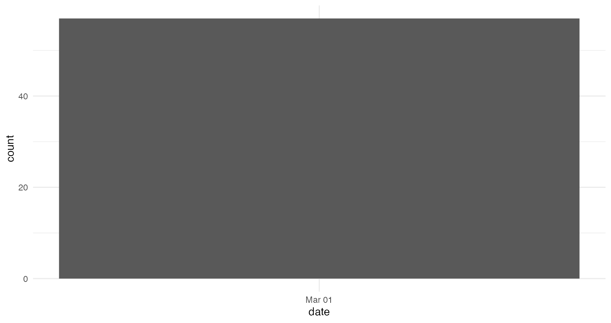

Scrape URLs for each subsection of the Congressional Record
As we do so, we retain some helpful metadata
- The record is divided by date
- The record is divided into three sections: Senate, House, Extensions of Remarks (text submitted to the record later)
- The page number (“S3253” is the 3,253rd page of the record, featuring remarks from the Senate)
The Congressional Record has a page for each day: https://www.congress.gov/congressional-record/2017/6/6/senate-section
On this page are URLs for each subsection. These URLs look like this: https://www.congress.gov/congressional-record/2017/6/6/senate-section/article/S3253-6
We can identify linked text (html_nodes("a")), and put
the URLs (html_attr("href")) and their text
(html_text()) for each date and each section of the record
into a data frame. With map_dfr from the purrr
package, we can then apply this to a range of dates.
# a date range to scrape
dates <- seq(as.Date("2007/03/01"),
as.Date("2007/03/02"),
#Sys.Date(), # today
by = "day")
## For testing
# section <- "senate-section"
# date <- "2020-09-15"
# get_cr_df(date, section)
# an empty dataframe for failed calls
d_init <- tibble(header = "",
date = as.Date(NA),
section = "",
url = "")
# a dataframe of headers, dates, and url paths
senate <- map_dfr(dates, .f = possibly(get_cr_df, otherwise = d_init), section = "senate-section")
house <- map_dfr(dates, .f = possibly(get_cr_df, otherwise = d_init), section = "house-section")
ext <- map_dfr(dates, .f = possibly(get_cr_df, otherwise = d_init), section = "extensions-of-remarks-section")
cr_metadata <- full_join(senate, house) %>%
full_join(ext)
# drop dates where for which there is no record
cr_metadata %<>% filter(header != "")
# Make file var in metadata to merge in htm text
cr_metadata %<>%
mutate(file = url %>%
str_replace(".*record", "CREC") %>%
str_replace("[a-z].*article/", "pt1-Pg") %>%
str_replace_all("/", "-") %>%
str_c(".htm")
) Option 1: Download the text of the congressional record
The “View TXT in new window” URL takes us to a .htm file of just the congressional record text. Compared to the much larger .html of the main page, the (minimal) downside is that some of the header information is lost (nothing distinguishes main headers from subheaders).
html_session() %>% follow_link("View TXT in new window")
takes us to the raw TXT page. With walk from the
purrr package, we can download each raw txt page to a file
with the same name.
# Identify files already downloaded
downloaded <- list.files(here::here("data", "htm"))
length(downloaded)
## test
# get_cr_htm(cr_metadata$url[1])
cr_metadata %<>% arrange(date) %>% arrange(rev(date))
# download file for each url
walk(cr_metadata$url, get_cr_htm)TXT pages look like this: https://www.congress.gov/115/crec/2017/06/06/modified/CREC-2017-06-06-pt1-PgS3253-6.htm
read_html("https://www.congress.gov/115/crec/2017/06/06/modified/CREC-2017-06-06-pt1-PgS3253-6.htm") %>% html_text() %>% str_split("\n") %>% kablebox()
|
Option 2: Download the full HTML
The full HTML of the landing page for each subsection appears to have some metadata beyond the TXT files.
- main subject headers
- possibly speaker IDs (speeches appear to be tagged with member IDs, but I have yet to find them in the HTML)
CAUTION: The full HTML is several GB per year!
# make file path
cr_metadata %<>%
mutate(file = str_c("CREC-",
date,"-",
# the file title
url %>% str_remove(".*article/"),
".html"))
# already downloaded
downloaded <- list.files(here::here("data", "html"))
start <- Sys.time()
walk2(cr_metadata$url, cr_metadata$file, get_cr_html)
Sys.time() - startNumber of documents over time
By day
# clean up data for plot clarity
cr_metadata %<>%
mutate(year = str_sub(date, 1,4),
chamber = section %>%
str_remove("-.*") %>%
str_to_title() %>%
str_replace("Extensions", "Extensions of Remarks"))
cr_metadata %>%
ggplot() +
aes(x = date) +
geom_bar() +
facet_wrap("chamber", ncol = 1, scales = "free_y") By speaker
cr <- list.files(here::here("data/htm"))
# extract date from file name
d <- tibble(file = cr,
date = str_extract(cr, "[0-9]{4}-[0-9]{2}-[0-9]{2}") %>%
as.Date)
d %<>% arrange(date) %>% arrange(rev(date))
#FIXME
# just using 1000 documents for now
d %<>% top_n(100, date)
#d %<>% filter(date > as.Date("2019-03-01"),
# date < as.Date("2019-03-19"))
# get speakers
#d %<>%
#d$spspeaker <- map_chr(d$file, possibly(extract_names, otherwise = ""))
#/FIXME ,_
d %<>% mutate(url_txt = str_c("https://www.congress.gov/117/crec/",
date %>% str_replace_all("-", "/"),
"/modified/",
file))
# Extract speaker names
extract_names(d$file[1])## [1] "HON. SAM GRAVES;Mr. GRAVES"
d %<>%
mutate(speaker = file %>% map_chr(possibly(extract_names, otherwise = "")))
# extract names
# cr_metadata %<>%
# mutate(speaker = file %>% map_chr(possibly(extract_names, otherwise = "")))
############################################
# join metadata to file names
#FIXME for some reason, urls without a -[1-9] at the end seem to be missing from the metadata
d %<>% left_join(cr_metadata)
d %>%
filter(speaker != "") %>%
count(speaker, year) %>%
ggplot() +
aes(x = year, y = n, label = speaker) +
geom_label()Section Headers
NOTE: The plots below use the number of subsections and their headers. Thus, they only require the metadata from scraping the URLs, not the full text.
Most common headers
# clean up headers
cr_metadata %<>%
mutate(subtype = header %>%
toupper() %>%
str_remove(";.*") %>%
str_replace(".*ACT.*", "ACT") %>%
str_replace("MESSAGE ", "MESSAGES ") %>%
str_replace("CONDEMNING.*", "CONDEMNING") %>%
str_remove_all(" BY .*| UNTIL.*| \\(EXECUTIVE.*")
)
# top 100 headers
cr_metadata %>%
count(subtype, sort = T) %>%
head(100) %>%
kablebox()| subtype | n |
|---|---|
| ACT | 20 |
| RECOGNIZING THE FAIRFAX COUNTY CHAMBER OF COMMERCE 2007 VALOR AWARD RECIPIENTS | 5 |
| ADJOURNMENT | 2 |
| MORNING BUSINESS | 2 |
| PLEDGE OF ALLEGIANCE | 2 |
| RECOGNIZING JARRETT MUCK FOR ACHIEVING THE RANK OF EAGLE SCOUT | 2 |
| TEXAS INDEPENDENCE DAY | 2 |
| ``YOU ARE OUR HEROES’’ | 1 |
| 30-SOMETHING WORKING GROUP | 1 |
| 90TH ANNIVERSARY OF U.S. CITIZENSHIP FOR PUERTO RICANS | 1 |
| A TRIBUTE TO JAMES GHIGLIERI OF TOLUCA, ILLINOIS | 1 |
| A TRIBUTE TO THE BEREAN INSTITUTE | 1 |
| A TRIBUTE TO THE LIFE OF MRS. VERNA DUTY | 1 |
| ADDITIONAL COSPONSORS | 1 |
| ADDITIONAL SPONSORS | 1 |
| ADDITIONAL STATEMENTS | 1 |
| ADJOURNMENT TO MONDAY, MARCH 5, 2007, AND HOUR OF MEETING ON FRIDAY, MARCH 9, 2007 | 1 |
| AMENDMENTS SUBMITTED AND PROPOSED | 1 |
| ANNOUNCEMENT | 1 |
| AUTHORITY FOR COMMITTEES TO MEET | 1 |
| AUTHORIZING EXPENDITURES | 1 |
| AUTHORIZING THE SPEAKER TO DECLARE A RECESS ON WEDNESDAY, MARCH 7, 2007, FOR THE PURPOSE OF RECEIVING IN JOINT MEETING HIS MAJESTY KING ABDULLAH II BIN AL HUSSEIN, KING OF JORDAN | 1 |
| BLACK HISTORY MONTH | 1 |
| CELEBRATION OF THE 150TH ANNIVERSARY OF THE LEWISVILLE MASONIC LODGE | 1 |
| CELLULOSIC ETHANOL TECHNOLOGY | 1 |
| CLAUDE RAMSEY POST OFFICE | 1 |
| COMMEMORATING THE 46TH ANNIVERSARY OF THE PEACE CORPS | 1 |
| CONCLUSION OF MORNING BUSINESS | 1 |
| CONFIRMATIONS | 1 |
| CONGRATULATING THE MENDOTA ELEMENTARY SCHOOL ON ITS 50TH ANNIVERSARY | 1 |
| COUNCIL OF KHALISTAN COMMENTS ON PUNJAB ELECTIONS | 1 |
| CROSS PARTY LINES TO PASS COMPREHENSIVE IMMIGRATION REFORM | 1 |
| DARFUR | 1 |
| DISPENSING WITH CALENDAR WEDNESDAY BUSINESS ON WEDNESDAY NEXT | 1 |
| ELLEN WALLACE BUCHANAN | 1 |
| ENROLLED BILLS SIGNED | 1 |
| ETHICS IN THE JUSTICE DEPARTMENT | 1 |
| EXECUTIVE AND OTHER COMMUNICATIONS | 1 |
| EXECUTIVE COMMUNICATIONS, ETC. | 1 |
| EXECUTIVE REPORTS OF COMMITTEES | 1 |
| EXECUTIVE SESSION | 1 |
| FDA REGULATION OF TOBACCO | 1 |
| HONORING BRIAN BOHLMAN | 1 |
| HONORING CAREER OF JOE HARRISON | 1 |
| HONORING CHIEF MASTER SERGEANT JACKSON A. WINSETT | 1 |
| HONORING EARL B. OLSON | 1 |
| HONORING EDWIN O. GUTHMAN | 1 |
| HONORING OUR ARMED FORCES | 1 |
| HONORING THE 30TH ANNIVERSARY OF THE BAILEY’S CROSSROADS ROTARY CLUB | 1 |
| HONORING THE LIFE OF GEORGE BECKER | 1 |
| HOUSE OF REPRESENTATIVES | 1 |
| IN HONOR OF AFLAC, INC. BEING NAMED ONE OF THE BEST COMPANIES IN AMERICA | 1 |
| IN HONOR OF MRS. RHODA ANN SOKOL | 1 |
| IN HONOR OF SYNOVUS BEING NAMED ONE OF THE BEST COMPANIES IN AMERICA | 1 |
| IN SUPPORT OF H.R. 800 | 1 |
| INTRODUCING A CONCURRENT RESOLUTION HONORING THE 50TH ANNIVERSARY OF THE INTERNATIONAL GEOPHYSICAL YEAR (IGY) | 1 |
| INTRODUCTION OF BILLS AND JOINT RESOLUTIONS | 1 |
| INTRODUCTION OF RESOLUTION THAT SUPPORTS THE GOALS AND IDEALS OF ANTI- SLAVERY DAY | 1 |
| INTRODUCTION OF ROYALTY-IN-KIND FOR ENERGY ASSISTANCE LEGISLATION | 1 |
| IRAQ | 1 |
| KUCINICH OPPOSED TO ATTACK ON IRAN | 1 |
| LEAVE OF ABSENCE | 1 |
| LEGISLATIVE PROGRAM | 1 |
| LEGISLATIVE SESSION | 1 |
| MEASURE READ THE FIRST TIME–H.R. 800 | 1 |
| MEASURES READ THE FIRST TIME | 1 |
| MEASURES REFERRED | 1 |
| MESSAGES FROM THE HOUSE | 1 |
| MODIFYING INDIVIDUAL ELIGIBILITY FOR ASSOCIATE MEMBERSHIP IN THE MILITARY ORDER OF THE PURPLE HEART OF THE UNITED STATES OF AMERICA, INCORPORATED | 1 |
| MOURNING THE LOSS OF KEN BERKMAN | 1 |
| NATIONAL EATING DISORDERS AWARENESS WEEK | 1 |
| NEW PUNJAB CHIEF MINISTER URGED TO WORK FOR SIKH SOVEREIGNTY | 1 |
| OFFICIAL TRUTH SQUAD | 1 |
| OPPOSITION TO H.R. 800 | 1 |
| ORDERS FOR FRIDAY, MARCH 2, 2007 | 1 |
| PEACE CORPS VOLUNTEERS | 1 |
| PENCE EXCHANGE WITH AMBASSADOR RICHARD C. HOLBROOK | 1 |
| PRAYER | 1 |
| PROTECTING THE RIGHT TO A SECRET BALLOT | 1 |
| PUBLIC BILLS AND RESOLUTIONS | 1 |
| RECESS | 1 |
| RECOGNITION OF THE MAJORITY LEADER | 1 |
| RECOGNIZING ANN RICHARDS’ EXTRAORDINARY CONTRIBUTIONS TO TEXAS AND AMERICAN PUBLIC LIFE | 1 |
| RECOGNIZING BRIAN PATRICK WESSLING FOR ACHIEVING THE RANK OF EAGLE SCOUT | 1 |
| RECOGNIZING CHRISTOPHER BLAKE FOR ACHIEVING THE RANK OF EAGLE SCOUT | 1 |
| RECOGNIZING EVANSVILLE MATER DEI WRESTLING TEAM | 1 |
| RECOGNIZING LINDA HOLBROOK | 1 |
| RECOGNIZING MIKE KEMNA | 1 |
| RECOGNIZING MR. ERIC BRANSBY’S 90TH BIRTHDAY | 1 |
| RECOGNIZING SPC. RYAN C. GARBS | 1 |
| RECOMMITTING TO A POLITICAL SOLUTION TO THE CONFLICT IN NORTHERN UGANDA | 1 |
| REPORTS OF COMMITTEES | 1 |
| REPORTS OF COMMITTEES ON PUBLIC BILLS AND RESOLUTIONS | 1 |
| RESERVATION OF LEADER TIME | 1 |
| SCHEDULE | 1 |
| SELECT COMMITTEE ON INTELLIGENCE RULES OF PROCEDURE | 1 |
| SENATE | 1 |
| SENATE CONCURRENT RESOLUTION 15–AUTHORIZING THE ROTUNDA OF THE CAPITOL TO BE USED ON MARCH 29, 2007, FOR A CEREMONY TO AWARD THE CONGRESSIONAL GOLD MEDAL TO THE TUSKEGEE AIRMEN | 1 |
| SENATE CONCURRENT RESOLUTION 16–CALLING ON THE GOVERNMENT OF UGANDA AND THE LORD’S RESISTANCE ARMY (LRA) TO RECOMMIT TO A POLITICAL SOLUTION TO THE CONFLICT IN NORTHERN UGANDA AND TO RECOMMENCE… | 1 |
| SIKH EDITOR WRITES TO PRESIDENT BUSH, URGES SUPPORT FOR SIKH FREEDOM | 1 |
top10 <- cr_metadata %>% count(subtype, sort = T) %>% .$subtype %>% head(10)
cr_metadata %>%
filter(subtype %in% top10) %>%
ggplot() +
aes(x = date, fill = subtype) +
geom_bar(width = .9) +
labs(fill = "Most common topics") +
facet_wrap("chamber", ncol = 1, scales = "free")
Most discussed acts
# top 100 headers
cr_metadata %>%
filter(str_detect(header, " ACT( |$)")) %>%
count(header, sort = T) %>%
head(100) %>%
kablebox()| header | n |
|---|---|
| NATIONAL SECURITY FOREIGN INVESTMENT REFORM AND STRENGTHENED TRANSPARENCY ACT OF 2007; Congressional Record Vol. 153, No. 35 | 4 |
| BIOSURVEILLANCE ENHANCEMENT ACT OF 2007; Congressional Record Vol. 153, No. 35 | 1 |
| EMPLOYEE FREE CHOICE ACT AND PEAK OIL; Congressional Record Vol. 153, No. 35 | 1 |
| IMPROVING AMERICA’S SECURITY ACT OF 2007–Continued; Congressional Record Vol. 153, No. 35 | 1 |
| IMPROVING AMERICA’S SECURITY ACT OF 2007; Congressional Record Vol. 153, No. 35 | 1 |
| INTRODUCTION OF THE DECEPTIVE PRACTICES AND VOTER INTIMIDATION PREVENTION ACT OF 2007; Congressional Record Vol. 153, No. 35 | 1 |
| INTRODUCTION OF THE DISTRICT OF COLUMBIA DISTRICT ATTORNEY ESTABLISHMENT ACT OF 2007; Congressional Record Vol. 153, No. 35 | 1 |
| INTRODUCTION OF THE PUSH POLL DISCLOSURE ACT OF 2007; Congressional Record Vol. 153, No. 35 | 1 |
| LOCAL LAW ENFORCEMENT ENHANCEMENT ACT OF 2007; Congressional Record Vol. 153, No. 35 | 1 |
| RAIL AND PUBLIC TRANSPORTATION SECURITY ACT OF 2007; Congressional Record Vol. 153, No. 35 | 1 |
top10 <- cr_metadata %>%
filter(str_detect(header, " ACT( |$)")) %>%
count(header, sort = T) %>% .$header %>% head(10)
cr_metadata %>%
filter(header %in% top10) %>%
mutate(header = header %>% str_remove(";.*")) %>%
ggplot() +
aes(x = factor(year), fill = header) +
geom_bar(width = .9) +
labs(fill = "Most discussed acts",
x = "Year") +
facet_wrap("chamber", ncol = 1, scales = "free_y") Full Text Search
##############################################
# a function to grab sentences with keywords
keyword_sentence <- function(htm_file, word){
text <- read_lines(here::here("data", "htm", htm_file)) %>%
str_c(collapse = " ") %>%
str_squish()
if( str_detect(text, regex(word, ignore_case = T) ) ){
text %<>%
enframe(name = NULL, value = "text") %>%
unnest_tokens(sentence, text, token = "sentences") %>%
filter(str_detect(sentence, regex(word, ignore_case = T) )) %>%
pull(sentence) %>%
str_c(collapse = "...") %>%
str_to_sentence()
} else {
text <- "NA"
}
return(text)
}
## test
# keyword_sentence(file = d$file[6], word = "speaker")Sentences containing “speaker” on 2007-03-01
(a good test because most speaches in the House address the speaker)
d %>%
filter(date == max(d$date) ) %>%
mutate(sentence = map_chr(file, .f = keyword_sentence, word = "speaker") ) %>%
select(date, sentence, url) %>%
filter(sentence != "NA") %>% kablebox()| date | sentence | url |
|---|---|---|
| 2007-03-01 | Madam speaker, i proudly pause to recognize jarrett muck, a very special young man who has exemplified the finest qualities of citizenship and leadership by taking an active part in the boy scouts of america, troop 376, and in earning the most prestigious award of eagle scout….madam speaker, i proudly ask you to join me in commending jarrett muck for his accomplishments with the boy scouts of america and for his efforts put forth in achieving the highest distinction of eagle scout. ____________________ </pre></body></html> | NA |
| 2007-03-01 | Madam speaker, today i am introducing a resolution to mark the 50th anniversary of the international geophysical year (igy), honoring its contributions to space research, and looking forward to future accomplishments….madam speaker, i think that it is fitting that this congress take the time to recognize and honor the fiftieth anniversary of the international geophysical year, and i hope that this concurrent resolution will be speedily adopted by the house. ____________________ </pre></body></html> | NA |
| 2007-03-01 | Madam speaker, i rise today to introduce the biosurveillance enhancement act of 2007. | NA |
| 2007-03-01 | Madam speaker, i rise today to honor the life of mrs. | NA |
| 2007-03-01 | Madam speaker, i proudly pause to recognize jarrett muck, a very special young man who has exemplified the finest qualities of citizenship and leadership by taking an active part in the boy scouts of america, troop 376, and in earning the most prestigious award of eagle scout….madam speaker, i proudly ask you to join me in commending jarrett muck for his accomplishments with the boy scouts of america and for his efforts put forth in achieving the highest distinction of eagle scout. ____________________ </pre></body></html> | NA |
| 2007-03-01 | Madam speaker, i rise today to recognize and commend a company that has made columbus, ga, the second congressional district of georgia and the united states proud. | NA |
| 2007-03-01 | Madam speaker, recently elections were held in punjab….as you know, madam speaker, punjab, khalistan declared its independence on october 7, 1987….madam speaker, i would like to place the council of khalistan’s letter to chief minister badal into the record at this time with the permission of the house. | NA |
| 2007-03-01 | Madam speaker, i rise today to commemorate the 30th anniversary of the bailey’s crossroads rotary club….madam speaker, in closing, i congratulate bailey’s crossroads rotary club on its continued success and contributions to their community and nation. | NA |
| 2007-03-01 | Madam speaker, i proudly pause to recognize brian patrick wessling, a very special young man who has exemplified the finest qualities of citizenship and leadership by taking an active part in the boy scouts of america, troop 395, and in earning the most prestigious award of eagle scout….madam speaker, i proudly ask you to join me in commending brian patrick wessling for his accomplishments with the boy scouts of america and for his efforts put forth in achieving the highest distinction of eagle scout. ____________________ </pre></body></html> | NA |
| 2007-03-01 | Madam speaker, today i am again introducing the royalty-in-kind for energy assistance improvement act. | NA |
| 2007-03-01 | Madam speaker, i rise today to honor the township of millburn, essex county, nj, a vibrant community i am proud to represent….madam speaker, i urge you and my colleagues to join me in congratulating the residents of millburn township on the celebration of 150 years of rich history of one of new jersey’s finest municipalities. ____________________ </pre></body></html> | NA |
| 2007-03-01 | Madam speaker, i rise today to pay tribute to the distinguished public service of linda holbrook. | NA |
| 2007-03-01 | Madam speaker, i rise today to recognize an outstanding group of men and women in northern virginia….madam speaker, in closing, i would like to take this opportunity to thank all the men and women who serve in the vienna police department. | NA |
| 2007-03-01 | Madam speaker, i rise today to recognize and commend a company that has made columbus, ga, the second congressional district of georgia and the united states proud. | NA |
| 2007-03-01 |
Speaker, i join my colleagues today in support of h.r. 884, the
promoting antiterrorism cooperation through technology and science act.'' </td> <td style="text-align:left;"> NA </td> </tr> <tr> <td style="text-align:left;"> 2007-03-01 </td> <td style="text-align:left;"> Madam speaker, the council of khalistan recently issued a press release on the elections in punjab and the victory of the shiromani akali dal....as you know, madam speaker, former president bill clinton, in his foreword to madeline albright's book, wrote that 38 sikhs in chithisinghpora were murdered while he was visiting by hindu militants....madam speaker, the essence of democracy is the right to self- determination....madam speaker, i request permission to place the council of khalistan's press release on the punjab ejections into the record at this time. </td> <td style="text-align:left;"> NA </td> </tr> <tr> <td style="text-align:left;"> 2007-03-01 </td> <td style="text-align:left;"> Madam speaker, i rise today to honor and pay tribute to oregon's last world war i veteran, mr....madam speaker, our country is honored by his service and thankful for all that he gave to ensure our freedom. ____________________ </pre></body></html> </td> <td style="text-align:left;"> NA </td> </tr> <tr> <td style="text-align:left;"> 2007-03-01 </td> <td style="text-align:left;"> Madam speaker, i rise today to recognize the fourth grade class at redeemer lutheran school in pensacola, florida, for their letters of appreciation to our nation's past and present servicemen and women....madam speaker, i commend these young folks for their thoughtfulness and patriotism. </td> <td style="text-align:left;"> NA </td> </tr> <tr> <td style="text-align:left;"> 2007-03-01 </td> <td style="text-align:left;"> Madam speaker, i rise today to congratulate the peace corps on its 46th anniversary, and commend the agency and its volunteers on the invaluable contribution they have made in promoting america's interests and values around the world since the organization's founding in 1961....speaker, to join me in celebrating the peace corps' success and wishing it well into the future. </td> <td style="text-align:left;"> NA </td> </tr> <tr> <td style="text-align:left;"> 2007-03-01 </td> <td style="text-align:left;"> Madam speaker, i rise today to honor the riverdale volunteer fire department in the borough of riverdale, morris county, new jersey, a vibrant community i am proud to represent....madam speaker, i urge you and my colleagues to join me in congratulating the borough of riverdale volunteer fire department and all its firefighters, past and present, on the 100th anniversary of protecting one of new jersey's finest municipalities. ____________________ </pre></body></html> </td> <td style="text-align:left;"> NA </td> </tr> <tr> <td style="text-align:left;"> 2007-03-01 </td> <td style="text-align:left;"> Madam speaker, i proudly pause to recognize christopher blake, a very special young man who has exemplified the finest qualities of citizenship and leadership by taking an active part in the boy scouts of america, troop 395, and in earning the most prestigious award of eagle scout....over the many years christopher has been involved with scouting, he has not only earned numerous merit badges, but also the respect of his family, peers, and community, madam speaker, i proudly ask you to join me in commending christopher blake for his accomplishments with the boy scouts of america and for his efforts put forth in achieving the highest distinction of eagle scout. ____________________ </pre></body></html> </td> <td style="text-align:left;"> NA </td> </tr> <tr> <td style="text-align:left;"> 2007-03-01 </td> <td style="text-align:left;"> Madam speaker, i rise today to recognize an outstanding group of men and women in northern virginia....madam speaker, in closing, i would like to take this opportunity to thank all the men and women who serve in the fairfax county police department. </td> <td style="text-align:left;"> NA </td> </tr> <tr> <td style="text-align:left;"> 2007-03-01 </td> <td style="text-align:left;"> Madam speaker, recently, dr....madam speaker, i call on all my colleagues, especially those who are promoters of india, to read this devastating letter....we can makce a difference, madam speaker....madam speaker, i would like to insert dr. </td> <td style="text-align:left;"> NA </td> </tr> <tr> <td style="text-align:left;"> 2007-03-01 </td> <td style="text-align:left;"> Madam speaker, on sunday, march 4, 2007, an important event will take place in charleston, sc. </td> <td style="text-align:left;"> NA </td> </tr> <tr> <td style="text-align:left;"> 2007-03-01 </td> <td style="text-align:left;"> Madam speaker, today i introduce the district of columbia district attorney establishment act of 2007, continuing a series of bills that i will introduce this session to ensure a continuation of the process of transition to full democracy and self- government for the residents of the district of columbia. </td> <td style="text-align:left;"> NA </td> </tr> <tr> <td style="text-align:left;"> 2007-03-01 </td> <td style="text-align:left;"> Madam speaker, i rise today to pay tribute to robert l. </td> <td style="text-align:left;"> NA </td> </tr> <tr> <td style="text-align:left;"> 2007-03-01 </td> <td style="text-align:left;"> Madam speaker, i rise today to honor daletta andreas, executive director of the hill country chapter in kerrville, tx, who passed away the weekend of february 24 following a brief illness. </td> <td style="text-align:left;"> NA </td> </tr> <tr> <td style="text-align:left;"> 2007-03-01 </td> <td style="text-align:left;"> Madam speaker, i rise today to recognize coach mike goebel and the evansville mater dei wrestling team for winning their second consecutive indiana high school state championship. </td> <td style="text-align:left;"> NA </td> </tr> <tr> <td style="text-align:left;"> 2007-03-01 </td> <td style="text-align:left;"> Madam speaker, i rise today to recognize the life of army specialist ryan c. </td> <td style="text-align:left;"> NA </td> </tr> <tr> <td style="text-align:left;"> 2007-03-01 </td> <td style="text-align:left;"> Madam speaker, today, along with six of my colleagues, i am introducing legislation to increase the disclosure requirements for telephonepush
polls.’’
|
NA |
| 2007-03-01 | Madam speaker, i rise today to express a measured degree of optimism that congress will pass a comprehensive immigration reform package this year. | NA |
| 2007-03-01 |
Madam speaker, today i am introducing legislation to designate the
facility of the united states postal service located at 6301 highway 58
in harrison, tennessee, as the
claude ramsey post office.''...madam speaker, i urge all members to support the passage of this legislation that honors mayor claude ramsey for his commendable public service to the people of hamilton county and the state of tennessee. ____________________ </pre></body></html> </td> <td style="text-align:left;"> NA </td> </tr> <tr> <td style="text-align:left;"> 2007-03-01 </td> <td style="text-align:left;"> Madam speaker, in recognition of the benefits the port of galveston provides to galveston, and the nation, the galveston chamber of commerce will honor the port on march 7....madam speaker, the port of galveston's contribution to the texas and united states economies is by no means limited to the cruise business....in conclusion, madam speaker, i am pleased to join the galveston chamber of commerce in honoring the management of the port of galveston for all of their contributions to the economies of galveston, texas, and the world. ____________________ </pre></body></html> </td> <td style="text-align:left;"> NA </td> </tr> <tr> <td style="text-align:left;"> 2007-03-01 </td> <td style="text-align:left;"> Madam speaker, the berean institute's long and esteemed history began with the vision of one man, reverend matthew anderson. </td> <td style="text-align:left;"> NA </td> </tr> <tr> <td style="text-align:left;"> 2007-03-01 </td> <td style="text-align:left;"> Madam speaker, i would like to take this opportunity to recognize national eating disorders awareness week. </td> <td style="text-align:left;"> NA </td> </tr> <tr> <td style="text-align:left;"> 2007-03-01 </td> <td style="text-align:left;"> Madam speaker, i proudly pause to recognize mike kemna, superintendent of crossroads correctional center, in cameron missouri....madam speaker, i proudly ask you to join me in recognizing mike kemna, an exceptional leader of crossroads correctional center, as we honor his dedication, strength and devotion to the department of corrections throughout his long career. ____________________ </pre></body></html> </td> <td style="text-align:left;"> NA </td> </tr> <tr> <td style="text-align:left;"> 2007-03-01 </td> <td style="text-align:left;"> Madam speaker, i rise today to recognize an outstanding group of men and women in northern virginia....madam speaker, in closing, i would like to take this opportunity to thank all the men and women who serve in the fairfax county fire and rescue department. </td> <td style="text-align:left;"> NA </td> </tr> <tr> <td style="text-align:left;"> 2007-03-01 </td> <td style="text-align:left;"> Madam speaker, i rise today to pay tribute to my constituent and friend james ghiglieri of toluca, illinois. </td> <td style="text-align:left;"> NA </td> </tr> <tr> <td style="text-align:left;"> 2007-03-01 </td> <td style="text-align:left;"> Madam speaker, i rise today to pay tribute to private joshuajosh’’
roy mozingo, who passed away after a car accident on thursday, january
11, 2007….madam speaker, dedicated service to others has been the
embodiment of josh’s life.
|
NA |
| 2007-03-01 | Madam speaker, i am pleased that yesterday a resident of south carolina’s second congressional district, brian bohlman of columbia, had the honor of meeting with president george w. | NA |
| 2007-03-01 |
Madam speaker, i rise today to introduce the
motorsports fairness and permanency act.'' </td> <td style="text-align:left;"> NA </td> </tr> <tr> <td style="text-align:left;"> 2007-03-01 </td> <td style="text-align:left;"> Madam speaker, i rise today to pay a personal tribute to my good friend and trusted advisor for many years, former state senator sherman jones of kansas city, kansas, who died on february 21....for many years, he was a leading member of the kansas city, kansas, community, as well as a valued member of my kitchen cabinet and surrogate speaker on my political team....madam speaker, i know that you and the entire house of representatives join with me in celebrating the life of senator sherman jones and in sharing the loss felt by ameila jones, their family and their many friends. </td> <td style="text-align:left;"> NA </td> </tr> <tr> <td style="text-align:left;"> 2007-03-01 </td> <td style="text-align:left;"> Madam speaker, this last day of february marks the end of black history month, the annual celebration commemorating the contributions of african americans to this great nation. </td> <td style="text-align:left;"> NA </td> </tr> <tr> <td style="text-align:left;"> 2007-03-01 </td> <td style="text-align:left;"> Madam speaker, i rise today in celebration of the lewisville masonic lodge's 150th anniversary, which will be on march 10, 2007. </td> <td style="text-align:left;"> NA </td> </tr> <tr> <td style="text-align:left;"> 2007-03-01 </td> <td style="text-align:left;"> Madam speaker, as a former peace corps volunteer, i am honored to formally recognize the agency on the 46th anniversary of its inception and to help kick-off national peace corps week. </td> <td style="text-align:left;"> NA </td> </tr> <tr> <td style="text-align:left;"> 2007-03-01 </td> <td style="text-align:left;"> Madam speaker, i am pleased to join with representative rahm emanuel in jointly introducing the deceptive practices and voter intimidation prevention act. </td> <td style="text-align:left;"> NA </td> </tr> <tr> <td style="text-align:left;"> 2007-03-01 </td> <td style="text-align:left;"> Madam speaker, i rise today to recognize an outstanding group of men and women in northern virginia....madam speaker, in closing, i would like to take this opportunity to thank all the men and women who serve in the herndon police department. </td> <td style="text-align:left;"> NA </td> </tr> <tr> <td style="text-align:left;"> 2007-03-01 </td> <td style="text-align:left;"> Madam speaker, at the end of the spanish american war in 1898, puerto rico was ceded to the united states and became a territory under the territorial clause of the u.s. </td> <td style="text-align:left;"> NA </td> </tr> <tr> <td style="text-align:left;"> 2007-03-01 </td> <td style="text-align:left;"> Madam speaker, tonight, i rise to honor two companies in florida's district 16 who are on the leading edge of cellulosic ethanol technology and encouraging the use of crops other than corn to help meet the energy needs of our country--citrus energy, llp and alico, inc. </td> <td style="text-align:left;"> NA </td> </tr> <tr> <td style="text-align:left;"> 2007-03-01 </td> <td style="text-align:left;"> Speaker, i rise in strong support of h. </td> <td style="text-align:left;"> NA </td> </tr> <tr> <td style="text-align:left;"> 2007-03-01 </td> <td style="text-align:left;"> Madam speaker, i rise to commemorate national peace corps week and the 46th anniversary of the peace corps....madam speaker, i have seen the valuable work the peace corps is doing in africa, and throughout the world. </td> <td style="text-align:left;"> NA </td> </tr> <tr> <td style="text-align:left;"> 2007-03-01 </td> <td style="text-align:left;"> Madam speaker, i rise today in recognition of the 46th anniversary of the peace corps. </td> <td style="text-align:left;"> NA </td> </tr> <tr> <td style="text-align:left;"> 2007-03-01 </td> <td style="text-align:left;"> Madam speaker, as chairman of the commission on security and cooperation in europe, i am privileged to add my voice today to those honoring vaclav havel, czechoslovakia's first post- communist president, and the charter 77 movement which, 30 years ago, he helped to found. </td> <td style="text-align:left;"> NA </td> </tr> <tr> <td style="text-align:left;"> 2007-03-01 </td> <td style="text-align:left;"> Madam speaker, i rise today to honor a very accomplished young man....madam speaker, andre dabney is a model of achievement. </td> <td style="text-align:left;"> NA </td> </tr> <tr> <td style="text-align:left;"> 2007-03-01 </td> <td style="text-align:left;"> Madam speaker, on the occasion of his retirement this month, i'd like to take this opportunity to recognize and thank jerry director, our deputy law revision counsel, as he concludes a long and distinguished career spent serving the american people in the u.s, house of representatives. </td> <td style="text-align:left;"> NA </td> </tr> <tr> <td style="text-align:left;"> 2007-03-01 </td> <td style="text-align:left;"> Madam speaker, i rise today to encourage my colleagues' strong support of the resolution that i have introduced which supports the goals and ideals of anti-slavery day. </td> <td style="text-align:left;"> NA </td> </tr> <tr> <td style="text-align:left;"> 2007-03-01 </td> <td style="text-align:left;"> Madam speaker, i rise today to pay tribute to joe harrison, president and ceo of the american moving and storage association (amsa). </td> <td style="text-align:left;"> NA </td> </tr> <tr> <td style="text-align:left;"> 2007-03-01 </td> <td style="text-align:left;"> Madam speaker, i rise today to recognize an outstanding group of men and women in northern virginia....madam speaker, in closing, i would like to take this opportunity to thank all the men and [[page e449]] women who serve in the fairfax county sheriff's office. </td> <td style="text-align:left;"> NA </td> </tr> <tr> <td style="text-align:left;"> 2007-03-01 </td> <td style="text-align:left;"> Madam speaker, today i rise to congratulate mendota elementary school on its 50th anniversary. </td> <td style="text-align:left;"> NA </td> </tr> <tr> <td style="text-align:left;"> 2007-03-01 </td> <td style="text-align:left;"> Madam speaker, i rise today to reintroduce the filipino veterans family reunification act, a companion to senator akaka's bill of the same name, which will provide for the expedited reunification of the families of our filipino world war ii veterans. </td> <td style="text-align:left;"> NA </td> </tr> <tr> <td style="text-align:left;"> 2007-03-01 </td> <td style="text-align:left;"> Madam speaker, i rise in recognition of mr. </td> <td style="text-align:left;"> NA </td> </tr> <tr> <td style="text-align:left;"> 2007-03-01 </td> <td style="text-align:left;"> Speaker, i rise in support of h....speaker, i support h....speaker, we must not allow heart disease to become a silent killer. </td> <td style="text-align:left;"> NA </td> </tr> <tr> <td style="text-align:left;"> 2007-03-01 </td> <td style="text-align:left;"> Madam speaker, i rise today in great sadness....that, madam speaker, is the true legacy of ken berkman. </td> <td style="text-align:left;"> NA </td> </tr> <tr> <td style="text-align:left;"> 2007-03-01 </td> <td style="text-align:left;"> Madam speaker, last year representatives and leaders of virginia's native american tribes left their communities and flew to england to participate in ceremonies that were a prelude to the 400th anniversary of the first permanent english settlement in america. </td> <td style="text-align:left;"> NA </td> </tr> <tr> <td style="text-align:left;"> 2007-03-01 </td> <td style="text-align:left;"> Madam speaker, i rise today to honor the memory of mrs....madam speaker, i sincerely hope that my colleagues will join me in recognizing mrs. </td> <td style="text-align:left;"> NA </td> </tr> <tr> <td style="text-align:left;"> 2007-03-01 </td> <td style="text-align:left;"> Madam speaker, i rise today to pay tribute to the career of ed guthman, a dedicated public servant and master of his [[page e452]] craft, who is being honored tonight at the university of southern california. </td> <td style="text-align:left;"> NA </td> </tr> <tr> <td style="text-align:left;"> 2007-03-01 </td> <td style="text-align:left;"> Madam speaker, today i have introduced a bill to improve the security of railroad, public transportation, and over-the- road bus systems in the united states....madam speaker, this bill carefully crafts a joint approach on security. </td> <td style="text-align:left;"> NA </td> </tr> <tr> <td style="text-align:left;"> 2007-03-01 </td> <td style="text-align:left;"> Madam speaker, i ask for unanimous consent to address the house for one minute and to revise and extend my remarks. </td> <td style="text-align:left;"> NA </td> </tr> <tr> <td style="text-align:left;"> 2007-03-01 </td> <td style="text-align:left;"> Madam speaker, it is a great honor for me to rise in recognition of the highly successful career and notable achievements of ms....madam speaker, on behalf of my staff, and the constituents of the 6th district of south carolina, i ask you and my colleagues to join us in saluting the contributions of ellen wallace buchanan and wish her well in the years to come. ____________________ </pre></body></html> </td> <td style="text-align:left;"> NA </td> </tr> <tr> <td style="text-align:left;"> 2007-03-01 </td> <td style="text-align:left;"> Doctype html public "-//w3c//dtd html 4.0 transitional//en" "http://www.w3.org/tr/rec-html40/loose.dtd"> <html><body><pre> [page h2041] from the congressional record online through the government publishing office [<a href="http://www.gpo.gov">www.gpo.gov</a>] the journal the speaker. </td> <td style="text-align:left;"> NA </td> </tr> <tr> <td style="text-align:left;"> 2007-03-01 </td> <td style="text-align:left;"> Doctype html public "-//w3c//dtd html 4.0 transitional//en" "http://www.w3.org/tr/rec-html40/loose.dtd"> <html><body><pre> [page h2041] from the congressional record online through the government publishing office [<a href="http://www.gpo.gov">www.gpo.gov</a>] pledge of allegiance the speaker. </td> <td style="text-align:left;"> NA </td> </tr> <tr> <td style="text-align:left;"> 2007-03-01 </td> <td style="text-align:left;"> Doctype html public "-//w3c//dtd html 4.0 transitional//en" "http://www.w3.org/tr/rec-html40/loose.dtd"> <html><body><pre> [page h2041] from the congressional record online through the government publishing office [<a href="http://www.gpo.gov">www.gpo.gov</a>] announcement by the speaker the speaker. </td> <td style="text-align:left;"> NA </td> </tr> <tr> <td style="text-align:left;"> 2007-03-01 </td> <td style="text-align:left;"> Madam speaker, i rise this morning in a pair of work boots that i have owned for 26 years to express my strong support for h.r. 800, the employee free choice act. </td> <td style="text-align:left;"> NA </td> </tr> <tr> <td style="text-align:left;"> 2007-03-01 </td> <td style="text-align:left;"> Madam speaker, today, the house will take up legislation that will remove the right of americans to a secret ballot in their union elections....madam speaker, we cannot advance the interests of americans by taking away their right to a secret ballot....madam speaker, we know that the union movement has lost over 3,000 dues-paying members alone. </td> <td style="text-align:left;"> NA </td> </tr> <tr> <td style="text-align:left;"> 2007-03-01 </td> <td style="text-align:left;"> Madam speaker, i rise today to recognize and honor united states marine corps sergeant clinton w....madam speaker, i submit this recognition to the united states house of representatives in honor of their sacrifice so that clinton w. </td> <td style="text-align:left;"> NA </td> </tr> <tr> <td style="text-align:left;"> 2007-03-01 </td> <td style="text-align:left;"> Madam speaker, as we take a very important vote for organized labor today, i rise to honor the life of george becker, who passed away last month. </td> <td style="text-align:left;"> NA </td> </tr> <tr> <td style="text-align:left;"> 2007-03-01 </td> <td style="text-align:left;"> Madam speaker, it is clearly and cleverly entitled theemployee
free choice act,’’ but we are about to consider a bill that strips away
the very tool that protects the sanctity of a free and open society, the
private ballot.
|
NA |
| 2007-03-01 | Madam speaker, the secretary of state made news this week….madam speaker, this is a welcomed step in the right direction. | NA |
| 2007-03-01 | Madam speaker, in the rainy season in central texas at a place called washington on the brazos, texas decided they had had enough of the new dictator of mexico and declared themselves to be a free nation on march 2, 1836….and, madam speaker, the rest, they say, is texas history. | NA |
| 2007-03-01 |
Madam speaker, by direction of the committee on rules, i call up house
resolution 203 and ask for its immediate consideration….203 resolved,
that at any time after the adoption of this resolution the speaker may,
pursuant to clause 2(b) of rule xviii, declare the house resolved into
the committee of the whole house on the state of the union for
consideration of the bill (h.r. 800) to amend the national labor
relations act to establish an efficient system to enable employees to
form, join, or assist labor organizations, to provide for mandatory
injunctions for unfair labor practices during organizing efforts, and
for other purposes….madam speaker, i have a parliamentary inquiry….the
speaker pro tempore (ms….madam speaker, i believe on the opening day of
the session, did we or did we not pass house resolution 6, that was the
rules package?…the speaker pro tempore….the speaker pro tempore….madam
speaker, for the purpose of debate only, i yield the customary 30
minutes to the gentleman from texas (mr….madam speaker, i yield myself
such time as i may consume….madam speaker, house resolution 203 provides
for consideration of h.r. 800, the employee free choice act, under a
structured rule with 1 hour of general debate equally divided and
controlled by the chairman and the ranking minority member of the
committee on education and labor….madam speaker, i am so honored to be
here to talk about this rule and this bill….and madam speaker, when you
work as a labor lawyer, unfortunately, often you see people with that
fear in their eyes….madam speaker, i reserve the balance of my
time….madam speaker, i rise today in strong opposition to this modified
closed rule and to the democrat leadership bringing legislation to the
floor of this house which will provide for an unprecedented intimidation
of employees by union bosses under a fundamentally anti-democratic
process known as
card check.''...madam speaker, i could argue this sentiment even more....madam speaker, the supporters of this legislation will also avoid coming to the floor to explain the fairness of allowing for the certification of unions through card check, but forcing workers who want to decertify their union to go through the same ballot process. {time} 1030 once again, rather than providingfairness,’’
it seems like this legislation is providing special consideration and
privileges for unions….madam speaker, with cases like these, it is no
wonder that fewer and fewer americans believe that unions speak on their
behalf and that union bosses must now come hat in hand to the house
floor asking members of congress to stack the deck in their favor….madam
speaker, i reserve the balance of my time….madam speaker, before i
yield, i would like to remind the gentleman from texas that this does
not eliminate the right of employees to have a secret ballot….madam
speaker, i yield 2 minutes to the gentleman, the distinguished member of
the rules committee, from vermont (mr….madam speaker, our american
democracy depends on a strong middle class, and our middle class has
relied on institutions that support working americans….madam speaker, at
this time i would like to yield 5 minutes to the gentleman from the
rules committee, lincoln diaz-balart….madam speaker, i thank my friend
from texas for yielding the time….madam speaker, i come to this debate
as a strong supporter of the right of collective bargaining….madam
speaker, i yield 3 minutes to the gentlewoman from florida (ms….madam
speaker, i thank my colleague, representative sutton from ohio, who has
been fighting her whole career for the hardworking families in ohio and
now in the congress is fighting for american workers throughout our
country….this legislation serves as tangible evidence of the new
direction being charted by this new congress under speaker nancy
pelosi….i am proud to stand today with our speaker and this new congress
to chart a new direction for our country….madam speaker, i yield 3
minutes to the gentleman from indiana (mr….madam speaker, it is now
march 1, the third month since the democrat party took over
congress….madam speaker, i yield 1 minute to the distinguished
gentlewoman from california (ms….madam speaker, i rise in strong support
as a family member from a strong union background….madam speaker, i
yield 3 minutes to the distinguished gentleman iowa (mr….madam speaker,
i thank the gentleman from texas for yielding….madam speaker, i rise in
opposition to this modified closed rule today….we are not going to get
that real debate on exempting small businesses here, madam speaker, and
that is unfortunate….madam speaker, i rise in support of the rule….but,
madam speaker, this disappearing middle-class has no lobby here in
washington, dc….today, we are making standing up for what is right in
the workplace a little easier, madam speaker….madam speaker, i would
like to yield 5 minutes to the gentleman from san dimas, california
(mr….madam speaker, i thank my friend from dallas for his very able
handling of this rule, and i congratulate my friend from ohio as
well….madam speaker, i have to rise in strong opposition to this
rule….we, madam speaker, when we proceeded with the rules committee
[[page h2048]] meeting last night, my very good friend from martinez,
california, the distinguished chairman of the education and labor
committee, mr….but i have read the bill since that time, madam
speaker….and there is a sadness that many people have over the fact that
the big three auto makers here in the united states are faced with real
difficulty. {time} 1100 well, madam speaker, i argue that part of that
challenge has been the overwhelming control that unions have had and the
union leadership has really jeopardized the opportunity for individual
choice for members….madam speaker, we are undermining that with this
legislation that we are about to embark upon here today….the speaker pro
tempore….madam speaker, before i yield to the honorable gentleman from
texas, i would just like to point out to my distinguished friend from
the rules committee that the sanctity of the secret ballot is preserved
in this bill….madam speaker, i yield 1 minute to the gentleman from
texas (mr….madam speaker, let’s not forget that it was with the help of
organized, unionized workers that we acquired the 40- hour work week,
that we instilled child labor laws, that we have paid leave, that we
have pensions, and that we have health care….madam speaker, in a world
where loyalty to workers is becoming an endangered species, the passage
of the employee free choice act helps to level the playing field between
industry and workers, and it will give workers a fair chance to organize
and fight invidious outsourcing….madam speaker, i stand here today in
support of giving our working men and women a fair chance and a free
choice to form a union….madam speaker, some people say that liars figure
and figures lie, but i want the american people to hear these figures
and decide for themselves whether they believe that american workers
should have the right to unionize: workers who belong to unions earn 30
percent more than non-union workers….[[page h2049]] madam speaker, i
urge my colleagues to hear the voices of our 60 million working brothers
and sisters: who say they want a voice at their workplace, who say they
want a choice at their workplace, who say they want unions….madam
speaker, i would inquire if my colleague has additional speakers….the
speaker pro tempore….madam speaker, i reserve the balance of my
time….madam speaker, i yield 1\1/2 minutes to the gentleman from
colorado (mr….madam speaker, i will vote for this bill….madam speaker, i
yield 4 minutes to the ranking member of the education and labor
workforce committee, the gentleman from california (mr….madam speaker, i
thank the gentleman for yielding me this time….madam speaker, i rise in
opposition to this bill and to this rule….frankly, madam speaker, i can
go on and on….madam speaker, we had an opportunity to strengthen this
debate and address head-on the many flaws of the underlying legislation,
but we were denied that opportunity; and as such, i urge my colleagues
to join me in opposing this rule….madam speaker, i yield 2\1/2 minutes
to the gentleman from new jersey (mr….madam speaker, i thank my friend
for yielding and thank her for her great work in shepherding this bill
along….madam speaker, i reserve the balance of my time….madam speaker, i
yield 1\1/2 minutes to the distinguished gentleman from new york
(mr….madam speaker, i stand here to support the employee free choice act
because it is necessary….madam speaker, i yield 3 minutes to the
distinguished gentleman from oregon (mr….madam speaker, i appreciate the
gentlewoman’s courtesy in permitting me to speak on this rule….madam
speaker, washington is under a barrage of people from all over the
country, union organizers, union bosses, the business community, this
week talking about this bill….i believe that you have heard today a
story that this is an attack on the american free enterprise system, but
madam speaker, i would also say that there are lots of groups that also
understand the problems with this bill….nancy pelosi, speaker of the
house, house of representatives, washington, dc….dear madam speaker: i
am writing on behalf of the membership of the fraternal order of police
to advise you of our strong opposition to h.r. 800, the so-called
employee free choice act,'' which was favorably reported by the house committee on education and labor....they are a union organization, and they note in their letter to speaker nancy pelosi:the
fourth circuit court of appeals wrote that, `it would be difficult to
imagine a more unreliable method of ascertaining the real wishes of an
employees than a card check.’…’’ madam speaker, this is an assault on a
free enterprise system….i would like to say, madam speaker, the prior
majority, the republican party, for years has been trying to gain health
care rights for workers….[[page h2053]] madam speaker, i believe that
this new majority, the democrat party, should offer this same
opportunity to every single american, to make their life better, the
opportunity to have health care and better working conditions for their
own families….madam speaker, the free enterprise system works….madam
speaker, i oppose this bill….the speaker pro tempore….madam speaker, we
have made it clear this morning why passing this bipartisan employee
free choice act is so vital for workers and their families all across
this nation….madam speaker, i rise today in support of this rule and the
underlying legislation….madam speaker, when i was a child, my parents
took us out of florida in search of higher wages….madam speaker, i yield
back the balance of my time, and i move the previous question on the
resolution….the speaker pro tempore….the question was taken; and the
speaker pro tempore announced that the ayes appeared to have it….madam
speaker, i object to the vote on the ground that a quorum is not present
and make the point of order that a quorum is not present….the speaker
pro tempore….the speaker pro tempore….madam speaker, on rollcall no.
112, had i been present, i would have voted
yea.''...the speaker pro tempore....the question was taken; and the speaker pro tempore announced that the ayes appeared to have it....madam speaker, i demand a recorded vote....the speaker pro tempore....mack manzullo marchant mccarthy (ca) mccaul (tx) mccotter mccrery mchenry mckeon mcmorris rodgers mica miller (fl) miller (mi) miller, gary moran (ks) murphy, tim myrick neugebauer nunes paul pearce pence peterson (pa) petri pickering pitts platts poe porter price (ga) pryce (oh) putnam radanovich ramstad regula rehberg reichert renzi rogers (al) rogers (ky) rogers (mi) rohrabacher ros-lehtinen roskam royce ryan (wi) sali saxton schmidt sensenbrenner sessions shadegg shays shimkus shuster simpson smith (ne) smith (nj) smith (tx) souder stearns sullivan tancredo terry thornberry tiahrt tiberi turner upton walberg walden (or) walsh (ny) wamp weldon (fl) weller westmoreland whitfield wicker wilson (nm) wilson (sc) wolf young (ak) young (fl) not voting--8 cubin davis, jo ann hunter inslee jefferson maloney (ny) musgrave reynolds announcement by the speaker pro tempore the speaker pro tempore (during the vote)....the speaker pro tempore (mr....madam chair, it is my honor to yield 1 minute to an individual who has turned the direction of this institution and the country towards the forgotten middle class, the speaker of the house of representatives, the gentlewoman from california (ms....madam chairman, since we have only one speaker at this point, i would reserve my time....he has been one of the most courageous, emphatic and faithful speakers on behalf of working americans that we have in this house....speaker, this bipartisan legislation, the employee free choice act, is simply about establishing fairness in the workplace and providing america's workers with a free choice to bargain for better wages, benefits and work conditions....i agreed with the distinguished speaker of the house who said it is about liberty and justice....madam chair, i thank the distinguished manager and i thank the distinguished speaker, and as well, george miller, the chairman of the education committee, for his statement he made just a few weeks ago, how he had seen an absence of recognition of middle class workers in america being addressed in his committee and he was going to address it....madam speaker, this legislation is long overdue....speaker, i urge my colleagues to support h.r....the fraternal order of police labor union wrote to our speaker on tuesday against this bill, saying:this
ill-named legislation attacks the very meaning of free choice….maybe in
very urban settings this kind of movement of nurses and technicians can
be sustained madam speaker, but in critical access hospitals in
colville, omak or davenport, wa, this kind of transition puts access to
quality health care in jeopardy….i would ask the gentleman if he has
further speakers….my response would be i have no further speakers and 1
minute remaining….madam chairwoman, i am happy to yield at this time 3
minutes to the former speaker, the gentleman from illinois (mr….madam
chairman, the previous speaker said this is only the beginning….madam
chair, we have no other speakers on our side….accordingly, the committee
rose; and the speaker pro tempore (ms….the speaker pro tempore….the
speaker pro tempore….madam speaker, i offer a motion to recommit….the
speaker pro tempore….the speaker pro tempore….madam speaker, i ask
unanimous consent that the motion to recommit be considered as read and
printed in the record….the speaker pro tempore….the speaker pro
tempore….madam speaker, it defies logic that anyone who lives in this
nation illegally and works here illegally is able to decide whether
legal workers must join a union….the bottom line, madam speaker, is
those illegally working in this country should not be pressured into
making major decisions such as those involving unionization that will
only serve to further erode the free choice of workers who are lawfully
here….madam speaker, i yield the gentleman from georgia (mr….madam
speaker, i thank the gentleman for his leadership on this issue and in
this house….madam speaker, we yield back the balance of our time….madam
speaker, i rise in opposition to the motion to recommit….the speaker pro
tempore….madam speaker and members of the house, this is one of the more
cynical amendments that could be offered at this time….madam speaker, i
yield time to mr….madam speaker, enforce the law….madam speaker, point
of order….the speaker pro tempore….the gentleman is violating the rules
by not speaking to the speaker….the speaker pro tempore….madam speaker,
all i can tell you is these people over here, when it was a question of
the company, illegal immigration didn’t bother them….madam speaker, i
just want to say to the house, let’s not vote for this cynical
amendment….the speaker pro tempore….the speaker pro tempore….the
question was taken; and the speaker pro tempore announced that the noes
appeared to have it….madam speaker, i demand a recorded vote….the
speaker pro tempore….sanchez, loretta sarbanes saxton schakowsky schiff
schwartz scott (ga) scott (va) serrano sestak shea-porter sherman sires
skelton slaughter smith (nj) smith (wa) snyder solis space spratt stark
stupak sutton tanner tauscher thompson (ca) thompson (ms) tierney towns
udall (co) udall (nm) van hollen velazquez visclosky walz (mn) wasserman
schultz waters watson watt waxman weiner welch (vt) wexler wilson (nm)
wilson (oh) woolsey wu wynn yarmuth answered
present''--1 paul not voting--6 cubin davis, jo ann inslee jefferson maloney (ny) poe announcement by the speaker pro tempore the speaker pro tempore (during the vote)....the speaker pro tempore....the question was taken; and the speaker pro tempore announced that the noes appeared to have it....madam speaker, i demand a recorded vote....the speaker pro tempore....madam speaker, on rollcall no. </td> <td style="text-align:left;"> NA </td> </tr> <tr> <td style="text-align:left;"> 2007-03-01 </td> <td style="text-align:left;"> Madam speaker, today's washington post details more allegations of political influence in the recent firing of eight u.s. attorneys....madam speaker, this congress passed the most sweeping ethics changes since watergate. </td> <td style="text-align:left;"> NA </td> </tr> <tr> <td style="text-align:left;"> 2007-03-01 </td> <td style="text-align:left;"> Speaker, i yield to my good friend, the majority leader, for information about next week's schedule....speaker, i thank my friend, mr....speaker, at 12:30 p.m. for morning hour business and 2 p.m. for legislative business....speaker, i thank the gentleman for that information....speaker, on the bills the gentleman mentioned, i know this week we had a second open rule of the congress. </td> <td style="text-align:left;"> NA </td> </tr> <tr> <td style="text-align:left;"> 2007-03-01 </td> <td style="text-align:left;"> Speaker, i ask unanimous consent that the business in order under the calendar wednesday rule be dispensed with on wednesday next....the speaker pro tempore. </td> <td style="text-align:left;"> NA </td> </tr> <tr> <td style="text-align:left;"> 2007-03-01 </td> <td style="text-align:left;"> Doctype html public "-//w3c//dtd html 4.0 transitional//en" "http://www.w3.org/tr/rec-html40/loose.dtd"> <html><body><pre> [page h2093] from the congressional record online through the government publishing office [<a href="http://www.gpo.gov">www.gpo.gov</a>] authorizing the speaker to declare a recess on wednesday, march 7, 2007, for the purpose of receiving in joint meeting his majesty king abdullah ii bin al hussein, king of jordan mr....speaker, i ask unanimous consent that it may be in order at any time on wednesday, march 7, 2007, for the speaker to declare a recess, subject to the call of the chair, for the purpose of receiving in joint meeting his majesty king abdullah ii ibn al hussein, king of the hashemite kingdom of jordan....=========================== note =========================== march 1, 2007--on page h2093 the following appeared: abdullah ii bin al hussein, the online version should be corrected to read: abdullah ii ibn al hussein, ========================= end note ========================= the speaker pro tempore. </td> <td style="text-align:left;"> NA </td> </tr> <tr> <td style="text-align:left;"> 2007-03-01 </td> <td style="text-align:left;"> Doctype html public "-//w3c//dtd html 4.0 transitional//en" "http://www.w3.org/tr/rec-html40/loose.dtd"> <html><body><pre> [page h2093] from the congressional record online through the government publishing office [<a href="http://www.gpo.gov">www.gpo.gov</a>] special orders the speaker pro tempore....under the speaker's announced policy of january 18, 2007, and under a previous order of the house, the following members will be recognized for 5 minutes each. ____________________ </pre></body></html> </td> <td style="text-align:left;"> NA </td> </tr> <tr> <td style="text-align:left;"> 2007-03-01 </td> <td style="text-align:left;"> Doctype html public "-//w3c//dtd html 4.0 transitional//en" "http://www.w3.org/tr/rec-html40/loose.dtd"> <html><body><pre> [page h2093] from the congressional record online through the government publishing office [<a href="http://www.gpo.gov">www.gpo.gov</a>] the speaker pro tempore. </td> <td style="text-align:left;"> NA </td> </tr> <tr> <td style="text-align:left;"> 2007-03-01 </td> <td style="text-align:left;"> Doctype html public "-//w3c//dtd html 4.0 transitional//en" "http://www.w3.org/tr/rec-html40/loose.dtd"> <html><body><pre> [pages h2093-h2094] from the congressional record online through the government publishing office [<a href="http://www.gpo.gov">www.gpo.gov</a>] the iraq war the speaker pro tempore....speaker, it is getting to the point where i am almost afraid to pick up the newspaper every morning because day after day, there is more grim news out of iraq and the middle east....speaker....that was the line he used in attacking our speaker last week....speaker....speaker?...not the speaker of the house....speaker, we must not lose our nerve. </td> <td style="text-align:left;"> NA </td> </tr> <tr> <td style="text-align:left;"> 2007-03-01 </td> <td style="text-align:left;"> Speaker, i ask unanimous consent that when the house adjourns today, it adjourn to meet at 12:30 p.m. on monday next for morning hour debate; and further, when the house adjourns on thursday, march 8, it adjourn to meet at 9 a.m. on friday, march 9....the speaker pro tempore (mr. </td> <td style="text-align:left;"> NA </td> </tr> <tr> <td style="text-align:left;"> 2007-03-01 </td> <td style="text-align:left;"> Winsett the speaker pro tempore....speaker, i take this opportunity to recognize and say farewell to an outstanding united states air force reserve senior noncommissioned officer, chief master sergeant jackson a. </td> <td style="text-align:left;"> NA </td> </tr> <tr> <td style="text-align:left;"> 2007-03-01 </td> <td style="text-align:left;"> Doctype html public "-//w3c//dtd html 4.0 transitional//en" "http://www.w3.org/tr/rec-html40/loose.dtd"> <html><body><pre> [page h2094] from the congressional record online through the government publishing office [<a href="http://www.gpo.gov">www.gpo.gov</a>] the speaker pro tempore. </td> <td style="text-align:left;"> NA </td> </tr> <tr> <td style="text-align:left;"> 2007-03-01 </td> <td style="text-align:left;"> Doctype html public "-//w3c//dtd html 4.0 transitional//en" "http://www.w3.org/tr/rec-html40/loose.dtd"> <html><body><pre> [pages h2094-h2096] from the congressional record online through the government publishing office [<a href="http://www.gpo.gov">www.gpo.gov</a>] white house needs to change rhetoric the speaker pro tempore....speaker, the american people are concerned and the world is very uneasy. </td> <td style="text-align:left;"> NA </td> </tr> <tr> <td style="text-align:left;"> 2007-03-01 </td> <td style="text-align:left;"> Doctype html public "-//w3c//dtd html 4.0 transitional//en" "http://www.w3.org/tr/rec-html40/loose.dtd"> <html><body><pre> [page h2094] from the congressional record online through the government publishing office [<a href="http://www.gpo.gov">www.gpo.gov</a>] the speaker pro tempore. </td> <td style="text-align:left;"> NA </td> </tr> <tr> <td style="text-align:left;"> 2007-03-01 </td> <td style="text-align:left;"> Doctype html public "-//w3c//dtd html 4.0 transitional//en" "http://www.w3.org/tr/rec-html40/loose.dtd"> <html><body><pre> [page h2096] from the congressional record online through the government publishing office [<a href="http://www.gpo.gov">www.gpo.gov</a>] the speaker pro tempore. </td> <td style="text-align:left;"> NA </td> </tr> <tr> <td style="text-align:left;"> 2007-03-01 </td> <td style="text-align:left;"> Doctype html public "-//w3c//dtd html 4.0 transitional//en" "http://www.w3.org/tr/rec-html40/loose.dtd"> <html><body><pre> [page h2096] from the congressional record online through the government publishing office [<a href="http://www.gpo.gov">www.gpo.gov</a>] the speaker pro tempore. </td> <td style="text-align:left;"> NA </td> </tr> <tr> <td style="text-align:left;"> 2007-03-01 </td> <td style="text-align:left;"> Doctype html public "-//w3c//dtd html 4.0 transitional//en" "http://www.w3.org/tr/rec-html40/loose.dtd"> <html><body><pre> [page h2096] from the congressional record online through the government publishing office [<a href="http://www.gpo.gov">www.gpo.gov</a>] the speaker pro tempore. </td> <td style="text-align:left;"> NA </td> </tr> <tr> <td style="text-align:left;"> 2007-03-01 </td> <td style="text-align:left;"> Doctype html public "-//w3c//dtd html 4.0 transitional//en" "http://www.w3.org/tr/rec-html40/loose.dtd"> <html><body><pre> [page h2096] from the congressional record online through the government publishing office [<a href="http://www.gpo.gov">www.gpo.gov</a>] the speaker pro tempore. </td> <td style="text-align:left;"> NA </td> </tr> <tr> <td style="text-align:left;"> 2007-03-01 </td> <td style="text-align:left;"> Doctype html public "-//w3c//dtd html 4.0 transitional//en" "http://www.w3.org/tr/rec-html40/loose.dtd"> <html><body><pre> [pages h2096-h2102] from the congressional record online through the government publishing office [<a href="http://www.gpo.gov">www.gpo.gov</a>] employee free choice act the speaker pro tempore....under the speaker's announced policy of january 18, 2007, the gentleman from new hampshire (mr....speaker, it is my pleasure to be here today with other members of the class of 2006, the caucus of the new democratic members of the house of representatives, the majority makers, to talk today about the employee free choice act which we passed in this chamber just a short time ago....speaker, would the gentleman yield?...speaker, i thank the gentleman....speaker, the reference that the gentleman from new hampshire just made is an interesting segue into something that has been of very great concern to me, because often when we hear from those who are touting the glory of the american economy, and certainly, we are all proud of our american economy throughout history, but on many occasions, they say the economy is doing so well, the stock market is at record levels, or at least it was until earlier this week, and productivity is great and corporate profits are great, why is it that the middle class is complaining?...speaker, i thank the gentleman for yielding, and i thank him for the education that he is giving us about why it was so important that we passed this bill today....speaker, i thank you for kicking it to me because, i just want to elaborate on one of those stories you just told....speaker, i thank my friend from minnesota....speaker, that the public knows the truth from the myths....speaker, let me turn it over to congressman braley for some closing thoughts. </td> <td style="text-align:left;"> NA </td> </tr> <tr> <td style="text-align:left;"> 2007-03-01 </td> <td style="text-align:left;"> Doctype html public "-//w3c//dtd html 4.0 transitional//en" "http://www.w3.org/tr/rec-html40/loose.dtd"> <html><body><pre> [page h2096] from the congressional record online through the government publishing office [<a href="http://www.gpo.gov">www.gpo.gov</a>] the speaker pro tempore. </td> <td style="text-align:left;"> NA </td> </tr> <tr> <td style="text-align:left;"> 2007-03-01 </td> <td style="text-align:left;"> Doctype html public "-//w3c//dtd html 4.0 transitional//en" "http://www.w3.org/tr/rec-html40/loose.dtd"> <html><body><pre> [pages h2102-h2106] from the congressional record online through the government publishing office [<a href="http://www.gpo.gov">www.gpo.gov</a>] official truth squad the speaker pro tempore (mr....under the speaker's announced policy of january 18, 2007, the gentlewoman from north carolina (ms....speaker, i appreciate this recognition and the opportunity to come in as the official truth squad usually does....speaker, the nlrb, which is not exactly a conservative group of people, reports that in 2006, there were 8,047 charges of employer discrimination or illegal discharge and 5,405 charges of union coercion and illegal restraint, in addition to another 594 cases of union discrimination....speaker, the article starts,why
is the new congress in such a hurry to take away workers’ right to
vote?…speaker, another reason union membership is down is because of the
abuses of the unions, and, as i said before, because our economy is so
good.
|
NA |
| 2007-03-01 | Doctype html public “-//w3c//dtd html 4.0 transitional//en” “http://www.w3.org/tr/rec-html40/loose.dtd">; <html><body><pre> [pages h2106-h2112] from the congressional record online through the government publishing office [<a href=”http://www.gpo.gov">www.gpo.gov</a>;] 30-something working group the speaker pro tempore….under the speaker’s announced policy of january 18, 2007, the gentleman from florida (mr….speaker, it is an honor to address the house once again….and i want to commend the speaker and our democratic leadership for allowing that to happen in the way that it has….speaker, i think it is important to continue to talk about what we were touching on just the other day….speaker, this is the most recent newsweek that has been published, newsweek magazine….speaker, and i also know just as someone who has been paying attention to the lack of dollars, especially as it relates to outpatient care of veterans, i think for members like myself who have been in field hospitals in iraq, that have gone to germany and have visited the troops on more than two occasions, seeing the kind of care they get there….speaker, and members, talk about how members of congress come to the floor and chest-beat about how they support the troops….speaker, you know, a two-star general stepped down today who was over the hospital….speaker, we are going to get down to the bottom of what it is all about for the veterans when they come back and when they go home….speaker, and members, and i know that members who served in the 109th congress and 108th congress knew the 30-something working group, if we were given the opportunity, if we asked the american people to have an opportunity to lead, things would be different….speaker….speaker, and outpatient centers, in some parts of rural america you have these clinics that are only open twice a month, and because of cuts, you have some clinics that are open even half a day on that twice a month….speaker, we spoke time after time again here on this floor, members of the 30-something working group, on the responsibility of oversight….speaker, not sunsetting in 2010, but permanent for the super wealthy in this country….speaker….speaker….speaker?…speaker, is the fact that in the last congress, we had the chairman of the veterans affairs committee who said, you know something, i am going to do what the veterans want me to do; i am not going to do what the republican leadership wants me to do; i am going to do what is right….we also ask you to visit, which we will give you more information about what is happening here as it relates to hearings, and go to <a href=”http://www.speaker.gov/30something/index.html">www.speaker.gov/30something/index.html</a>;….speaker….speaker, and i would encourage the members once again, is if you have it, it should be in all the members’ offices, the latest newsweek article or newsweek magazine which is march 5, 2007….speaker, because the leadership is there to make those hearings happen….murtha and the speaker for taking such quick action on this….speaker, i think it is important that we look at some of the issues that we are facing here, not only on this article, or articles, out of the washington post, not only what americans are going to be reading in newsweek and other publications that are going to uncover or shed light on the obvious that so many veterans have been talking about for so many years….speaker and members, that we speak so much about here on this floor, and it gives me great pride….i am so glad that we have a speaker that is a leader….you can e-mail us, members, at <a href=“mailto:30somethingdems@mail.house.gov">30somethingdems@mail.house.gov</a>;, and our web site is <a href=”http://www.speaker.gov/30something">www.speaker.gov/30something</a>;….i want to thank the speaker and the democratic leadership for allowing the 30- something working group to come to the floor one more time. | NA |
| 2007-03-01 | Doctype html public “-//w3c//dtd html 4.0 transitional//en” “http://www.w3.org/tr/rec-html40/loose.dtd">; <html><body><pre> [pages h2112-h2117] from the congressional record online through the government publishing office [<a href=“http://www.gpo.gov">www.gpo.gov</a>;] employee free choice act and peak oil the speaker pro tempore (mr….under the speaker’s announced policy of january 18, 2007, the gentleman from maryland (mr….speaker, there is a question that often comes to my mind, as i sit here in these chambers….speaker, we surely can’t be serious when we pursue taking away from the rank and file worker the use of the secret ballot as the main vehicle for making decisions to unionize or remain an open shop….speaker….speaker, a conservative paper, in today’s los angeles times, there is an editorial entitled ``keep union ballots secret….speaker, i ask again, in conclusion to these remarks, what keeps america great?…speaker, my mind goes back to a comment made by benjamin franklin as he came out of the constitutional convention in 1787….speaker, that deserve some reflection….speaker, that you live in a republic?…speaker, this is just one of two times in our history that the supreme court has set aside an executive order of the president. {time} 1915 this is in layman’s language what the supreme court said to the president: mr….speaker, do you think our courts might declare the declaration of independence unconstitutional because it mentions god, it mentions our creator?…speaker, if i seem to have maybe a bit overreacted to the dialogue that occurred here today because i am just so jealous of who we are and the great privileges that we have….speaker, and ask for hyman rickover and energy, i think you can probably pull up this speech he gave on may 14, 1957. | NA |
| 2007-03-01 | Miller, clerk of the house, reported and found truly enrolled bills of the house of the following titles, which were thereupon signed by the speaker: h.r. | NA |
| 2007-03-01 | Speaker, i move that the house do now adjourn. | NA |
| 2007-03-01 | Under clause 8 of rule xii, executive communications were taken from the speaker’s table and referred as follows: 658. | NA |
| 2007-03-01 | A bill to increase the use and research of sustainable building design technology, and for other purposes; to the committee on financial services, and in addition to the committee on science and technology, for a period to be subsequently determined by the speaker, in each case for consideration of such provisions as fall within the jurisdiction of the committee concerned….a bill to redeploy united states armed forces from the non-kurdish areas of iraq if certain security, political, and economic benchmarks relating to iraq are not met, and for other purposes; to the committee on armed services, and in addition to the committees on rules, and foreign affairs, for a period to be subsequently determined by the speaker, in each case for consideration of such provisions as fall within the jurisdiction of the committee concerned….a bill to improve the security of railroad, public transportation, and over-the-road bus systems in the united states, and for other purposes; to the committee on homeland security, and in addition to the committee on transportation and infrastructure, for a period to be subsequently determined by the speaker, in each case for consideration of such provisions as fall within the jurisdiction of the committee concerned….a bill to amend the illegal immigration reform and immigrant responsibility act of 1996 to permit states to determine state residency for higher education purposes and to authorize the cancellation of removal and adjustment of status of certain alien students who are long-term united states residents and who entered the united states as children, and for other purposes; to the committee on the judiciary, and in addition to the committee on education and labor, for a period to be subsequently determined by the speaker, in each case for consideration of such provisions as fall within the jurisdiction of the committee concerned….a bill to direct the secretary of health and human services to investigate how to eliminate the gap in benefits between standard coverage and catastrophic coverage under the medicare prescription drug program under part d of title xviii of the social security act; to the committee on energy and commerce, and in addition to the committee on ways and means, for a period to be subsequently determined by the speaker, in each case for consideration of such provisions as fall within the jurisdiction of the committee concerned….a bill to amend title xviii of the social security act to provide for guaranteed issue of medicare supplemental policies for disabled and renal disease beneficiaries upon first enrolling under part b of the medicare program; to the committee on ways and means, and in addition to the committee on energy and commerce, for a period to be subsequently determined by the speaker, in each case for consideration of such provisions as fall within the jurisdiction of the committee concerned….a bill to amend the homeland security act of 2002 to direct the secretary [[page h2120]] of homeland security to establish a national biosurveillance integration center; to the committee on homeland security, and in addition to the committee on energy and commerce, for a period to be subsequently determined by the speaker, in each case for consideration of such provisions as fall within the jurisdiction of the committee concerned….a bill to repeal the authorization for use of military force against iraq resolution of 2002 (public law 107-243), and for other purposes; to the committee on foreign affairs, and in addition to the committee on armed services, for a period to be subsequently determined by the speaker, in each case for consideration of such provisions as fall within the jurisdiction of the committee concerned….a bill to amend title xviii of the social security act to provide for a 2-year moratorium on certain medicare physician payment reductions for advanced diagnostic imaging services; to the committee on energy and commerce, and in addition to the committee on ways and means, for a period to be subsequently determined by the speaker, in each case for consideration of such provisions as fall within the jurisdiction of the committee concerned….a bill to strengthen national security and promote energy independence by reducing the nation’s reliance on foreign oil, improving vehicle technology and efficiency, increasing the distribution of alternative fuels, bolstering rail infrastructure, and expanding access to public transit; to the committee on energy and commerce, and in addition to the committees on armed services, oversight and government reform, rules, science and technology, ways and means, house administration, and transportation and infrastructure, for a period to be subsequently determined by the speaker, in each case for consideration of such provisions as fall within the jurisdiction of the committee concerned. | NA |
| 2007-03-01 | Niland, one of its reading clerks, announced that the speaker has signed the following enrolled bills: h.r. | NA |
Sentences containing “census” between 2007-03-01 and 2007-03-01
d1 <- d %>% mutate(sentence = map_chr(file, .f = keyword_sentence, word = "biosurveillance") ) %>%
filter(sentence != "NA") %>%
mutate(sentence = str_split(sentence, "\\.\\.\\.")) %>%
unnest(sentence)
d1 %>%
ggplot () +
aes(x = date) +
geom_bar()
d1 %>%
select(#speaker,
date, sentence, #header,
url_txt) %>%
kablebox()| date | sentence | url_txt |
|---|---|---|
| 2007-03-01 | Doctype html public “-//w3c//dtd html 4.0 transitional//en” “http://www.w3.org/tr/rec-html40/loose.dtd">; <html><body><pre> [extensions of remarks] [page e431] from the congressional record online through the government publishing office [<a href=“http://www.gpo.gov">www.gpo.gov</a>;] biosurveillance enhancement act of 2007 ______ hon | https://www.congress.gov/117/crec/2007/03/01/modified/CREC-2007-03-01-pt1-PgE431-4.htm |
| 2007-03-01 | .madam speaker, i rise today to introduce the biosurveillance enhancement act of 2007 | https://www.congress.gov/117/crec/2007/03/01/modified/CREC-2007-03-01-pt1-PgE431-4.htm |
| 2007-03-01 | .biointelligence and biosurveillance provide the early warning systems necessary to detect the spread of disease, whether natural or intentional | https://www.congress.gov/117/crec/2007/03/01/modified/CREC-2007-03-01-pt1-PgE431-4.htm |
| 2007-03-01 | .the biosurveillance enhancement act of 2007 will further their development by building upon past efforts in order to provide the united states with a truly effective biosurveillance capability | https://www.congress.gov/117/crec/2007/03/01/modified/CREC-2007-03-01-pt1-PgE431-4.htm |
| 2007-03-01 | .the legislation i am introducing today authorizes the national biosurveillance integration center (nbic), which will be the primary nexus of the federal government’s biosurveillance efforts | https://www.congress.gov/117/crec/2007/03/01/modified/CREC-2007-03-01-pt1-PgE431-4.htm |
| 2007-03-01 | .the nbic will serve as a centralized system for consolidating data from biological surveillance systems and will be staffed by an interagency group of biosurveillance experts | https://www.congress.gov/117/crec/2007/03/01/modified/CREC-2007-03-01-pt1-PgE431-4.htm |
| 2007-03-01 | .this legislation will now give us the capability to integrate data from biosurveillance systems with other intelligence information to provide a comprehensive and timely picture of all existing biological threats | https://www.congress.gov/117/crec/2007/03/01/modified/CREC-2007-03-01-pt1-PgE431-4.htm |
| 2007-03-01 | .participating agencies will integrate biosurveillance information through the nbic, provide timely information and connectivity of data systems, detail personnel to the nbic, and participate in shaping the nbic’s operating practices | https://www.congress.gov/117/crec/2007/03/01/modified/CREC-2007-03-01-pt1-PgE431-4.htm |
| 2007-03-01 | .a strong biosurveillance capability will help protect our citizens and will enable us to more effectively respond to the worst-case scenarios. | https://www.congress.gov/117/crec/2007/03/01/modified/CREC-2007-03-01-pt1-PgE431-4.htm |
| 2007-03-01 | A bill to amend the homeland security act of 2002 to direct the secretary [[page h2120]] of homeland security to establish a national biosurveillance integration center; to the committee on homeland security, and in addition to the committee on energy and commerce, for a period to be subsequently determined by the speaker, in each case for consideration of such provisions as fall within the jurisdiction of the committee concerned. | https://www.congress.gov/117/crec/2007/03/01/modified/CREC-2007-03-01-pt1-PgH2118-2.htm |
| 2007-03-01 | Finally, i am pleased the bill would mandate the creation of a national biosurveillance integration center which would promote the integration of federal, state, and local data from human health, agriculture, and environmental surveillance programs in order to enhance the ability to rapidly identify and attack outbreaks following a bioterrorist attack or a naturally occurring pandemic. | https://www.congress.gov/117/crec/2007/03/01/modified/CREC-2007-03-01-pt1-PgS2443.htm |
Sentences containing “redistrict” “efficiency gap” or “gerrymander” between 2007-03-01 and 2007-03-01
d1 <- d %>% mutate(sentence = map_chr(file, .f = keyword_sentence, word = "redistrict|gerrymander|efficiency gap") ) %>%
filter(sentence != "NA") %>%
mutate(sentence = str_split(sentence, "\\.\\.\\.")) %>%
unnest(sentence)
d1 %>%
mutate(sentence = str_split(sentence, "\\.\\.\\.")) %>%
unnest(sentence) %>%
ggplot () +
aes(x = date) +
geom_bar() 
d1 %>%
select(date, sentence, header, url_txt) %>%
kablebox()| date | sentence | header | url_txt |
|---|---|---|---|
| 2007-03-01 | I don’t think it is working, but what a [[page h2059]] miraculous bit of political gerrymandering it would be if it did. | NA | https://www.congress.gov/117/crec/2007/03/01/modified/CREC-2007-03-01-pt1-PgH2043-3.htm |
Partisan rhetoric
Sentences containing “partisan” between 2007-03-01 and 2007-03-01
d1 <- d %>% mutate(sentence = map_chr(file, .f = keyword_sentence, word = "partisan") ) %>%
filter(sentence != "NA") %>%
mutate(sentence = str_split(sentence, "\\.\\.\\.")) %>%
unnest(sentence)
d1 %>%
ggplot () +
aes(x = date) +
geom_bar()
d1 %>%
select(date, sentence, header, url_txt) %>%
head(100) %>%
kablebox()| date | sentence | header | url_txt |
|---|---|---|---|
| 2007-03-01 | I am pleased to be an original cosponsor of this bipartisan legislation, and encourage my colleagues to support h.r. | NA | https://www.congress.gov/117/crec/2007/03/01/modified/CREC-2007-03-01-pt1-PgE434.htm |
| 2007-03-01 | This legislation is noncontroversial and should be bipartisan, and its passage will make campaigns for federal office a little bit cleaner. | NA | https://www.congress.gov/117/crec/2007/03/01/modified/CREC-2007-03-01-pt1-PgE440-5.htm |
| 2007-03-01 | Earlier this month, representative jose serrano and i, introduced the puerto rico democracy act of 2007 (hr 900), together with 93 bipartisan co-sponsors, to provide a federally sanctioned self-determination process for the people of puerto rico | NA | https://www.congress.gov/117/crec/2007/03/01/modified/CREC-2007-03-01-pt1-PgE445-3.htm |
| 2007-03-01 | .i encourage my colleagues in the united states congress to support this bipartisan bill to establish a formally-recognized process that will enable puerto ricans to determine our future based on realistic and legally valid options, recognized by the u.s. | NA | https://www.congress.gov/117/crec/2007/03/01/modified/CREC-2007-03-01-pt1-PgE445-3.htm |
| 2007-03-01 | Throughout his career, jerry has been an indispensable member of a small but essential group of nonpartisan professionals who prepare and publish the united states code and draft legislation to improve the codification of federal law. | NA | https://www.congress.gov/117/crec/2007/03/01/modified/CREC-2007-03-01-pt1-PgE447-4.htm |
| 2007-03-01 | Today, what we see going on is directly related to the partisanship of a political party winning power and paying back the union bosses for their support for all these years | NA | https://www.congress.gov/117/crec/2007/03/01/modified/CREC-2007-03-01-pt1-PgH2043-3.htm |
| 2007-03-01 | .madam speaker, we have made it clear this morning why passing this bipartisan employee free choice act is so vital for workers and their families all across this nation | NA | https://www.congress.gov/117/crec/2007/03/01/modified/CREC-2007-03-01-pt1-PgH2043-3.htm |
| 2007-03-01 | .the bipartisan employee free choice act levels the playing field between employer and employee relations by requiring employers to recognize a union formed by a majority sign-up, stiffening the penalties for employers who violate the law, and providing an arbitrator if labor and management cannot agree on a contract | NA | https://www.congress.gov/117/crec/2007/03/01/modified/CREC-2007-03-01-pt1-PgH2043-3.htm |
| 2007-03-01 | .this legislation has long enjoyed bipartisan support; it took a democratic majority to give us a chance to vote on it on the floor | NA | https://www.congress.gov/117/crec/2007/03/01/modified/CREC-2007-03-01-pt1-PgH2043-3.htm |
| 2007-03-01 | .democrats believe that we must make our economy fairer, and we began in the first 100 hours by passing the minimum wage bill with a strong bipartisan vote | NA | https://www.congress.gov/117/crec/2007/03/01/modified/CREC-2007-03-01-pt1-PgH2043-3.htm |
| 2007-03-01 | .today, we will take the next step with a strong bipartisan vote to ensure that america’s working families have the right to organize, because the right to organize means a better future for them and for all of us | NA | https://www.congress.gov/117/crec/2007/03/01/modified/CREC-2007-03-01-pt1-PgH2043-3.htm |
| 2007-03-01 | .speaker, this bipartisan legislation, the employee free choice act, is simply about establishing fairness in the workplace and providing america’s workers with a free choice to bargain for better wages, benefits and work conditions | NA | https://www.congress.gov/117/crec/2007/03/01/modified/CREC-2007-03-01-pt1-PgH2043-3.htm |
| 2007-03-01 | .this bipartisan legislation has 234 cosponsors and is supported by 69 percent of the american people . . . and it is long overdue | NA | https://www.congress.gov/117/crec/2007/03/01/modified/CREC-2007-03-01-pt1-PgH2043-3.htm |
| 2007-03-01 | .the employee free choice act is a bipartisan agreement that america’s workers are not being served by our current system | NA | https://www.congress.gov/117/crec/2007/03/01/modified/CREC-2007-03-01-pt1-PgH2043-3.htm |
| 2007-03-01 | .this bipartisan bill brings forth long overdue changes to the broken national labor relations board (nlrb) system | NA | https://www.congress.gov/117/crec/2007/03/01/modified/CREC-2007-03-01-pt1-PgH2043-3.htm |
| 2007-03-01 | .this bipartisan legislation is an important first step towards leveling the playing field for workers and employers, rebuilding our middle class, improving our economy, and on a larger scale ensuring that more americans benefit from a growing economy | NA | https://www.congress.gov/117/crec/2007/03/01/modified/CREC-2007-03-01-pt1-PgH2043-3.htm |
| 2007-03-01 |
.i am concerned today that on a partisan basis, the democratic party,
here and on other initiatives, including looking into putting a
disclosure requirement when a preacher in a church says,
i think you ought to vote your conscience,'' that is going to become public if they have the disclosure. </td> <td style="text-align:left;"> NA </td> <td style="text-align:left;"> https://www.congress.gov/117/crec/2007/03/01/modified/CREC-2007-03-01-pt1-PgH2043-3.htm </td> </tr> <tr> <td style="text-align:left;"> 2007-03-01 </td> <td style="text-align:left;"> Kennedy featured in profiles in courage because of the courageous actions he took without regard to partisan politics, because it was the right thing to do </td> <td style="text-align:left;"> NA </td> <td style="text-align:left;"> https://www.congress.gov/117/crec/2007/03/01/modified/CREC-2007-03-01-pt1-PgH2096-6.htm </td> </tr> <tr> <td style="text-align:left;"> 2007-03-01 </td> <td style="text-align:left;"> .that is why the employee free choice act that we passed today, on a bipartisan basis, i might add, with some of our colleagues who had the courage to join us from the other side of the aisle, that is why when we passed the employee free choice act in this house </td> <td style="text-align:left;"> NA </td> <td style="text-align:left;"> https://www.congress.gov/117/crec/2007/03/01/modified/CREC-2007-03-01-pt1-PgH2096-6.htm </td> </tr> <tr> <td style="text-align:left;"> 2007-03-01 </td> <td style="text-align:left;"> .and i just want to close by pointing out that the issues of economic and social justice that we are dealing with, and we are now dealing with a democratic majority, are not partisan issues </td> <td style="text-align:left;"> NA </td> <td style="text-align:left;"> https://www.congress.gov/117/crec/2007/03/01/modified/CREC-2007-03-01-pt1-PgH2096-6.htm </td> </tr> <tr> <td style="text-align:left;"> 2007-03-01 </td> <td style="text-align:left;"> .the american people sent us here to work in a bipartisan fashion, and we have worked in a bipartisan fashion, and will continue to because these aren't issues of left or right. </td> <td style="text-align:left;"> NA </td> <td style="text-align:left;"> https://www.congress.gov/117/crec/2007/03/01/modified/CREC-2007-03-01-pt1-PgH2096-6.htm </td> </tr> <tr> <td style="text-align:left;"> 2007-03-01 </td> <td style="text-align:left;"> As you know, the 30-something working group, we come to the floor with great pride and information to not only share with the members, but also the american people, and make sure that we, the 110th congress, the people's house, carry out the wills and the desires of americans as it relates to making sure that they are represented in a fair and equal way, and also in a bipartisan way </td> <td style="text-align:left;"> NA </td> <td style="text-align:left;"> https://www.congress.gov/117/crec/2007/03/01/modified/CREC-2007-03-01-pt1-PgH2106.htm </td> </tr> <tr> <td style="text-align:left;"> 2007-03-01 </td> <td style="text-align:left;"> .it has all moved through in the 110th congress under the democratic leadership, and in a bipartisan way, with a number of republicans voting for those measures </td> <td style="text-align:left;"> NA </td> <td style="text-align:left;"> https://www.congress.gov/117/crec/2007/03/01/modified/CREC-2007-03-01-pt1-PgH2106.htm </td> </tr> <tr> <td style="text-align:left;"> 2007-03-01 </td> <td style="text-align:left;"> .so what we want to do, when i saywe,’’
democratic majority, we want to make sure that we keep that even keel
that we are on now, to encourage more bipartisanship, and to also
encourage and push more leadership out of this house of representatives
|
NA | https://www.congress.gov/117/crec/2007/03/01/modified/CREC-2007-03-01-pt1-PgH2106.htm |
| 2007-03-01 | .so i think it is important to speak in a bipartisan way, to be able to allow members to go back to their districts, need it be democrats and republicans, and say we are having hearings | NA | https://www.congress.gov/117/crec/2007/03/01/modified/CREC-2007-03-01-pt1-PgH2106.htm |
| 2007-03-01 | .members, this has to be bipartisan, and so when we look at what has happened under a partisan venue, we have to be excited about $3.6 billion and counting in the future | NA | https://www.congress.gov/117/crec/2007/03/01/modified/CREC-2007-03-01-pt1-PgH2106.htm |
| 2007-03-01 | .every time i see the votes on the board right above our heads here, we have bipartisan votes, it makes me feel even better about what we are doing, because that means that you are doing the right thing | NA | https://www.congress.gov/117/crec/2007/03/01/modified/CREC-2007-03-01-pt1-PgH2106.htm |
| 2007-03-01 | .this is a partisan arena here in washington d.c | NA | https://www.congress.gov/117/crec/2007/03/01/modified/CREC-2007-03-01-pt1-PgH2106.htm |
| 2007-03-01 | .by the rules it is partisan | NA | https://www.congress.gov/117/crec/2007/03/01/modified/CREC-2007-03-01-pt1-PgH2106.htm |
| 2007-03-01 | .by the fact that you cannot even call a committee hearing, it is partisan | NA | https://www.congress.gov/117/crec/2007/03/01/modified/CREC-2007-03-01-pt1-PgH2106.htm |
| 2007-03-01 | .when you start to see members breaking ranks with partisanship to say, i need to vote for this very good thing for my constituents, that is powerful, because it hasn’t happened before; and i am not talking about procedural votes to the members | NA | https://www.congress.gov/117/crec/2007/03/01/modified/CREC-2007-03-01-pt1-PgH2106.htm |
| 2007-03-01 | .as we start to do good things on behalf of our veterans, we look forward to that bipartisan spirit | NA | https://www.congress.gov/117/crec/2007/03/01/modified/CREC-2007-03-01-pt1-PgH2106.htm |
| 2007-03-01 | .we look forward to it, and we know that there will be votes that we have to be bipartisan on. | NA | https://www.congress.gov/117/crec/2007/03/01/modified/CREC-2007-03-01-pt1-PgH2106.htm |
| 2007-03-01 | This has been sort of a bipartisan problem both the majority leader and myself have in getting this legislation going and getting votes up and handled. | NA | https://www.congress.gov/117/crec/2007/03/01/modified/CREC-2007-03-01-pt1-PgS2437-6.htm |
| 2007-03-01 | President, this is the second day of our consideration of this important legislation that came out with a bipartisan vote of 16 to 0, with one abstention, from our homeland security and governmental affairs committee | NA | https://www.congress.gov/117/crec/2007/03/01/modified/CREC-2007-03-01-pt1-PgS2443.htm |
| 2007-03-01 | .they expand on work that was accepted in a broad, bipartisan consensus in the commerce committee | NA | https://www.congress.gov/117/crec/2007/03/01/modified/CREC-2007-03-01-pt1-PgS2443.htm |
| 2007-03-01 | .so we have been able to build a broad bipartisan coalition, and that gave us the strength to prompt the department of homeland security to make the changes as a result of recent, extended discussions with the department | NA | https://www.congress.gov/117/crec/2007/03/01/modified/CREC-2007-03-01-pt1-PgS2443.htm |
| 2007-03-01 | .i thank all of the cosponsors of the bill: senators alexander, carper, cantwell, chambliss, snowe, mikulski, and murkowski for their strong, bipartisan support, and i thank all of the outside organizations, including the governors and the state legislatures, who have worked so closely with us | NA | https://www.congress.gov/117/crec/2007/03/01/modified/CREC-2007-03-01-pt1-PgS2443.htm |
| 2007-03-01 | .i am grateful to my great friend, senator inouye, for his willingness to work in our committee on a bipartisan basis to develop and report these measures | NA | https://www.congress.gov/117/crec/2007/03/01/modified/CREC-2007-03-01-pt1-PgS2443.htm |
| 2007-03-01 | .the bill we are considering also contains the provisions of s. 184, the surface transportation and rail security act of 2007, which was also developed and reported on a bipartisan basis by our commerce committee | NA | https://www.congress.gov/117/crec/2007/03/01/modified/CREC-2007-03-01-pt1-PgS2443.htm |
| 2007-03-01 | .we achieved the reported bills i mentioned from the commerce committee because of the bipartisanship in our committee | NA | https://www.congress.gov/117/crec/2007/03/01/modified/CREC-2007-03-01-pt1-PgS2443.htm |
| 2007-03-01 | .with the help of colleagues of both parties, i have been privileged to help pass the combat meth act, i have been privileged to help find bipartisan support on the patriot act, provide resources for law enforcement and emergency responders, and pass, last year, a comprehensive immigration reform bill that secured our borders and enforced our laws | NA | https://www.congress.gov/117/crec/2007/03/01/modified/CREC-2007-03-01-pt1-PgS2443.htm |
| 2007-03-01 | .these are challenges that require compromise and a bipartisan approach in dealing with homeland security | NA | https://www.congress.gov/117/crec/2007/03/01/modified/CREC-2007-03-01-pt1-PgS2443.htm |
| 2007-03-01 | .we have an obligation to work together, not as partisans but as policymakers, to ensure our nation is better protected in the future. | NA | https://www.congress.gov/117/crec/2007/03/01/modified/CREC-2007-03-01-pt1-PgS2443.htm |
| 2007-03-01 | They sincerely want to strengthen homeland security and want to keep this bill focused on that goal and not allow it to be tangled up in partisan issues | NA | https://www.congress.gov/117/crec/2007/03/01/modified/CREC-2007-03-01-pt1-PgS2460-2.htm |
| 2007-03-01 | .my colleagues, i ask everyone to set aside the partisan politics, set aside special interests, and let us continue to improve tsa, our transportation security agency | NA | https://www.congress.gov/117/crec/2007/03/01/modified/CREC-2007-03-01-pt1-PgS2460-2.htm |
| 2007-03-01 | .again, i commend the committee for proposing this needed bipartisan bill. | NA | https://www.congress.gov/117/crec/2007/03/01/modified/CREC-2007-03-01-pt1-PgS2460-2.htm |
| 2007-03-01 | Since that tax relief was enacted in 2001 and 2003, and especially since last november, we have heard from the liberal establishment in washington and elsewhere that this bipartisan tax relief must be ended and that taxes should be increased on millions of americans of all income levels | NA | https://www.congress.gov/117/crec/2007/03/01/modified/CREC-2007-03-01-pt1-PgS2476-2.htm |
| 2007-03-01 | .yesterday, i focused on what extending the bipartisan tax relief package means to nearly every american who pays income tax | NA | https://www.congress.gov/117/crec/2007/03/01/modified/CREC-2007-03-01-pt1-PgS2476-2.htm |
| 2007-03-01 | .all four of them have increased since bipartisan tax relief was passed by congress and signed into law | NA | https://www.congress.gov/117/crec/2007/03/01/modified/CREC-2007-03-01-pt1-PgS2476-2.htm |
| 2007-03-01 | .i wish to emphasize that word ``bipartisan’’ tax relief legislation of 2001 and 2003 | NA | https://www.congress.gov/117/crec/2007/03/01/modified/CREC-2007-03-01-pt1-PgS2476-2.htm |
| 2007-03-01 | .continued large inflows of undocumented immigrants and bipartisan acknowledgement that current policies are insufficient to address the situation have created fertile ground for legislative progress | NA | https://www.congress.gov/117/crec/2007/03/01/modified/CREC-2007-03-01-pt1-PgS2476-2.htm |
| 2007-03-01 | .although renewing the amt would boost the deficit by an estimated $65 billion for fiscal year (fy) 2008, it enjoys bipartisan support. | NA | https://www.congress.gov/117/crec/2007/03/01/modified/CREC-2007-03-01-pt1-PgS2476-2.htm |
| 2007-03-01 | The nonpartisan nature of the sentencing commission is preserved by making sure its membership is balanced and includes experienced commissioners who stick to the merits and command the respect of both congress and the judiciary. | NA | https://www.congress.gov/117/crec/2007/03/01/modified/CREC-2007-03-01-pt1-PgS2480.htm |
| 2007-03-01 | In the past, senator obama and i have worked in a bipartisan manner to bolster the military’s ability to detect and treat traumatic brain injury, reduce the claims at the veterans benefits administration, vba, and most recently, we have fought to improve the ability of the department of veterans affairs to provide congress with an accurate assessment of returning veterans health care and benefits needs. | NA | https://www.congress.gov/117/crec/2007/03/01/modified/CREC-2007-03-01-pt1-PgS2484.htm |
| 2007-03-01 | My bill is a companion bill to the bipartisan house bill, h.r. 904, introduced by my friends, congressman mark udall and congressman ed perlmutter from colorado | NA | https://www.congress.gov/117/crec/2007/03/01/modified/CREC-2007-03-01-pt1-PgS2490.htm |
| 2007-03-01 | .i look forward to its bipartisan support in the senate and urge this body to swiftly take up and pass this important legislation | NA | https://www.congress.gov/117/crec/2007/03/01/modified/CREC-2007-03-01-pt1-PgS2490.htm |
| 2007-03-01 | .in response to those concerns, in 2002 congress enacted hava, overwhelmingly bipartisan election reform legislation | NA | https://www.congress.gov/117/crec/2007/03/01/modified/CREC-2007-03-01-pt1-PgS2490.htm |
| 2007-03-01 | .on the day that the senate adopted its version of hava, i noted that the senate bill was a bipartisan compromise and the culmination of the hard work of a dedicated group of senators | NA | https://www.congress.gov/117/crec/2007/03/01/modified/CREC-2007-03-01-pt1-PgS2490.htm |
| 2007-03-01 | .sec. 14 requires that each state will allow uniform, nondiscriminatory access to observe a federal election at any polling place to party challengers, voting and civil rights organizations, and nonpartisan domestic and international observers | NA | https://www.congress.gov/117/crec/2007/03/01/modified/CREC-2007-03-01-pt1-PgS2490.htm |
| 2007-03-01 | .i urge my colleagues to pass this bipartisan measure | NA | https://www.congress.gov/117/crec/2007/03/01/modified/CREC-2007-03-01-pt1-PgS2490.htm |
| 2007-03-01 | .we need better, nonpartisan, objective information. | NA | https://www.congress.gov/117/crec/2007/03/01/modified/CREC-2007-03-01-pt1-PgS2490.htm |
Sentences containing “democrat” or “republican” between 2007-03-01 and 2007-03-01
d1 <- d %>% mutate(sentence = map_chr(file, .f = keyword_sentence, word = "democrat|republican") ) %>%
filter(sentence != "NA") %>%
mutate(sentence = str_split(sentence, "\\.\\.\\.")) %>%
unnest(sentence)
d1 %>%
ggplot () +
aes(x = date) +
geom_bar()
d1 %>%
select(date, sentence, header, url_txt) %>%
head(100) %>% kablebox()| date | sentence | header | url_txt |
|---|---|---|---|
| 2007-03-01 | Why can’t india do the democratic thing and allow the people of punjab, khalistan to vote in a free and fair plebiscite on the question of independence? | NA | https://www.congress.gov/117/crec/2007/03/01/modified/CREC-2007-03-01-pt1-PgE432-3.htm |
| 2007-03-01 | It is time for india to end the repression of its minorities and allow them to exercise their basic democratic right to a free and fair vote on the question of independence | NA | https://www.congress.gov/117/crec/2007/03/01/modified/CREC-2007-03-01-pt1-PgE435.htm |
| 2007-03-01 |
.how can making speeches and raising a flag be considered crimes in a democratic society?'' </td> <td style="text-align:left;"> NA </td> <td style="text-align:left;"> https://www.congress.gov/117/crec/2007/03/01/modified/CREC-2007-03-01-pt1-PgE435.htm </td> </tr> <tr> <td style="text-align:left;"> 2007-03-01 </td> <td style="text-align:left;"> Awatar singh sekhon, managing editor of the [[page e438]] international journal of sikh affairs, wrote to president bush about the dangerous situation in india, where democratic rights for minorities are under continuing threat </td> <td style="text-align:left;"> NA </td> <td style="text-align:left;"> https://www.congress.gov/117/crec/2007/03/01/modified/CREC-2007-03-01-pt1-PgE437-4.htm </td> </tr> <tr> <td style="text-align:left;"> 2007-03-01 </td> <td style="text-align:left;"> .yet our policymakers insist on treating india both as a democratic country and as an ally, despite its longstanding and still current friendship with russia, as well as its coziness with the mullahs of iran, to whom it has sold heavy water and other components </td> <td style="text-align:left;"> NA </td> <td style="text-align:left;"> https://www.congress.gov/117/crec/2007/03/01/modified/CREC-2007-03-01-pt1-PgE437-4.htm </td> </tr> <tr> <td style="text-align:left;"> 2007-03-01 </td> <td style="text-align:left;"> .despite all the good intentions of the democratic world it has been struggling to find a basis for lasting world peace </td> <td style="text-align:left;"> NA </td> <td style="text-align:left;"> https://www.congress.gov/117/crec/2007/03/01/modified/CREC-2007-03-01-pt1-PgE437-4.htm </td> </tr> <tr> <td style="text-align:left;"> 2007-03-01 </td> <td style="text-align:left;"> .much of south asia is democratic; india boasts of being the largest democracy in the world </td> <td style="text-align:left;"> NA </td> <td style="text-align:left;"> https://www.congress.gov/117/crec/2007/03/01/modified/CREC-2007-03-01-pt1-PgE437-4.htm </td> </tr> <tr> <td style="text-align:left;"> 2007-03-01 </td> <td style="text-align:left;"> .nehru-- to be recognized with other great leaders of the democratic world like george washington, franklin d roosevelt, abraham lincoln, j.f. </td> <td style="text-align:left;"> NA </td> <td style="text-align:left;"> https://www.congress.gov/117/crec/2007/03/01/modified/CREC-2007-03-01-pt1-PgE437-4.htm </td> </tr> <tr> <td style="text-align:left;"> 2007-03-01 </td> <td style="text-align:left;"> At the time of his retirement from the senate, he served as ranking democratic member of the committee on federal and state affairs, and as a member of the committees on confirmations oversight, education, public health and welfare, utilities, and health care reform legislative oversight. </td> <td style="text-align:left;"> NA </td> <td style="text-align:left;"> https://www.congress.gov/117/crec/2007/03/01/modified/CREC-2007-03-01-pt1-PgE443-3.htm </td> </tr> <tr> <td style="text-align:left;"> 2007-03-01 </td> <td style="text-align:left;"> I am excited by the recent announcement of the peace corps intention to return to the federal democratic republic of ethiopia. </td> <td style="text-align:left;"> NA </td> <td style="text-align:left;"> https://www.congress.gov/117/crec/2007/03/01/modified/CREC-2007-03-01-pt1-PgE444-3.htm </td> </tr> <tr> <td style="text-align:left;"> 2007-03-01 </td> <td style="text-align:left;"> Fulfilling our unwavering commitment to the security of our homeland, the democratic leadership has moved systematically to address the security concerns raised by the proposed sale of p&amp;o to dubai. </td> <td style="text-align:left;"> NA </td> <td style="text-align:left;"> https://www.congress.gov/117/crec/2007/03/01/modified/CREC-2007-03-01-pt1-PgE444-4.htm </td> </tr> <tr> <td style="text-align:left;"> 2007-03-01 </td> <td style="text-align:left;"> Before assuming the texas governorship, ann richards worked as a public school teacher; raised four children; and was heavily involved in democratic politics. </td> <td style="text-align:left;"> NA </td> <td style="text-align:left;"> https://www.congress.gov/117/crec/2007/03/01/modified/CREC-2007-03-01-pt1-PgE446-2.htm </td> </tr> <tr> <td style="text-align:left;"> 2007-03-01 </td> <td style="text-align:left;"> He is a brilliant man and has contributed greatly to the field of journalism and the quest for a fair and democratic united states. </td> <td style="text-align:left;"> NA </td> <td style="text-align:left;"> https://www.congress.gov/117/crec/2007/03/01/modified/CREC-2007-03-01-pt1-PgE451-2.htm </td> </tr> <tr> <td style="text-align:left;"> 2007-03-01 </td> <td style="text-align:left;"> As many democrats make plans to cut or restrict funding to our troops in iraq, yesterday before the foreign affairs committee a dissenting voice came from a surprising place </td> <td style="text-align:left;"> NA </td> <td style="text-align:left;"> https://www.congress.gov/117/crec/2007/03/01/modified/CREC-2007-03-01-pt1-PgH2042.htm </td> </tr> <tr> <td style="text-align:left;"> 2007-03-01 </td> <td style="text-align:left;"> .richard holbrook was the former assistant secretary of state for the clinton administration and has worked in diplomatic roles for every democratic president since lyndon johnson. </td> <td style="text-align:left;"> NA </td> <td style="text-align:left;"> https://www.congress.gov/117/crec/2007/03/01/modified/CREC-2007-03-01-pt1-PgH2042.htm </td> </tr> <tr> <td style="text-align:left;"> 2007-03-01 </td> <td style="text-align:left;"> Madam speaker, i rise today in strong opposition to this modified closed rule and to the democrat leadership bringing legislation to the floor of this house which will provide for an unprecedented intimidation of employees by union bosses under a fundamentally anti-democratic process known ascard
check.’’
|
NA | https://www.congress.gov/117/crec/2007/03/01/modified/CREC-2007-03-01-pt1-PgH2043-3.htm |
| 2007-03-01 | today, the democrat leadership has scheduled a vote on the most dramatic change to our nation’s labor laws since the taft-hartley act of 1947, which identified and disallowed the most egregious union practices of its day | NA | https://www.congress.gov/117/crec/2007/03/01/modified/CREC-2007-03-01-pt1-PgH2043-3.htm |
| 2007-03-01 | .what they will not hear from the other side of the aisle is an explanation about why 16 democrat cosponsors of this legislation previously signed a letter to the mexican government imploring it to use the secret ballot in all union recognition elections because it would ensure that workers would not be intimidated into voting for a union that they would not have otherwise had | NA | https://www.congress.gov/117/crec/2007/03/01/modified/CREC-2007-03-01-pt1-PgH2043-3.htm |
| 2007-03-01 |
.i don’t think that the members of this body or the american voters will
hear the explanations for these or other contradictions between the
democrats’ bumper sticker slogans and what the bill actually does
because this legislation is not about
providing fairness'' orimproving workers’ conditions.’’
|
NA | https://www.congress.gov/117/crec/2007/03/01/modified/CREC-2007-03-01-pt1-PgH2043-3.htm |
| 2007-03-01 | madam speaker, it is now march 1, the third month since the democrat party took over congress | NA | https://www.congress.gov/117/crec/2007/03/01/modified/CREC-2007-03-01-pt1-PgH2043-3.htm |
| 2007-03-01 | .for the first 2 months, after campaigning on a platform of reform, after years of complaining about alleged unfair process abuse by republicans, americans have been able to watch an unprecedented continued abuse of power in this house | NA | https://www.congress.gov/117/crec/2007/03/01/modified/CREC-2007-03-01-pt1-PgH2043-3.htm |
| 2007-03-01 | .we are a republic, where we expect a democratic process, minority protections and the right to vote | NA | https://www.congress.gov/117/crec/2007/03/01/modified/CREC-2007-03-01-pt1-PgH2043-3.htm |
| 2007-03-01 | .now, to start month 3 of democrat control, the democratic party has brought forth a bill that deprives the american workers of the right to a private ballot | NA | https://www.congress.gov/117/crec/2007/03/01/modified/CREC-2007-03-01-pt1-PgH2043-3.htm |
| 2007-03-01 | .they have moved from abuse of power and undemocratic methods in congress to applying this abuse of power directly to the american people | NA | https://www.congress.gov/117/crec/2007/03/01/modified/CREC-2007-03-01-pt1-PgH2043-3.htm |
| 2007-03-01 | .in the education and labor committee, the democrats unanimously even voted down an amendment that would have said only american citizens can vote | NA | https://www.congress.gov/117/crec/2007/03/01/modified/CREC-2007-03-01-pt1-PgH2043-3.htm |
| 2007-03-01 | .the democratic party seems determined to eliminate the right to fairness and a private vote in union organizing elections and they won’t even let congress have clear votes on many of the amendments to protect the workers | NA | https://www.congress.gov/117/crec/2007/03/01/modified/CREC-2007-03-01-pt1-PgH2043-3.htm |
| 2007-03-01 | .yet people wonder why some of us refer to them as the democrat [[page h2047]] party rather than the democratic party | NA | https://www.congress.gov/117/crec/2007/03/01/modified/CREC-2007-03-01-pt1-PgH2043-3.htm |
| 2007-03-01 | .and yet we have closed down the amendment process, preventing democrats and republicans from having an opportunity to participate in this process, as they should | NA | https://www.congress.gov/117/crec/2007/03/01/modified/CREC-2007-03-01-pt1-PgH2043-3.htm |
| 2007-03-01 | .miller, proceeded as he was sitting with the distinguished ranking republican, mr | NA | https://www.congress.gov/117/crec/2007/03/01/modified/CREC-2007-03-01-pt1-PgH2043-3.htm |
| 2007-03-01 | .the law says that employers cannot intimidate, coerce, or fire employees for attempting to exercise their democratic rights | NA | https://www.congress.gov/117/crec/2007/03/01/modified/CREC-2007-03-01-pt1-PgH2043-3.htm |
| 2007-03-01 | .the current system is not like any democratic election held anywhere else in our society | NA | https://www.congress.gov/117/crec/2007/03/01/modified/CREC-2007-03-01-pt1-PgH2043-3.htm |
| 2007-03-01 |
.elections'' may sound like the most democratic approach, but the nlrb process is nothing like any democratic elections in our society--presidential elections, for example--because one side has all the power </td> <td style="text-align:left;"> NA </td> <td style="text-align:left;"> https://www.congress.gov/117/crec/2007/03/01/modified/CREC-2007-03-01-pt1-PgH2043-3.htm </td> </tr> <tr> <td style="text-align:left;"> 2007-03-01 </td> <td style="text-align:left;"> .in short, this bill is not only undemocratic; it is dangerous </td> <td style="text-align:left;"> NA </td> <td style="text-align:left;"> https://www.congress.gov/117/crec/2007/03/01/modified/CREC-2007-03-01-pt1-PgH2043-3.htm </td> </tr> <tr> <td style="text-align:left;"> 2007-03-01 </td> <td style="text-align:left;"> .800, the employee free choice act coalition for a democratic workplace, 60 plus association, alabama chapter of abc, alaska chapter of abc, alliance for worker freedom, aluminum association, american apparel &amp; footwear association, american beverage association, american conservative union, american frozen food institute, american hospital association, american hotel &amp; lodging association, american meat institute, american seniors housing association, american shareholders association, american society for healthcare human resources administration, american society of employers, american supply association, and americans for a limited government </td> <td style="text-align:left;"> NA </td> <td style="text-align:left;"> https://www.congress.gov/117/crec/2007/03/01/modified/CREC-2007-03-01-pt1-PgH2043-3.htm </td> </tr> <tr> <td style="text-align:left;"> 2007-03-01 </td> <td style="text-align:left;"> .without federally supervised private ballot elections, our democratic process would be extremely susceptible to corruption, and the very foundation of our republic could be undermined </td> <td style="text-align:left;"> NA </td> <td style="text-align:left;"> https://www.congress.gov/117/crec/2007/03/01/modified/CREC-2007-03-01-pt1-PgH2043-3.htm </td> </tr> <tr> <td style="text-align:left;"> 2007-03-01 </td> <td style="text-align:left;"> .the scheme proposed by the legislation would replace the current democratic process of secret ballots with acard
check’’ system that invites coercion and abuse
|
NA | https://www.congress.gov/117/crec/2007/03/01/modified/CREC-2007-03-01-pt1-PgH2043-3.htm |
| 2007-03-01 | .i would like to say, madam speaker, the prior majority, the republican party, for years has been trying to gain health care rights for workers | NA | https://www.congress.gov/117/crec/2007/03/01/modified/CREC-2007-03-01-pt1-PgH2043-3.htm |
| 2007-03-01 | .that is why the republican party believes that every single american should get their health care on a pretax basis | NA | https://www.congress.gov/117/crec/2007/03/01/modified/CREC-2007-03-01-pt1-PgH2043-3.htm |
| 2007-03-01 | .but today, what we understand is that the democratic party is for that, but you have got to join a union to get it | NA | https://www.congress.gov/117/crec/2007/03/01/modified/CREC-2007-03-01-pt1-PgH2043-3.htm |
| 2007-03-01 | .[[page h2053]] madam speaker, i believe that this new majority, the democrat party, should offer this same opportunity to every single american, to make their life better, the opportunity to have health care and better working conditions for their own families | NA | https://www.congress.gov/117/crec/2007/03/01/modified/CREC-2007-03-01-pt1-PgH2043-3.htm |
| 2007-03-01 | .we should include in the legislation not just this but the legislation that should be next by this new democrat majority that says every single worker in america gets their health care by pretax basis | NA | https://www.congress.gov/117/crec/2007/03/01/modified/CREC-2007-03-01-pt1-PgH2043-3.htm |
| 2007-03-01 | .we find where this new democrat majority is bringing union bills to the floor of the house of representatives that will bind the hands of the free enterprise system | NA | https://www.congress.gov/117/crec/2007/03/01/modified/CREC-2007-03-01-pt1-PgH2043-3.htm |
| 2007-03-01 | .under this democratically-controlled house, worker pleas for fairness in organizing are finally being answered | NA | https://www.congress.gov/117/crec/2007/03/01/modified/CREC-2007-03-01-pt1-PgH2043-3.htm |
| 2007-03-01 | .just under 4 months ago, in 435 separate elections, the men and women we represent in this congress took part in a democratic process not unlike others that have come before it | NA | https://www.congress.gov/117/crec/2007/03/01/modified/CREC-2007-03-01-pt1-PgH2043-3.htm |
| 2007-03-01 | .the privacy and sanctity of the secret ballot is the beauty and the backbone of this democratic process | NA | https://www.congress.gov/117/crec/2007/03/01/modified/CREC-2007-03-01-pt1-PgH2043-3.htm |
| 2007-03-01 | .others may equate joining the union through a card check to joining the republican or democratic party as if a person doesn’t join one of those parties with the intention to vote in secret ballot elections that really count | NA | https://www.congress.gov/117/crec/2007/03/01/modified/CREC-2007-03-01-pt1-PgH2043-3.htm |
| 2007-03-01 | .so what the republicans are suggesting in their opposition to this bill is that we should take away the choice from those workers that has been in the law for 70 years | NA | https://www.congress.gov/117/crec/2007/03/01/modified/CREC-2007-03-01-pt1-PgH2043-3.htm |
| 2007-03-01 | .this vote is a democrat way of paying back the labor unions for bankrolling their win in november | NA | https://www.congress.gov/117/crec/2007/03/01/modified/CREC-2007-03-01-pt1-PgH2043-3.htm |
| 2007-03-01 | .over $2 million to the top democrats | NA | https://www.congress.gov/117/crec/2007/03/01/modified/CREC-2007-03-01-pt1-PgH2043-3.htm |
| 2007-03-01 | .and today the democratic principles in the workplace that built our vibrant middle class are at risk | NA | https://www.congress.gov/117/crec/2007/03/01/modified/CREC-2007-03-01-pt1-PgH2043-3.htm |
| 2007-03-01 |
.we are here considering the employee free choice act, which better is
described as the
employee intimidation act,'' and we are here because it is the number one legislative priority of organized labor, and for democrats it is the cost of doing business to gain the majority </td> <td style="text-align:left;"> NA </td> <td style="text-align:left;"> https://www.congress.gov/117/crec/2007/03/01/modified/CREC-2007-03-01-pt1-PgH2043-3.htm </td> </tr> <tr> <td style="text-align:left;"> 2007-03-01 </td> <td style="text-align:left;"> .big labor has given their marching orders and democrats are executing them to a tee </td> <td style="text-align:left;"> NA </td> <td style="text-align:left;"> https://www.congress.gov/117/crec/2007/03/01/modified/CREC-2007-03-01-pt1-PgH2043-3.htm </td> </tr> <tr> <td style="text-align:left;"> 2007-03-01 </td> <td style="text-align:left;"> .while no one would approve of exposing voters to public ridicule or intimidation at the voting booth, this is exactly what proponents of the democrat card check bill are seeking to force upon american workers </td> <td style="text-align:left;"> NA </td> <td style="text-align:left;"> https://www.congress.gov/117/crec/2007/03/01/modified/CREC-2007-03-01-pt1-PgH2043-3.htm </td> </tr> <tr> <td style="text-align:left;"> 2007-03-01 </td> <td style="text-align:left;"> .a poll will be released today by the coalition for a democratic workplace demonstrating that 87 percent of americans believe workers should have the right of a secret ballot </td> <td style="text-align:left;"> NA </td> <td style="text-align:left;"> https://www.congress.gov/117/crec/2007/03/01/modified/CREC-2007-03-01-pt1-PgH2043-3.htm </td> </tr> <tr> <td style="text-align:left;"> 2007-03-01 </td> <td style="text-align:left;"> .union membership is down, democratic influence is up, and the secret ballot is headed out </td> <td style="text-align:left;"> NA </td> <td style="text-align:left;"> https://www.congress.gov/117/crec/2007/03/01/modified/CREC-2007-03-01-pt1-PgH2043-3.htm </td> </tr> <tr> <td style="text-align:left;"> 2007-03-01 </td> <td style="text-align:left;"> .i have to admit that i find it very ironic that just months after our nation went to the polls and voted in secret ballot elections putting our democratic friends in control of the congress, they are now in turn trying to strip that very same right away from workers across this country </td> <td style="text-align:left;"> NA </td> <td style="text-align:left;"> https://www.congress.gov/117/crec/2007/03/01/modified/CREC-2007-03-01-pt1-PgH2043-3.htm </td> </tr> <tr> <td style="text-align:left;"> 2007-03-01 </td> <td style="text-align:left;"> .the sponsor of this bill and 15 other democrats, after all, seek to protect the privacy of mexican workers in a letter that they sent where they said:we
understand that the secret ballot is allowed for but not required by
mexican labor law
|
NA | https://www.congress.gov/117/crec/2007/03/01/modified/CREC-2007-03-01-pt1-PgH2043-3.htm |
| 2007-03-01 |
.as president franklin delano roosevelt once said,
it is one of the characteristics of a free and democratic nation that it has free and independent labor unions.'' </td> <td style="text-align:left;"> NA </td> <td style="text-align:left;"> https://www.congress.gov/117/crec/2007/03/01/modified/CREC-2007-03-01-pt1-PgH2043-3.htm </td> </tr> <tr> <td style="text-align:left;"> 2007-03-01 </td> <td style="text-align:left;"> the employee free choice act would change our current system, one prone to intimidation, harassment and discrimination; into a fairer, more democratic process </td> <td style="text-align:left;"> NA </td> <td style="text-align:left;"> https://www.congress.gov/117/crec/2007/03/01/modified/CREC-2007-03-01-pt1-PgH2043-3.htm </td> </tr> <tr> <td style="text-align:left;"> 2007-03-01 </td> <td style="text-align:left;"> .based on this democratic principle, the employee free choice act provides that when at least 50 percent plus one of the employees decide to form a union, the will of that majority is carried out </td> <td style="text-align:left;"> NA </td> <td style="text-align:left;"> https://www.congress.gov/117/crec/2007/03/01/modified/CREC-2007-03-01-pt1-PgH2043-3.htm </td> </tr> <tr> <td style="text-align:left;"> 2007-03-01 </td> <td style="text-align:left;"> .the current system for organizing a union has some very undemocratic components </td> <td style="text-align:left;"> NA </td> <td style="text-align:left;"> https://www.congress.gov/117/crec/2007/03/01/modified/CREC-2007-03-01-pt1-PgH2043-3.htm </td> </tr> <tr> <td style="text-align:left;"> 2007-03-01 </td> <td style="text-align:left;"> .we should be removing undemocratic hurdles impeding the formation of unions, not protecting them </td> <td style="text-align:left;"> NA </td> <td style="text-align:left;"> https://www.congress.gov/117/crec/2007/03/01/modified/CREC-2007-03-01-pt1-PgH2043-3.htm </td> </tr> <tr> <td style="text-align:left;"> 2007-03-01 </td> <td style="text-align:left;"> .i urge my colleagues to vote in favor of this legislation which would make the unionizing process fairer, more democratic and more representative of the will of the american worker </td> <td style="text-align:left;"> NA </td> <td style="text-align:left;"> https://www.congress.gov/117/crec/2007/03/01/modified/CREC-2007-03-01-pt1-PgH2043-3.htm </td> </tr> <tr> <td style="text-align:left;"> 2007-03-01 </td> <td style="text-align:left;"> .frankly, i am disappointed that many of the amendments my republican colleagues and i hoped to offer today were not made in order by the rules committee last night </td> <td style="text-align:left;"> NA </td> <td style="text-align:left;"> https://www.congress.gov/117/crec/2007/03/01/modified/CREC-2007-03-01-pt1-PgH2043-3.htm </td> </tr> <tr> <td style="text-align:left;"> 2007-03-01 </td> <td style="text-align:left;"> .this legislation has long enjoyed bipartisan support; it took a democratic majority to give us a chance to vote on it on the floor </td> <td style="text-align:left;"> NA </td> <td style="text-align:left;"> https://www.congress.gov/117/crec/2007/03/01/modified/CREC-2007-03-01-pt1-PgH2043-3.htm </td> </tr> <tr> <td style="text-align:left;"> 2007-03-01 </td> <td style="text-align:left;"> .it has been cosponsored by 226 house democrats </td> <td style="text-align:left;"> NA </td> <td style="text-align:left;"> https://www.congress.gov/117/crec/2007/03/01/modified/CREC-2007-03-01-pt1-PgH2043-3.htm </td> </tr> <tr> <td style="text-align:left;"> 2007-03-01 </td> <td style="text-align:left;"> .democrats believe that we must make our economy fairer, and we began in the first 100 hours by passing the minimum wage bill with a strong bipartisan vote </td> <td style="text-align:left;"> NA </td> <td style="text-align:left;"> https://www.congress.gov/117/crec/2007/03/01/modified/CREC-2007-03-01-pt1-PgH2043-3.htm </td> </tr> <tr> <td style="text-align:left;"> 2007-03-01 </td> <td style="text-align:left;"> .secondly, one of the senior members of the other party was just down in the well and said why are we republicans complaining about a secret ballot, more or less admitting that is what, in fact, they are eliminating, saying that votes are publicly posted </td> <td style="text-align:left;"> NA </td> <td style="text-align:left;"> https://www.congress.gov/117/crec/2007/03/01/modified/CREC-2007-03-01-pt1-PgH2043-3.htm </td> </tr> <tr> <td style="text-align:left;"> 2007-03-01 </td> <td style="text-align:left;"> .[[page h2062]] madam chairman, the right to a private ballot is fundamental to a democratic society such as yours </td> <td style="text-align:left;"> NA </td> <td style="text-align:left;"> https://www.congress.gov/117/crec/2007/03/01/modified/CREC-2007-03-01-pt1-PgH2043-3.htm </td> </tr> <tr> <td style="text-align:left;"> 2007-03-01 </td> <td style="text-align:left;"> .incredibly, however, by allowing workers to unionize through thecard
check’’ system, the ridiculously-named employee free choice act would
tell american workers contemplating whether to join a union that they
don’t deserve this cherished democratic right
|
NA | https://www.congress.gov/117/crec/2007/03/01/modified/CREC-2007-03-01-pt1-PgH2043-3.htm |
| 2007-03-01 | .the fact of the matter is the current system for forming labor unions is badly broken and undemocratic | NA | https://www.congress.gov/117/crec/2007/03/01/modified/CREC-2007-03-01-pt1-PgH2043-3.htm |
| 2007-03-01 | .the administration and many in the republican party have a long-standing, deep-seated animosity toward the organized labor movement, despite the fact that working men and women are the backbone of our economy and have built this country into what it is today | NA | https://www.congress.gov/117/crec/2007/03/01/modified/CREC-2007-03-01-pt1-PgH2043-3.htm |
| 2007-03-01 | .i say all over this country, the democratic party is the party of workers | NA | https://www.congress.gov/117/crec/2007/03/01/modified/CREC-2007-03-01-pt1-PgH2043-3.htm |
| 2007-03-01 | .the right to form a union is a fundamental human right and an essential element of a free and democratic society | NA | https://www.congress.gov/117/crec/2007/03/01/modified/CREC-2007-03-01-pt1-PgH2043-3.htm |
| 2007-03-01 | .management-controlled campaigns, firings, and intimidation are not the hallmarks of the democratic process–but they are the hallmarks of the current system in which employers hold all the power | NA | https://www.congress.gov/117/crec/2007/03/01/modified/CREC-2007-03-01-pt1-PgH2043-3.htm |
| 2007-03-01 | .unions and their supporters in the democratic-controlled congress say the so-called card-check system is the only way to overcome aggressive (and sometimes illegal) anti-union tactics by employers | NA | https://www.congress.gov/117/crec/2007/03/01/modified/CREC-2007-03-01-pt1-PgH2043-3.htm |
| 2007-03-01 | .now, is the democratic party’s turn to hold the reins of power in this institution, and with this legislation, the democratic majority demonstrates its unyielding commitment to workers’ rights and a decent life for all working americans and their families | NA | https://www.congress.gov/117/crec/2007/03/01/modified/CREC-2007-03-01-pt1-PgH2043-3.htm |
| 2007-03-01 | .opponents of this legislation will claim that this bill is undemocratic | NA | https://www.congress.gov/117/crec/2007/03/01/modified/CREC-2007-03-01-pt1-PgH2043-3.htm |
| 2007-03-01 | .but how democratic is it for an employer to intimidate or fire workers before they even get a chance to vote? | NA | https://www.congress.gov/117/crec/2007/03/01/modified/CREC-2007-03-01-pt1-PgH2043-3.htm |
| 2007-03-01 | the current system for forming unions is badly broken and undemocratic, with employers routinely intimidating, harassing, coercing–or even firing–workers who support a union | NA | https://www.congress.gov/117/crec/2007/03/01/modified/CREC-2007-03-01-pt1-PgH2043-3.htm |
| 2007-03-01 | .i offered a common-sense amendment in the rules committee that democrats soundly rejected | NA | https://www.congress.gov/117/crec/2007/03/01/modified/CREC-2007-03-01-pt1-PgH2043-3.htm |
| 2007-03-01 | .instead, it is nothing more than a piece of red meat being thrown to the foaming-at-the-mouth liberal wing of the democratic party | NA | https://www.congress.gov/117/crec/2007/03/01/modified/CREC-2007-03-01-pt1-PgH2043-3.htm |
| 2007-03-01 | .last november, americans responded to our commitment to change, and voted in the [[page h2072]] new democratic majority | NA | https://www.congress.gov/117/crec/2007/03/01/modified/CREC-2007-03-01-pt1-PgH2043-3.htm |
| 2007-03-01 | .without federally supervised private ballot elections, our democratic process would be extremely susceptible to corruption, and the very foundation of our republic could be undermined | NA | https://www.congress.gov/117/crec/2007/03/01/modified/CREC-2007-03-01-pt1-PgH2043-3.htm |
| 2007-03-01 | .madam chairman, today the democratic majority has brought to the house floor legislation chairman representing one of the greatest assaults ever on the american worker | NA | https://www.congress.gov/117/crec/2007/03/01/modified/CREC-2007-03-01-pt1-PgH2043-3.htm |
| 2007-03-01 | .our country is a democratic society committed to preserving and protecting the rights of american citizens to vote for those who represent them | NA | https://www.congress.gov/117/crec/2007/03/01/modified/CREC-2007-03-01-pt1-PgH2043-3.htm |
| 2007-03-01 | .yet the democratic majority wants to strip that right away from americans in their own place of work | NA | https://www.congress.gov/117/crec/2007/03/01/modified/CREC-2007-03-01-pt1-PgH2043-3.htm |
| 2007-03-01 |
.in fact, the fraternal order of police, a union representing thousands
our nation’s law enforcement officers, has urged opposition to this
legislation stating,
the scheme proposed by the legislation would replace the current democratic process of secret ballots with a `card check' system that invites coercion and abuse.'' </td> <td style="text-align:left;"> NA </td> <td style="text-align:left;"> https://www.congress.gov/117/crec/2007/03/01/modified/CREC-2007-03-01-pt1-PgH2043-3.htm </td> </tr> <tr> <td style="text-align:left;"> 2007-03-01 </td> <td style="text-align:left;"> it is clear that big union organizers saidjump’’
and the democratic majority asked ``how high?’’
|
NA | https://www.congress.gov/117/crec/2007/03/01/modified/CREC-2007-03-01-pt1-PgH2043-3.htm |
| 2007-03-01 | today, democrats are trying to justify their support of allowing union organizers to intimidate workers by debating the pros and cons of unionizing | NA | https://www.congress.gov/117/crec/2007/03/01/modified/CREC-2007-03-01-pt1-PgH2043-3.htm |
| 2007-03-01 | .the democratic majority is once again chipping away from the freedoms of our democracy and i stand in opposition to the bill | NA | https://www.congress.gov/117/crec/2007/03/01/modified/CREC-2007-03-01-pt1-PgH2043-3.htm |
| 2007-03-01 | .madam chairman, i am extremely troubled by what the democrat leadership has deemed worthy of only one hour of general debate | NA | https://www.congress.gov/117/crec/2007/03/01/modified/CREC-2007-03-01-pt1-PgH2043-3.htm |
| 2007-03-01 | .when the democrats came to power, they pledged to respect the rights of the minority, but few of the peoples’ elected representatives will have the opportunity to debate–let alone amend–this legislation on the floor today | NA | https://www.congress.gov/117/crec/2007/03/01/modified/CREC-2007-03-01-pt1-PgH2043-3.htm |
| 2007-03-01 | .tellingly, the chairman of the education and labor committee, which produced this legislation, along with 15 other democrats, sent a letter to the mexican government in 2001 denouncing the card-check system | NA | https://www.congress.gov/117/crec/2007/03/01/modified/CREC-2007-03-01-pt1-PgH2043-3.htm |
| 2007-03-01 | .research shows that nearly 60 million would form a union tomorrow if given the chance, and that democratic votes would still take place under the employee free choice act | NA | https://www.congress.gov/117/crec/2007/03/01/modified/CREC-2007-03-01-pt1-PgH2043-3.htm |
| 2007-03-01 | .madam chairman, i rise today as the chair of the house new democrat coalition in strong support of the employee free choice act | NA | https://www.congress.gov/117/crec/2007/03/01/modified/CREC-2007-03-01-pt1-PgH2043-3.htm |
| 2007-03-01 | .only two months after they regained the majority, the democrats are here to do the bidding of their union backers | NA | https://www.congress.gov/117/crec/2007/03/01/modified/CREC-2007-03-01-pt1-PgH2043-3.htm |
| 2007-03-01 | .this letter was signed by 16 of my democratic colleagues, including the sponsor of today’s bill | NA | https://www.congress.gov/117/crec/2007/03/01/modified/CREC-2007-03-01-pt1-PgH2043-3.htm |
| 2007-03-01 | .it is about political payback, it is legislative tribute to the union bosses that still control the democratic party | NA | https://www.congress.gov/117/crec/2007/03/01/modified/CREC-2007-03-01-pt1-PgH2043-3.htm |
| 2007-03-01 | .i am shocked and dismayed that the democrat majority would act so recklessly as to remove the fundamental and basic labor rights of free choice and free election from our hard-working men and women | NA | https://www.congress.gov/117/crec/2007/03/01/modified/CREC-2007-03-01-pt1-PgH2043-3.htm |
Sentences containing “my friend” or “my collegue” between 2007-03-01 and 2007-03-01
d1 <- d %>% mutate(sentence = map_chr(file, .f = keyword_sentence, word = "my friend|my colleague|my new colleague") ) %>%
filter(sentence != "NA") %>%
mutate(sentence = str_split(sentence, "\\.\\.\\.")) %>%
unnest(sentence)
d1 %>%
mutate(sentence = str_split(sentence, "\\.\\.\\.")) %>%
unnest(sentence) %>%
ggplot () +
aes(x = date) +
geom_bar()
d1 %>%
select(date, sentence, header, url_txt) %>%
head(100) %>% kablebox()| date | sentence | header | url_txt |
|---|---|---|---|
| 2007-03-01 | I am pleased that several of my colleagues from the science and technology committee have joined me as original cosponsors and would like to thank chairman gordon, space and aeronautics subcommittee ranking member calvert, and research and science education subcommittee chairman baird for their support. | NA | https://www.congress.gov/117/crec/2007/03/01/modified/CREC-2007-03-01-pt1-PgE431-3.htm |
| 2007-03-01 | I urge my colleagues to join me in supporting this legislation. ____________________ </pre></body></html> | NA | https://www.congress.gov/117/crec/2007/03/01/modified/CREC-2007-03-01-pt1-PgE431-4.htm |
| 2007-03-01 | On the occasion of their 30th anniversary, i ask my colleagues to join me in acknowledging this outstanding and distinguished organization. ____________________ </pre></body></html> | NA | https://www.congress.gov/117/crec/2007/03/01/modified/CREC-2007-03-01-pt1-PgE432.htm |
| 2007-03-01 | After enactment of the 2005 legislation, i joined my colleagues from colorado in writing a letter to interior secretary gail norton asking her to consider beginning implementation of the new provision through a pilot program in colorado | NA | https://www.congress.gov/117/crec/2007/03/01/modified/CREC-2007-03-01-pt1-PgE433-3.htm |
| 2007-03-01 | .i urge my colleagues to support this legislation and to support energy assistance for this nation’s most vulnerable residents. | NA | https://www.congress.gov/117/crec/2007/03/01/modified/CREC-2007-03-01-pt1-PgE433-3.htm |
| 2007-03-01 | Madam speaker, i urge you and my colleagues to join me in congratulating the residents of millburn township on the celebration of 150 years of rich history of one of new jersey’s finest municipalities. ____________________ </pre></body></html> | NA | https://www.congress.gov/117/crec/2007/03/01/modified/CREC-2007-03-01-pt1-PgE433.htm |
| 2007-03-01 | I ask my colleagues to join me in applauding this group of remarkable citizens. ____________________ </pre></body></html> | NA | https://www.congress.gov/117/crec/2007/03/01/modified/CREC-2007-03-01-pt1-PgE434-3.htm |
| 2007-03-01 |
Speaker, i join my colleagues today in support of h.r. 884, the
promoting antiterrorism cooperation through technology and science act.'' </td> <td style="text-align:left;"> NA </td> <td style="text-align:left;"> https://www.congress.gov/117/crec/2007/03/01/modified/CREC-2007-03-01-pt1-PgE434.htm </td> </tr> <tr> <td style="text-align:left;"> 2007-03-01 </td> <td style="text-align:left;"> i am pleased to be an original cosponsor of this bipartisan legislation, and encourage my colleagues to support h.r. </td> <td style="text-align:left;"> NA </td> <td style="text-align:left;"> https://www.congress.gov/117/crec/2007/03/01/modified/CREC-2007-03-01-pt1-PgE434.htm </td> </tr> <tr> <td style="text-align:left;"> 2007-03-01 </td> <td style="text-align:left;"> I ask my colleagues, mr. </td> <td style="text-align:left;"> NA </td> <td style="text-align:left;"> https://www.congress.gov/117/crec/2007/03/01/modified/CREC-2007-03-01-pt1-PgE436-4.htm </td> </tr> <tr> <td style="text-align:left;"> 2007-03-01 </td> <td style="text-align:left;"> Madam speaker, i urge you and my colleagues to join me in congratulating the borough of riverdale volunteer fire department and all its firefighters, past and present, on the 100th anniversary of protecting one of new jersey's finest municipalities. ____________________ </pre></body></html> </td> <td style="text-align:left;"> NA </td> <td style="text-align:left;"> https://www.congress.gov/117/crec/2007/03/01/modified/CREC-2007-03-01-pt1-PgE436.htm </td> </tr> <tr> <td style="text-align:left;"> 2007-03-01 </td> <td style="text-align:left;"> I ask my colleagues to join me in applauding this group of remarkable citizens. ____________________ </pre></body></html> </td> <td style="text-align:left;"> NA </td> <td style="text-align:left;"> https://www.congress.gov/117/crec/2007/03/01/modified/CREC-2007-03-01-pt1-PgE437-3.htm </td> </tr> <tr> <td style="text-align:left;"> 2007-03-01 </td> <td style="text-align:left;"> Madam speaker, i call on all my colleagues, especially those who are promoters of india, to read this devastating letter. </td> <td style="text-align:left;"> NA </td> <td style="text-align:left;"> https://www.congress.gov/117/crec/2007/03/01/modified/CREC-2007-03-01-pt1-PgE437-4.htm </td> </tr> <tr> <td style="text-align:left;"> 2007-03-01 </td> <td style="text-align:left;"> I urge my colleagues to support this important measure. </td> <td style="text-align:left;"> NA </td> <td style="text-align:left;"> https://www.congress.gov/117/crec/2007/03/01/modified/CREC-2007-03-01-pt1-PgE439-2.htm </td> </tr> <tr> <td style="text-align:left;"> 2007-03-01 </td> <td style="text-align:left;"> Madam speaker, today, along with six of my colleagues, i am introducing legislation to increase the disclosure requirements for telephonepush
polls.’’
|
NA | https://www.congress.gov/117/crec/2007/03/01/modified/CREC-2007-03-01-pt1-PgE440-5.htm |
| 2007-03-01 | i urge my colleagues to support this bill. | NA | https://www.congress.gov/117/crec/2007/03/01/modified/CREC-2007-03-01-pt1-PgE440-5.htm |
| 2007-03-01 | I am pleased to join my friends from the galveston chamber of commerce in paying tribute to the port of galveston. | NA | https://www.congress.gov/117/crec/2007/03/01/modified/CREC-2007-03-01-pt1-PgE441-3.htm |
| 2007-03-01 | I ask my colleagues to join me in applauding this group of remarkable citizens. ____________________ </pre></body></html> | NA | https://www.congress.gov/117/crec/2007/03/01/modified/CREC-2007-03-01-pt1-PgE442-3.htm |
| 2007-03-01 | I hope that my colleagues will work with me to enact this legislation, which will support the economic benefits provided by motorsports facilities in my district and nationwide. ____________________ </pre></body></html> | NA | https://www.congress.gov/117/crec/2007/03/01/modified/CREC-2007-03-01-pt1-PgE443-2.htm |
| 2007-03-01 | I encourage my colleagues in the foreign operations subcommittee to fulfill the administration’s request. | NA | https://www.congress.gov/117/crec/2007/03/01/modified/CREC-2007-03-01-pt1-PgE444-3.htm |
| 2007-03-01 | I urge my colleagues to support h.r. | NA | https://www.congress.gov/117/crec/2007/03/01/modified/CREC-2007-03-01-pt1-PgE444-4.htm |
| 2007-03-01 | I ask my colleagues to join me in applauding this group of remarkable citizens. ____________________ </pre></body></html> | NA | https://www.congress.gov/117/crec/2007/03/01/modified/CREC-2007-03-01-pt1-PgE445-2.htm |
| 2007-03-01 | I encourage my colleagues in the united states congress to support this bipartisan bill to establish a formally-recognized process that will enable puerto ricans to determine our future based on realistic and legally valid options, recognized by the u.s. | NA | https://www.congress.gov/117/crec/2007/03/01/modified/CREC-2007-03-01-pt1-PgE445-3.htm |
| 2007-03-01 | I look forward to working with my colleagues in the house of representatives to ensure that adequate funding is provided for the research and production of bio-fuels and alternatives to corn ethanol. ____________________ </pre></body></html> | NA | https://www.congress.gov/117/crec/2007/03/01/modified/CREC-2007-03-01-pt1-PgE445.htm |
| 2007-03-01 | I invite my colleagues in congress to commemorate her courage, efforts, charisma and memory, by joining me in support of h. | NA | https://www.congress.gov/117/crec/2007/03/01/modified/CREC-2007-03-01-pt1-PgE446-2.htm |
| 2007-03-01 | I therefore urge my colleagues to join me in supporting this legislation. ____________________ </pre></body></html> | NA | https://www.congress.gov/117/crec/2007/03/01/modified/CREC-2007-03-01-pt1-PgE446-3.htm |
| 2007-03-01 | Madam speaker, i rise today to encourage my colleagues’ strong support of the resolution that i have introduced which supports the goals and ideals of anti-slavery day. | NA | https://www.congress.gov/117/crec/2007/03/01/modified/CREC-2007-03-01-pt1-PgE447.htm |
| 2007-03-01 | I urge my colleagues to support h.r. 556 without any weakening amendments. | NA | https://www.congress.gov/117/crec/2007/03/01/modified/CREC-2007-03-01-pt1-PgE448-2.htm |
| 2007-03-01 | I ask my colleagues to join me in applauding this group of remarkable citizens. ____________________ </pre></body></html> | NA | https://www.congress.gov/117/crec/2007/03/01/modified/CREC-2007-03-01-pt1-PgE448-4.htm |
| 2007-03-01 | I look forward to working with my colleagues by providing for the reunification of our filipino world war ii veterans with their families. | NA | https://www.congress.gov/117/crec/2007/03/01/modified/CREC-2007-03-01-pt1-PgE449-2.htm |
| 2007-03-01 | I thank my colleague, representative millender-mcdonald for introducing this important legislation | NA | https://www.congress.gov/117/crec/2007/03/01/modified/CREC-2007-03-01-pt1-PgE449.htm |
| 2007-03-01 | .i urge my colleagues to join me in supporting h. | NA | https://www.congress.gov/117/crec/2007/03/01/modified/CREC-2007-03-01-pt1-PgE449.htm |
| 2007-03-01 | I urge my colleagues to support this legislation. cosponsors of legislation introduced by the rep. jim moran recognizing six virginia tribes the honorable jo ann davis; the honorable bobby scott; the honorable tom davis; the honorable nick j. | NA | https://www.congress.gov/117/crec/2007/03/01/modified/CREC-2007-03-01-pt1-PgE450-3.htm |
| 2007-03-01 | Madam speaker, i sincerely hope that my colleagues will join me in recognizing mrs. | NA | https://www.congress.gov/117/crec/2007/03/01/modified/CREC-2007-03-01-pt1-PgE450.htm |
| 2007-03-01 | I consider it a privilege to call ed my friend. | NA | https://www.congress.gov/117/crec/2007/03/01/modified/CREC-2007-03-01-pt1-PgE451-2.htm |
| 2007-03-01 | 556, national security foreign investment reform and strengthened transparency act of 2007, and i urge my colleagues to join me in voting in favor of it | NA | https://www.congress.gov/117/crec/2007/03/01/modified/CREC-2007-03-01-pt1-PgE452-2.htm |
| 2007-03-01 | .i support h.r. 556 and urge my colleagues to join me in improving our national security while safeguarding america’s economy. ____________________ </pre></body></html> | NA | https://www.congress.gov/117/crec/2007/03/01/modified/CREC-2007-03-01-pt1-PgE452-2.htm |
| 2007-03-01 | Madam speaker, on behalf of my staff, and the constituents of the 6th district of south carolina, i ask you and my colleagues to join us in saluting the contributions of ellen wallace buchanan and wish her well in the years to come. ____________________ </pre></body></html> | NA | https://www.congress.gov/117/crec/2007/03/01/modified/CREC-2007-03-01-pt1-PgE452.htm |
| 2007-03-01 | I wish to express my sincere condolences to george becker’s wife, jane, my constituent and my friend. | NA | https://www.congress.gov/117/crec/2007/03/01/modified/CREC-2007-03-01-pt1-PgH2042-2.htm |
| 2007-03-01 |
Congress has a duty to defeat legislation that strips workers of this
important right, and i urge my colleagues to vote
no'' on h.r. </td> <td style="text-align:left;"> NA </td> <td style="text-align:left;"> https://www.congress.gov/117/crec/2007/03/01/modified/CREC-2007-03-01-pt1-PgH2042-3.htm </td> </tr> <tr> <td style="text-align:left;"> 2007-03-01 </td> <td style="text-align:left;"> I am asking every single one of my colleagues to stand up and oppose this process, this rule and the underlying legislation </td> <td style="text-align:left;"> NA </td> <td style="text-align:left;"> https://www.congress.gov/117/crec/2007/03/01/modified/CREC-2007-03-01-pt1-PgH2043-3.htm </td> </tr> <tr> <td style="text-align:left;"> 2007-03-01 </td> <td style="text-align:left;"> .madam speaker, i thank my friend from texas for yielding the time </td> <td style="text-align:left;"> NA </td> <td style="text-align:left;"> https://www.congress.gov/117/crec/2007/03/01/modified/CREC-2007-03-01-pt1-PgH2043-3.htm </td> </tr> <tr> <td style="text-align:left;"> 2007-03-01 </td> <td style="text-align:left;"> .that is another issue that i would like to work with my colleagues on </td> <td style="text-align:left;"> NA </td> <td style="text-align:left;"> https://www.congress.gov/117/crec/2007/03/01/modified/CREC-2007-03-01-pt1-PgH2043-3.htm </td> </tr> <tr> <td style="text-align:left;"> 2007-03-01 </td> <td style="text-align:left;"> .madam speaker, i thank my colleague, representative sutton from ohio, who has been fighting her whole career for the hardworking families in ohio and now in the congress is fighting for american workers throughout our country </td> <td style="text-align:left;"> NA </td> <td style="text-align:left;"> https://www.congress.gov/117/crec/2007/03/01/modified/CREC-2007-03-01-pt1-PgH2043-3.htm </td> </tr> <tr> <td style="text-align:left;"> 2007-03-01 </td> <td style="text-align:left;"> .like many of my colleagues who we have heard from today, my family was built on good working class union jobs </td> <td style="text-align:left;"> NA </td> <td style="text-align:left;"> https://www.congress.gov/117/crec/2007/03/01/modified/CREC-2007-03-01-pt1-PgH2043-3.htm </td> </tr> <tr> <td style="text-align:left;"> 2007-03-01 </td> <td style="text-align:left;"> .madam speaker, i thank my friend from dallas for his very able handling of this rule, and i congratulate my friend from ohio as well </td> <td style="text-align:left;"> NA </td> <td style="text-align:left;"> https://www.congress.gov/117/crec/2007/03/01/modified/CREC-2007-03-01-pt1-PgH2043-3.htm </td> </tr> <tr> <td style="text-align:left;"> 2007-03-01 </td> <td style="text-align:left;"> .i do not always agree with the editorial policy of my friends of what i call my hometown paper, the l.a </td> <td style="text-align:left;"> NA </td> <td style="text-align:left;"> https://www.congress.gov/117/crec/2007/03/01/modified/CREC-2007-03-01-pt1-PgH2043-3.htm </td> </tr> <tr> <td style="text-align:left;"> 2007-03-01 </td> <td style="text-align:left;"> .i urge my colleagues to oppose it </td> <td style="text-align:left;"> NA </td> <td style="text-align:left;"> https://www.congress.gov/117/crec/2007/03/01/modified/CREC-2007-03-01-pt1-PgH2043-3.htm </td> </tr> <tr> <td style="text-align:left;"> 2007-03-01 </td> <td style="text-align:left;"> .i encourage all of my colleagues to do so </td> <td style="text-align:left;"> NA </td> <td style="text-align:left;"> https://www.congress.gov/117/crec/2007/03/01/modified/CREC-2007-03-01-pt1-PgH2043-3.htm </td> </tr> <tr> <td style="text-align:left;"> 2007-03-01 </td> <td style="text-align:left;"> .[[page h2049]] madam speaker, i urge my colleagues to hear the voices of our 60 million working brothers and sisters: who say they want a voice at their workplace, who say they want a choice at their workplace, who say they want unions </td> <td style="text-align:left;"> NA </td> <td style="text-align:left;"> https://www.congress.gov/117/crec/2007/03/01/modified/CREC-2007-03-01-pt1-PgH2043-3.htm </td> </tr> <tr> <td style="text-align:left;"> 2007-03-01 </td> <td style="text-align:left;"> .i urge my colleagues to join the distinguished chairman of the education and labor committee, george miller, and voteyes’’
on the employee free choice act
|
NA | https://www.congress.gov/117/crec/2007/03/01/modified/CREC-2007-03-01-pt1-PgH2043-3.htm |
| 2007-03-01 | .madam speaker, i would inquire if my colleague has additional speakers | NA | https://www.congress.gov/117/crec/2007/03/01/modified/CREC-2007-03-01-pt1-PgH2043-3.htm |
| 2007-03-01 | .madam speaker, we had an opportunity to strengthen this debate and address head-on the many flaws of the underlying legislation, but we were denied that opportunity; and as such, i urge my colleagues to join me in opposing this rule | NA | https://www.congress.gov/117/crec/2007/03/01/modified/CREC-2007-03-01-pt1-PgH2043-3.htm |
| 2007-03-01 | .madam speaker, i thank my friend for yielding and thank her for her great work in shepherding this bill along | NA | https://www.congress.gov/117/crec/2007/03/01/modified/CREC-2007-03-01-pt1-PgH2043-3.htm |
| 2007-03-01 | .i urge my colleagues to do the same | NA | https://www.congress.gov/117/crec/2007/03/01/modified/CREC-2007-03-01-pt1-PgH2043-3.htm |
| 2007-03-01 | .i urge my colleagues to support this bill | NA | https://www.congress.gov/117/crec/2007/03/01/modified/CREC-2007-03-01-pt1-PgH2043-3.htm |
| 2007-03-01 | .i do so today, and i urge my colleagues to do likewise | NA | https://www.congress.gov/117/crec/2007/03/01/modified/CREC-2007-03-01-pt1-PgH2043-3.htm |
| 2007-03-01 | .i urge my colleagues also to vote against it | NA | https://www.congress.gov/117/crec/2007/03/01/modified/CREC-2007-03-01-pt1-PgH2043-3.htm |
| 2007-03-01 | .madam chairman, members of the house, my colleague from the other side said that every american is guaranteed the right to organize, and that is what this legislation is about | NA | https://www.congress.gov/117/crec/2007/03/01/modified/CREC-2007-03-01-pt1-PgH2043-3.htm |
| 2007-03-01 | .it is not a true gauge of union support, and i urge my colleagues to oppose h.r. 800, the employee intimidation act | NA | https://www.congress.gov/117/crec/2007/03/01/modified/CREC-2007-03-01-pt1-PgH2043-3.htm |
| 2007-03-01 | .i urge my colleagues to join with me in supporting the wishes of the majority of americans and voting in favor of ranking member mckeon’s alternative | NA | https://www.congress.gov/117/crec/2007/03/01/modified/CREC-2007-03-01-pt1-PgH2043-3.htm |
| 2007-03-01 | .i hope my colleagues will listen to the union workers for whom this legislation is purported to benefit | NA | https://www.congress.gov/117/crec/2007/03/01/modified/CREC-2007-03-01-pt1-PgH2043-3.htm |
| 2007-03-01 | .i urge my colleagues to listen to the rank and file union workers and vote to protect the sanctity of the secret ballot | NA | https://www.congress.gov/117/crec/2007/03/01/modified/CREC-2007-03-01-pt1-PgH2043-3.htm |
| 2007-03-01 | .madam chairman, i am pleased to yield 1 minute to my friend and colleague from new jersey (mr | NA | https://www.congress.gov/117/crec/2007/03/01/modified/CREC-2007-03-01-pt1-PgH2043-3.htm |
| 2007-03-01 | .madam chairman, i thank my friend for yielding | NA | https://www.congress.gov/117/crec/2007/03/01/modified/CREC-2007-03-01-pt1-PgH2043-3.htm |
| 2007-03-01 | .i urge my colleagues to vote down this bill that amounts to a betrayal of american workers | NA | https://www.congress.gov/117/crec/2007/03/01/modified/CREC-2007-03-01-pt1-PgH2043-3.htm |
| 2007-03-01 | .i urge my colleagues to vote in favor of this legislation which would make the unionizing process fairer, more democratic and more representative of the will of the american worker | NA | https://www.congress.gov/117/crec/2007/03/01/modified/CREC-2007-03-01-pt1-PgH2043-3.htm |
| 2007-03-01 | .madam chairman, i am pleased to yield 1 minute to a strong voice for american workers, my friend from ohio (mr | NA | https://www.congress.gov/117/crec/2007/03/01/modified/CREC-2007-03-01-pt1-PgH2043-3.htm |
| 2007-03-01 | .we allow it for purchases of homes and cars, but my colleagues on the other side of the aisle don’t think we should allow it for employees deciding whether or not they want the union as their exclusive bargaining representative in the workplace | NA | https://www.congress.gov/117/crec/2007/03/01/modified/CREC-2007-03-01-pt1-PgH2043-3.htm |
| 2007-03-01 | .this example provides some balance to the arguments made by my friends on the other side of the aisle | NA | https://www.congress.gov/117/crec/2007/03/01/modified/CREC-2007-03-01-pt1-PgH2043-3.htm |
| 2007-03-01 | .i urge my colleagues to oppose this legislation | NA | https://www.congress.gov/117/crec/2007/03/01/modified/CREC-2007-03-01-pt1-PgH2043-3.htm |
| 2007-03-01 | .therefore, on behalf of not only the employees, who are the backbone of our economy, but on behalf of all our citizens, i urge my colleagues to support the employee free choice act | NA | https://www.congress.gov/117/crec/2007/03/01/modified/CREC-2007-03-01-pt1-PgH2043-3.htm |
| 2007-03-01 | .i am pleased to yield 1 minute to my friend from nevada (ms | NA | https://www.congress.gov/117/crec/2007/03/01/modified/CREC-2007-03-01-pt1-PgH2043-3.htm |
| 2007-03-01 | .i urge my colleagues to support the employee free choice act so that all americans can freely decide whether they want to organize in order to negotiate for better working conditions | NA | https://www.congress.gov/117/crec/2007/03/01/modified/CREC-2007-03-01-pt1-PgH2043-3.htm |
| 2007-03-01 | .madam chairman, i am very pleased to yield 3 minutes to my friend the gentleman from massachusetts (mr | NA | https://www.congress.gov/117/crec/2007/03/01/modified/CREC-2007-03-01-pt1-PgH2043-3.htm |
| 2007-03-01 | .this is a bad bill, and i urge my colleagues to oppose it | NA | https://www.congress.gov/117/crec/2007/03/01/modified/CREC-2007-03-01-pt1-PgH2043-3.htm |
| 2007-03-01 | .i urge my colleagues to support this bill, support american workers | NA | https://www.congress.gov/117/crec/2007/03/01/modified/CREC-2007-03-01-pt1-PgH2043-3.htm |
| 2007-03-01 | .i urge my colleagues to stand up for individual worker’s rights, to protect the secret ballot, and to vote against h.r | NA | https://www.congress.gov/117/crec/2007/03/01/modified/CREC-2007-03-01-pt1-PgH2043-3.htm |
| 2007-03-01 | .i strongly oppose this bill, and urge my colleagues to do the same. {time} 1300 mr | NA | https://www.congress.gov/117/crec/2007/03/01/modified/CREC-2007-03-01-pt1-PgH2043-3.htm |
| 2007-03-01 | .i will tell my friend that the majority leader is en route to the floor | NA | https://www.congress.gov/117/crec/2007/03/01/modified/CREC-2007-03-01-pt1-PgH2043-3.htm |
| 2007-03-01 | .madam chairman, i am honored to yield 1 minute to the majority leader of the house who has brought this consequential legislation to the floor, my friend from maryland (mr | NA | https://www.congress.gov/117/crec/2007/03/01/modified/CREC-2007-03-01-pt1-PgH2043-3.htm |
| 2007-03-01 | .chairman, i thank my friend for yielding | NA | https://www.congress.gov/117/crec/2007/03/01/modified/CREC-2007-03-01-pt1-PgH2043-3.htm |
| 2007-03-01 | .i want to thank my friend, rob andrews, who has been an indefatigable advocate of making sure that working americans had opportunities in our country | NA | https://www.congress.gov/117/crec/2007/03/01/modified/CREC-2007-03-01-pt1-PgH2043-3.htm |
| 2007-03-01 | .i urge my colleagues on both sides of the aisle not to be pro-labor or pro-business but to be pro-worker, pro-middle class, pro-growing america | NA | https://www.congress.gov/117/crec/2007/03/01/modified/CREC-2007-03-01-pt1-PgH2043-3.htm |
| 2007-03-01 | .madam chairman, i am pleased to yield 1 minute to the very proactive member from texas, my friend, ms | NA | https://www.congress.gov/117/crec/2007/03/01/modified/CREC-2007-03-01-pt1-PgH2043-3.htm |
| 2007-03-01 | .i want my friends to know that the first amendment guarantees the right to freedom of association | NA | https://www.congress.gov/117/crec/2007/03/01/modified/CREC-2007-03-01-pt1-PgH2043-3.htm |
| 2007-03-01 | .i am pleased to yield at this time to the new member from ohio who knows these issues very well, my friend from ohio (mr | NA | https://www.congress.gov/117/crec/2007/03/01/modified/CREC-2007-03-01-pt1-PgH2043-3.htm |
| 2007-03-01 | .i thank the gentleman for yielding, and i thank all of my colleagues who participated in this debate | NA | https://www.congress.gov/117/crec/2007/03/01/modified/CREC-2007-03-01-pt1-PgH2043-3.htm |
| 2007-03-01 | .i urge my colleagues to vote in support of this legislation when it comes time for passage | NA | https://www.congress.gov/117/crec/2007/03/01/modified/CREC-2007-03-01-pt1-PgH2043-3.htm |
| 2007-03-01 | .again, i thank all my colleagues for participating in this debate, i thank the chair for the courtesy they have shown both sides | NA | https://www.congress.gov/117/crec/2007/03/01/modified/CREC-2007-03-01-pt1-PgH2043-3.htm |
| 2007-03-01 | .i urge all of my colleagues to support h.r. 800 so that we can finally start to reverse the middle class squeeze and create an economy that benefits all americans | NA | https://www.congress.gov/117/crec/2007/03/01/modified/CREC-2007-03-01-pt1-PgH2043-3.htm |
| 2007-03-01 | .800, employee free choice act, and i urge my colleagues to join me in voting in favor of it | NA | https://www.congress.gov/117/crec/2007/03/01/modified/CREC-2007-03-01-pt1-PgH2043-3.htm |
| 2007-03-01 | .i urge my colleagues to join me in voting for h.r | NA | https://www.congress.gov/117/crec/2007/03/01/modified/CREC-2007-03-01-pt1-PgH2043-3.htm |
| 2007-03-01 | .i urge my colleagues to join me in supporting h.r | NA | https://www.congress.gov/117/crec/2007/03/01/modified/CREC-2007-03-01-pt1-PgH2043-3.htm |
| 2007-03-01 | .i urge my colleagues to support this bill–and i hope the senate will follow us quickly–to put real teeth in the law by strengthening the penalties for discrimination against workers who favor a union | NA | https://www.congress.gov/117/crec/2007/03/01/modified/CREC-2007-03-01-pt1-PgH2043-3.htm |
| 2007-03-01 | .in closing, i urge my colleagues to oppose h.r | NA | https://www.congress.gov/117/crec/2007/03/01/modified/CREC-2007-03-01-pt1-PgH2043-3.htm |
| 2007-03-01 | .i support h.r. 800, and i urge my colleagues to support its passage | NA | https://www.congress.gov/117/crec/2007/03/01/modified/CREC-2007-03-01-pt1-PgH2043-3.htm |
| 2007-03-01 | .i urge all of my colleagues to support this legislation | NA | https://www.congress.gov/117/crec/2007/03/01/modified/CREC-2007-03-01-pt1-PgH2043-3.htm |
| 2007-03-01 | .i would like to thank chairman miller for his leadership on this issue, and i urge all my colleagues to vote in favor of it | NA | https://www.congress.gov/117/crec/2007/03/01/modified/CREC-2007-03-01-pt1-PgH2043-3.htm |
| 2007-03-01 | .i’m sure that each of my colleagues can boast of successful union and non-union employers in their districts | NA | https://www.congress.gov/117/crec/2007/03/01/modified/CREC-2007-03-01-pt1-PgH2043-3.htm |
Sentences containing “across the isle” or “side of the isle” between 2007-03-01 and 2007-03-01
d1 <- d %>% mutate(sentence = map_chr(file, .f = keyword_sentence, word = "aisle") ) %>%
filter(sentence != "NA") %>%
mutate(sentence = str_split(sentence, "\\.\\.\\.")) %>%
unnest(sentence)
d1 %>%
ggplot () +
aes(x = date) +
geom_bar()
d1 %>%
select(date, sentence, header, url_txt) %>%
head(100) %>% kablebox()| date | sentence | header | url_txt |
|---|---|---|---|
| 2007-03-01 | What they will not hear from the other side of the aisle is an explanation about why 16 democrat cosponsors of this legislation previously signed a letter to the mexican government imploring it to use the secret ballot in all union recognition elections because it would ensure that workers would not be intimidated into voting for a union that they would not have otherwise had | NA | https://www.congress.gov/117/crec/2007/03/01/modified/CREC-2007-03-01-pt1-PgH2043-3.htm |
| 2007-03-01 | .even if some on the other side of the aisle would like this debate to be mischaracterized as just that | NA | https://www.congress.gov/117/crec/2007/03/01/modified/CREC-2007-03-01-pt1-PgH2043-3.htm |
| 2007-03-01 | .this last year, 30,000 workers had their pay restored to them because illegal actions were taken against them by employers because those workers did nothing else than exercise what the gentleman on the other side of the aisle spoke to, the right in america to organize | NA | https://www.congress.gov/117/crec/2007/03/01/modified/CREC-2007-03-01-pt1-PgH2043-3.htm |
| 2007-03-01 | .we allow it for purchases of homes and cars, but my colleagues on the other side of the aisle don’t think we should allow it for employees deciding whether or not they want the union as their exclusive bargaining representative in the workplace | NA | https://www.congress.gov/117/crec/2007/03/01/modified/CREC-2007-03-01-pt1-PgH2043-3.htm |
| 2007-03-01 | .this example provides some balance to the arguments made by my friends on the other side of the aisle | NA | https://www.congress.gov/117/crec/2007/03/01/modified/CREC-2007-03-01-pt1-PgH2043-3.htm |
| 2007-03-01 | .i urge my colleagues on both sides of the aisle not to be pro-labor or pro-business but to be pro-worker, pro-middle class, pro-growing america | NA | https://www.congress.gov/117/crec/2007/03/01/modified/CREC-2007-03-01-pt1-PgH2043-3.htm |
| 2007-03-01 | .i urge my colleagues on both sides of the aisle to support this straightforward legislation | NA | https://www.congress.gov/117/crec/2007/03/01/modified/CREC-2007-03-01-pt1-PgH2043-3.htm |
| 2007-03-01 | .during our committee debate, it was said by several members on the other side of the aisle that the men and women making union decisions are adults and should be left to make up their own minds without outside interference | NA | https://www.congress.gov/117/crec/2007/03/01/modified/CREC-2007-03-01-pt1-PgH2043-3.htm |
| 2007-03-01 | .many of my colleagues, particularly those on the other side of the aisle, demanded reforms to ensure to the greatest extent possible that every vote will be counted, and that to the greatest extent possible that every vote has the integrity of the ballot box | NA | https://www.congress.gov/117/crec/2007/03/01/modified/CREC-2007-03-01-pt1-PgH2043-3.htm |
| 2007-03-01 | .and my friends on the other side of the aisle were talking about the secret ballot | NA | https://www.congress.gov/117/crec/2007/03/01/modified/CREC-2007-03-01-pt1-PgH2043-3.htm |
| 2007-03-01 | .my friends on the other side of the aisle had this chamber for 12 years and couldn’t get it done | NA | https://www.congress.gov/117/crec/2007/03/01/modified/CREC-2007-03-01-pt1-PgH2043-3.htm |
| 2007-03-01 | .for 12 years, my friends on this side of the aisle have had a chance to improve workplace safety and they haven’t done it, a chance to strengthen workers’ rights | NA | https://www.congress.gov/117/crec/2007/03/01/modified/CREC-2007-03-01-pt1-PgH2043-3.htm |
| 2007-03-01 | .our friends on the other side of the aisle have said that people can get fired when they show an interest in either signing up or supporting a union | NA | https://www.congress.gov/117/crec/2007/03/01/modified/CREC-2007-03-01-pt1-PgH2043-3.htm |
| 2007-03-01 | .and it is even more disturbing that some of our friends on the other side of the aisle feel that mexican workers deserve more rights than workers here in america | NA | https://www.congress.gov/117/crec/2007/03/01/modified/CREC-2007-03-01-pt1-PgH2043-3.htm |
| 2007-03-01 | .this motion to recommit is an opportunity to address the concerns of legal american workers which have not been raised from across the aisle. | NA | https://www.congress.gov/117/crec/2007/03/01/modified/CREC-2007-03-01-pt1-PgH2043-3.htm |
| 2007-03-01 | As you know, we have had some structured rules contemplated as well, offering amendments, allowing, obviously, amendments from your side as well as from our side. {time} 1600 and we want to make sure that we have the opportunity to consider views from both sides of the aisle | NA | https://www.congress.gov/117/crec/2007/03/01/modified/CREC-2007-03-01-pt1-PgH2091.htm |
| 2007-03-01 | .frankly, your side of the aisle, you were not here at the time, i tell my friend, but regularly voted against increasing the debt limit, almost unanimously, in large numbers | NA | https://www.congress.gov/117/crec/2007/03/01/modified/CREC-2007-03-01-pt1-PgH2091.htm |
| 2007-03-01 | .and i don’t remember anybody on your side of the aisle helping increase the debt limit either | NA | https://www.congress.gov/117/crec/2007/03/01/modified/CREC-2007-03-01-pt1-PgH2091.htm |
| 2007-03-01 | .[[page h2093]] but i agree with the premise of the gentleman that both sides of the aisle have tried to hold the other responsible for the debt. | NA | https://www.congress.gov/117/crec/2007/03/01/modified/CREC-2007-03-01-pt1-PgH2091.htm |
| 2007-03-01 | On behalf of my colleagues on both sides of the aisle, i wish chief master sergeant winsett the very best. | NA | https://www.congress.gov/117/crec/2007/03/01/modified/CREC-2007-03-01-pt1-PgH2094-2.htm |
| 2007-03-01 | Now, opponents of this bill, many of the people on the other side of this aisle, point to record corporate profits and soaring executive payouts as proof that we do not need the employee free choice act | NA | https://www.congress.gov/117/crec/2007/03/01/modified/CREC-2007-03-01-pt1-PgH2096-6.htm |
| 2007-03-01 | .that is why the employee free choice act that we passed today, on a bipartisan basis, i might add, with some of our colleagues who had the courage to join us from the other side of the aisle, that is why when we passed the employee free choice act in this house | NA | https://www.congress.gov/117/crec/2007/03/01/modified/CREC-2007-03-01-pt1-PgH2096-6.htm |
| 2007-03-01 | .as we have a few minutes left in this, our first session as members of the class of 2006, the majority makers, members of the new democratic freshman class, are going to come to the floor of the house on a regular basis to talk with the american people and with each other and with any of our colleagues from across the aisle who choose to come and talk about the issues that are facing us in the day | NA | https://www.congress.gov/117/crec/2007/03/01/modified/CREC-2007-03-01-pt1-PgH2096-6.htm |
| 2007-03-01 | .we were joined in passing a rise in the minimum wage by our colleagues across the aisle | NA | https://www.congress.gov/117/crec/2007/03/01/modified/CREC-2007-03-01-pt1-PgH2096-6.htm |
| 2007-03-01 | .we were joined today by our colleagues across the aisle | NA | https://www.congress.gov/117/crec/2007/03/01/modified/CREC-2007-03-01-pt1-PgH2096-6.htm |
| 2007-03-01 | .so i congratulate my colleagues on the other side of the aisle who aren’t here right now, but i want to congratulate them for coming today and working with us to pass this. | NA | https://www.congress.gov/117/crec/2007/03/01/modified/CREC-2007-03-01-pt1-PgH2096-6.htm |
| 2007-03-01 | Yet our colleagues across the aisle want to continue to believe that poor american workers are so helpless they can’t do anything on their own without the help of the unions | NA | https://www.congress.gov/117/crec/2007/03/01/modified/CREC-2007-03-01-pt1-PgH2102.htm |
| 2007-03-01 | .we can see the total membership is going down, the private sector membership particularly, and that is what is really getting at our colleagues across the aisle | NA | https://www.congress.gov/117/crec/2007/03/01/modified/CREC-2007-03-01-pt1-PgH2102.htm |
| 2007-03-01 | .our folks on the other side of the aisle have railed against that in the past. | NA | https://www.congress.gov/117/crec/2007/03/01/modified/CREC-2007-03-01-pt1-PgH2102.htm |
| 2007-03-01 | I want our veterans to know that this democratic house of representatives has been on the side of making sure that our veterans get what they need, even when they leave the battlefield, even when they go back home; and that we do have members on the other side of the aisle that feel the same way | NA | https://www.congress.gov/117/crec/2007/03/01/modified/CREC-2007-03-01-pt1-PgH2106.htm |
| 2007-03-01 | .we have had fist fights mentally, i do not want to say literally, mentally and through dialogue with colleagues on the other side of the aisle about making sure that we do what we are supposed to do for veterans | NA | https://www.congress.gov/117/crec/2007/03/01/modified/CREC-2007-03-01-pt1-PgH2106.htm |
| 2007-03-01 | .that is what we have to back up here in this congress, and i know that the will and the desire is here on this side of the aisle to make sure that that happens | NA | https://www.congress.gov/117/crec/2007/03/01/modified/CREC-2007-03-01-pt1-PgH2106.htm |
| 2007-03-01 | .i would urge the members on both sides of the aisle to go home and tell your constituents that we are on the job, that we are going to make it happen on behalf of their uncle, on behalf of their aunt, on behalf of their mother that may be deployed right now. | NA | https://www.congress.gov/117/crec/2007/03/01/modified/CREC-2007-03-01-pt1-PgH2106.htm |
| 2007-03-01 | I say to people on my side of the aisle and those on the other side of the aisle, if they have amendments, offer them | NA | https://www.congress.gov/117/crec/2007/03/01/modified/CREC-2007-03-01-pt1-PgS2437-6.htm |
| 2007-03-01 | .i think it is a problem on both sides of the aisle | NA | https://www.congress.gov/117/crec/2007/03/01/modified/CREC-2007-03-01-pt1-PgS2437-6.htm |
| 2007-03-01 | .we were unable to get a time agreement on senator demint’s amendment until almost the end of the afternoon because there was someone on that side of the aisle who wanted to offer a side-by- side. | NA | https://www.congress.gov/117/crec/2007/03/01/modified/CREC-2007-03-01-pt1-PgS2437-6.htm |
| 2007-03-01 | Some on the other side of the aisle have claimed our calls for a new strategy in iraq mean we do not support our troops | NA | https://www.congress.gov/117/crec/2007/03/01/modified/CREC-2007-03-01-pt1-PgS2441.htm |
| 2007-03-01 | .to add on that for a moment, i say that not because on this side of the aisle we are too thin-skinned to take a shot in the give-and-take of politics. | NA | https://www.congress.gov/117/crec/2007/03/01/modified/CREC-2007-03-01-pt1-PgS2441.htm |
| 2007-03-01 | I am pleased to say that we did so with input from both sides of the political aisle and all interested constituencies to increase security for issuing driver’s licenses | NA | https://www.congress.gov/117/crec/2007/03/01/modified/CREC-2007-03-01-pt1-PgS2443.htm |
| 2007-03-01 | .to this support has been added the voices of senator alexander, senator chambliss, senator sununu, and cosponsors on both sides of the aisle | NA | https://www.congress.gov/117/crec/2007/03/01/modified/CREC-2007-03-01-pt1-PgS2443.htm |
| 2007-03-01 | .one must also remember that these funds will have to come out of the department of homeland security’s budget, a budget which is consistently criticized as being too small by my colleagues on the other side of the aisle | NA | https://www.congress.gov/117/crec/2007/03/01/modified/CREC-2007-03-01-pt1-PgS2443.htm |
| 2007-03-01 | .i urge my colleagues on both sides of the aisle to join with me and senator menendez in making our ports, our nation, and the international supply chain more secure by enacting firm deadlines for 100 percent scanning. | NA | https://www.congress.gov/117/crec/2007/03/01/modified/CREC-2007-03-01-pt1-PgS2443.htm |
| 2007-03-01 | The other side of the aisle says spend every nickel we need | NA | https://www.congress.gov/117/crec/2007/03/01/modified/CREC-2007-03-01-pt1-PgS2460-2.htm |
| 2007-03-01 | .i also realize the majority leader has impressed upon the senators on the other side of the aisle to stick together in supporting this destructive policy | NA | https://www.congress.gov/117/crec/2007/03/01/modified/CREC-2007-03-01-pt1-PgS2460-2.htm |
| 2007-03-01 | .president, i have listened to the arguments of my colleague on the other side of the aisle, and i believe the amendment i have offered answers many of his concerns but also provides basic rights for our 40,000-some tsa officers across this country | NA | https://www.congress.gov/117/crec/2007/03/01/modified/CREC-2007-03-01-pt1-PgS2460-2.htm |
| 2007-03-01 | .i think we can find a solution, and i am working with senators on both sides of the aisle to try to see if there is a middle ground | NA | https://www.congress.gov/117/crec/2007/03/01/modified/CREC-2007-03-01-pt1-PgS2460-2.htm |
| 2007-03-01 | .i want, for the record, to state those amendments are acceptable on this side of the aisle. | NA | https://www.congress.gov/117/crec/2007/03/01/modified/CREC-2007-03-01-pt1-PgS2460-2.htm |
| 2007-03-01 | Any given issue has champions on both sides of the aisle able to generate studies and research that just happens to support their position. | NA | https://www.congress.gov/117/crec/2007/03/01/modified/CREC-2007-03-01-pt1-PgS2476-2.htm |
District representation
Sentences containing “my state” “my district” or “my constituent” between 2007-03-01 and 2007-03-01
d1 <- d %>% mutate(sentence = map_chr(file, .f = keyword_sentence, word = "my district|my constituent|my state") ) %>%
filter(sentence != "NA") %>%
mutate(sentence = str_split(sentence, "\\.\\.\\.")) %>%
unnest(sentence)
d1 %>%
ggplot () +
aes(x = date) +
geom_bar() 
d1 %>%
select(date, sentence, header, url_txt) %>%
head(100) %>% kablebox()| date | sentence | header | url_txt |
|---|---|---|---|
| 2007-03-01 | Indeed, i am proud to have this company in my district. | NA | https://www.congress.gov/117/crec/2007/03/01/modified/CREC-2007-03-01-pt1-PgE432-2.htm |
| 2007-03-01 | As it has gained respect around the world, aflac has been an asset to my district, providing 3,800 employees in our area with good jobs and a positive work environment | NA | https://www.congress.gov/117/crec/2007/03/01/modified/CREC-2007-03-01-pt1-PgE434-4.htm |
| 2007-03-01 | .indeed, i am proud to have this company in my district. | NA | https://www.congress.gov/117/crec/2007/03/01/modified/CREC-2007-03-01-pt1-PgE434-4.htm |
| 2007-03-01 | I would like to recognize the 13 volunteers from my district who have met president kennedy’s call and are serving valiantly in countries across the globe. | NA | https://www.congress.gov/117/crec/2007/03/01/modified/CREC-2007-03-01-pt1-PgE436-4.htm |
| 2007-03-01 | In my district in southern arizona, the need for reform is critical. | NA | https://www.congress.gov/117/crec/2007/03/01/modified/CREC-2007-03-01-pt1-PgE440.htm |
| 2007-03-01 | Madam speaker, i rise today to pay tribute to my constituent and friend james ghiglieri of toluca, illinois. | NA | https://www.congress.gov/117/crec/2007/03/01/modified/CREC-2007-03-01-pt1-PgE442-4.htm |
| 2007-03-01 | There are five motorsports facilities located in my district alone– and more than 900 of these facilities nationwide | NA | https://www.congress.gov/117/crec/2007/03/01/modified/CREC-2007-03-01-pt1-PgE443-2.htm |
| 2007-03-01 | .i hope that my colleagues will work with me to enact this legislation, which will support the economic benefits provided by motorsports facilities in my district and nationwide. ____________________ </pre></body></html> | NA | https://www.congress.gov/117/crec/2007/03/01/modified/CREC-2007-03-01-pt1-PgE443-2.htm |
| 2007-03-01 | When one thinks of african american leadership, some of our most dedicated, eloquent representatives have called my district ``home’’. | NA | https://www.congress.gov/117/crec/2007/03/01/modified/CREC-2007-03-01-pt1-PgE443.htm |
| 2007-03-01 | On this anniversary, i would also like to acknowledge the two individuals from my district who are currently volunteering in africa: jorge a. | NA | https://www.congress.gov/117/crec/2007/03/01/modified/CREC-2007-03-01-pt1-PgE446.htm |
| 2007-03-01 | In honolulu, i recently had a meeting with a group of filipino veterans from my district. | NA | https://www.congress.gov/117/crec/2007/03/01/modified/CREC-2007-03-01-pt1-PgE449-2.htm |
| 2007-03-01 | My district and our nation are fortunate to count among their citizens this extraordinary individual. | NA | https://www.congress.gov/117/crec/2007/03/01/modified/CREC-2007-03-01-pt1-PgE449-3.htm |
| 2007-03-01 | I wish to express my sincere condolences to george becker’s wife, jane, my constituent and my friend. | NA | https://www.congress.gov/117/crec/2007/03/01/modified/CREC-2007-03-01-pt1-PgH2042-2.htm |
| 2007-03-01 | Therefore, i am hearing from my constituents, such as citizens of my district who work for a school bus company which won an election many months ago which has not yet been certified by the nlrb | NA | https://www.congress.gov/117/crec/2007/03/01/modified/CREC-2007-03-01-pt1-PgH2043-3.htm |
| 2007-03-01 | .i speak and vote in favor of my constituent who distributes dialysis equipment and supplies around the new york and hudson valley area who was called in for repeated meetings with his supervisors when they learned that he was helping to organize a union drive | NA | https://www.congress.gov/117/crec/2007/03/01/modified/CREC-2007-03-01-pt1-PgH2043-3.htm |
| 2007-03-01 | .even after the election was won, management filed an appeal and lost. {time} 1115 if it were not for such, i could go on for a long time with stories i have heard in my districts from my constituents, and what i am hearing is about harassment, intimidation, about anti-union propaganda on the lunch table, in the lockers, on the bus seats | NA | https://www.congress.gov/117/crec/2007/03/01/modified/CREC-2007-03-01-pt1-PgH2043-3.htm |
| 2007-03-01 | .in my district, i have walked the picket lines with literally hundreds of workers who were wrongfully fired or laid-off for trying to organize a union | NA | https://www.congress.gov/117/crec/2007/03/01/modified/CREC-2007-03-01-pt1-PgH2043-3.htm |
| 2007-03-01 | .this country is filled with wonderful employers, and certainly my district has about the best employers that you could find anywhere | NA | https://www.congress.gov/117/crec/2007/03/01/modified/CREC-2007-03-01-pt1-PgH2043-3.htm |
| 2007-03-01 | .i have a woman from my district, anishya sanders, who is here in washington this week to tell her story, and let me very briefly tell you about her | NA | https://www.congress.gov/117/crec/2007/03/01/modified/CREC-2007-03-01-pt1-PgH2043-3.htm |
| 2007-03-01 | .the feedback i get from individual workers in my district, they believe that stronger laws are needed to protect the secret ballot election process in the workplace | NA | https://www.congress.gov/117/crec/2007/03/01/modified/CREC-2007-03-01-pt1-PgH2043-3.htm |
| 2007-03-01 | .in my district, i will tell you who the union leadership is | NA | https://www.congress.gov/117/crec/2007/03/01/modified/CREC-2007-03-01-pt1-PgH2043-3.htm |
| 2007-03-01 | .camilo is from sacramento, not far from my district | NA | https://www.congress.gov/117/crec/2007/03/01/modified/CREC-2007-03-01-pt1-PgH2043-3.htm |
| 2007-03-01 | .my state of new jersey has already implemented an employee free choice act for its public employees; h.r. 800 would do so for everyone in the untied states | NA | https://www.congress.gov/117/crec/2007/03/01/modified/CREC-2007-03-01-pt1-PgH2043-3.htm |
| 2007-03-01 | .my state of california is home to the largest number of stakeholders in support of this legislation | NA | https://www.congress.gov/117/crec/2007/03/01/modified/CREC-2007-03-01-pt1-PgH2043-3.htm |
| 2007-03-01 | .madam chairman, over the last six years, our middle class families, including those in my district in pennsylvania, have been squeezed by the anti-worker policies of this administration | NA | https://www.congress.gov/117/crec/2007/03/01/modified/CREC-2007-03-01-pt1-PgH2043-3.htm |
| 2007-03-01 | .i promised my constituents that i would do everything i could do get this bill passed in the house | NA | https://www.congress.gov/117/crec/2007/03/01/modified/CREC-2007-03-01-pt1-PgH2043-3.htm |
| 2007-03-01 | .i will continue to fight for my district, and support every wichita worker | NA | https://www.congress.gov/117/crec/2007/03/01/modified/CREC-2007-03-01-pt1-PgH2043-3.htm |
| 2007-03-01 | .i will vote against this bill in public, so as to preserve my constituents’ right to do so in private | NA | https://www.congress.gov/117/crec/2007/03/01/modified/CREC-2007-03-01-pt1-PgH2043-3.htm |
| 2007-03-01 | .illegal immigration is as important an issue as any other major policy concern to my constituents, and i know to all americans. | NA | https://www.congress.gov/117/crec/2007/03/01/modified/CREC-2007-03-01-pt1-PgH2043-3.htm |
| 2007-03-01 | Last week i was home for a work week in my district in new hampshire and i had the opportunity to meet one of my constituents, emily, a nurse from concord, new hampshire | NA | https://www.congress.gov/117/crec/2007/03/01/modified/CREC-2007-03-01-pt1-PgH2096-6.htm |
| 2007-03-01 | .she loves her job and she cares about her patients and cares about the people she attends to, and the folks that she is working with are also my constituents | NA | https://www.congress.gov/117/crec/2007/03/01/modified/CREC-2007-03-01-pt1-PgH2096-6.htm |
| 2007-03-01 | .what we are seeing go up and up and up is that income inequality that is existing, and more and more people falling from what used to be the middle class that was frankly built by organized labor in this country, fought for by the people who brought us great advancements like the weekend, the 40-hour work week, ended child labor laws and improved safety in working conditions, who fought for social security and disability and pension benefits for people, fought for the salt of the earth folks back in my district to help them have a life that would be good for themselves and their families | NA | https://www.congress.gov/117/crec/2007/03/01/modified/CREC-2007-03-01-pt1-PgH2096-6.htm |
| 2007-03-01 | .and, in fact, in my district, there are numerous examples in which corporations and their unions have dealt with the issues of the economy in an incredibly cooperative manner | NA | https://www.congress.gov/117/crec/2007/03/01/modified/CREC-2007-03-01-pt1-PgH2096-6.htm |
| 2007-03-01 | .and just as in your district, in my district there have been unions that have sacrificed for the prosperity and, frankly, just to keep the business going another year, another day, another month | NA | https://www.congress.gov/117/crec/2007/03/01/modified/CREC-2007-03-01-pt1-PgH2096-6.htm |
| 2007-03-01 | .one of the first things that i did when i started running for congress was do as much as i could to educate myself about the history of the labor movement in my state of iowa, and one of my friends presented me with a book that cataloged those things. | NA | https://www.congress.gov/117/crec/2007/03/01/modified/CREC-2007-03-01-pt1-PgH2096-6.htm |
| 2007-03-01 | You have to be one of the five, you have to be one of the 17, you have to be one of the 25 that are saying i am voting on behalf of my constituents, in this case that i am talking about here, my veterans, and making sure that our men and women have what they need | NA | https://www.congress.gov/117/crec/2007/03/01/modified/CREC-2007-03-01-pt1-PgH2106.htm |
| 2007-03-01 | .as you know, we have a lot of charts in the 30-something working group because we want to make sure that members know exactly what they need to know, when they need to know it, so that their constituents and my constituents, i can’t go home and say, i didn’t know that, no one said anything about it | NA | https://www.congress.gov/117/crec/2007/03/01/modified/CREC-2007-03-01-pt1-PgH2106.htm |
| 2007-03-01 | .when you start to see members breaking ranks with partisanship to say, i need to vote for this very good thing for my constituents, that is powerful, because it hasn’t happened before; and i am not talking about procedural votes to the members. | NA | https://www.congress.gov/117/crec/2007/03/01/modified/CREC-2007-03-01-pt1-PgH2106.htm |
| 2007-03-01 | Of course, there are many brave veterans whom i have met with throughout my state over the past several years at american legion posts, senior centers, fourth of july and memorial day parades, and at our many community dinners in towns all over rhode island. | NA | https://www.congress.gov/117/crec/2007/03/01/modified/CREC-2007-03-01-pt1-PgS2441.htm |
| 2007-03-01 | While colorado has been a leader in achieving interoperability, many communities in my state simply do not have the resources necessary to purchase radio equipment | NA | https://www.congress.gov/117/crec/2007/03/01/modified/CREC-2007-03-01-pt1-PgS2443.htm |
| 2007-03-01 | .i don’t want my state or anybody in our country to lose any more. | NA | https://www.congress.gov/117/crec/2007/03/01/modified/CREC-2007-03-01-pt1-PgS2443.htm |
| 2007-03-01 | I have written to every college and university in my state asking them to divest of investments in sudan until the genocide in darfur ends | NA | https://www.congress.gov/117/crec/2007/03/01/modified/CREC-2007-03-01-pt1-PgS2472.htm |
| 2007-03-01 | .the article she wrote in the washington post is one that, at the end of my statement, i will ask to have printed in the record so that it is an official part of our senate proceedings. | NA | https://www.congress.gov/117/crec/2007/03/01/modified/CREC-2007-03-01-pt1-PgS2472.htm |
| 2007-03-01 | His undeniable work ethic and his unwavering dedication to our country and to my state of alabama were a great example to his fellow staffers | NA | https://www.congress.gov/117/crec/2007/03/01/modified/CREC-2007-03-01-pt1-PgS2474-2.htm |
| 2007-03-01 | .as a native of alabama, i know how much he has done for my state. | NA | https://www.congress.gov/117/crec/2007/03/01/modified/CREC-2007-03-01-pt1-PgS2474-2.htm |
| 2007-03-01 | Historically, more peace corps volunteers have come from california than any other state indeed, 25,467 peace corps volunteers have hailed from my state | NA | https://www.congress.gov/117/crec/2007/03/01/modified/CREC-2007-03-01-pt1-PgS2481-2.htm |
| 2007-03-01 | .robert tschetter, the current director of the peace corps and one of my constituents. | NA | https://www.congress.gov/117/crec/2007/03/01/modified/CREC-2007-03-01-pt1-PgS2481-2.htm |
| 2007-03-01 | The national aquatic invasive species act of 2007 will help my state and states throughout the nation detect, prevent and respond to aquatic invasive species | NA | https://www.congress.gov/117/crec/2007/03/01/modified/CREC-2007-03-01-pt1-PgS2490.htm |
| 2007-03-01 | .in my state of mississippi, teachers and university professors are making progress to increase geography education in the schools through additional professional training | NA | https://www.congress.gov/117/crec/2007/03/01/modified/CREC-2007-03-01-pt1-PgS2490.htm |
| 2007-03-01 | .president, i rise today to talk about a project of great importance to my state and our environment–one that has been discussed before on this floor when i helped unveil a vision that would rehabilitate and restore new mexico’s bosque | NA | https://www.congress.gov/117/crec/2007/03/01/modified/CREC-2007-03-01-pt1-PgS2490.htm |
| 2007-03-01 | .in fact, before katrina and rita hit, there were more than 95,000 small businesses in louisiana, employing about 850,000 people–more than half of my state’s workforce | NA | https://www.congress.gov/117/crec/2007/03/01/modified/CREC-2007-03-01-pt1-PgS2490.htm |
| 2007-03-01 | .however, there are many more businesses in my state who conduct internet sales overseas, as well as those who focus operations on domestic sales but have some international buyers as well | NA | https://www.congress.gov/117/crec/2007/03/01/modified/CREC-2007-03-01-pt1-PgS2490.htm |
| 2007-03-01 | .given the importance of these exporters to my state and to the rest of the country, i would like to improve their competitive edge in the international market and give them every resource they need to succeed | NA | https://www.congress.gov/117/crec/2007/03/01/modified/CREC-2007-03-01-pt1-PgS2490.htm |
| 2007-03-01 | .given the importance of these exporters to my state and to the rest of the gulf coast, i would like to improve their competitive edge in the international market and give them every resource they need to succeed | NA | https://www.congress.gov/117/crec/2007/03/01/modified/CREC-2007-03-01-pt1-PgS2490.htm |
| 2007-03-01 | .in fact, before katrina and rita hit, there were more than 95,000 small businesses in louisiana, employing about 850,000 people–more than half of my state’s workforce | NA | https://www.congress.gov/117/crec/2007/03/01/modified/CREC-2007-03-01-pt1-PgS2490.htm |
| 2007-03-01 | .however, there are many more businesses in my state who conduct internet sales overseas, as well as those who focus operations on domestic sales but have some international buyers as well | NA | https://www.congress.gov/117/crec/2007/03/01/modified/CREC-2007-03-01-pt1-PgS2490.htm |
| 2007-03-01 | .given the importance of these exporters to my state and to the rest of the country, i would like to improve their competitive edge in the international market and give them every resource they need to succeed. | NA | https://www.congress.gov/117/crec/2007/03/01/modified/CREC-2007-03-01-pt1-PgS2490.htm |
States
Sentences containing state names between 2007-03-01 and 2007-03-01
states <- str_c(state.name, collapse = "|")
states <- str_c("(in|for) (", states, ")") # cant use "of Wisconsin" because it is an epithet
d1 <- d %>% mutate(sentence = map_chr(file, .f = keyword_sentence, word = states) ) %>%
filter(sentence != "NA") %>%
mutate(sentence = str_split(sentence, "\\.\\.\\.")) %>%
unnest(sentence)
d1 %>%
ggplot () +
aes(x = date) +
geom_bar()
d1 %>%
select(date, sentence, header, url_txt) %>% #%>% pull(sentence)
head(100) %>%
kablebox()| date | sentence | header | url_txt |
|---|---|---|---|
| 2007-03-01 | After enactment of the 2005 legislation, i joined my colleagues from colorado in writing a letter to interior secretary gail norton asking her to consider beginning implementation of the new provision through a pilot program in colorado. | NA | https://www.congress.gov/117/crec/2007/03/01/modified/CREC-2007-03-01-pt1-PgE433-3.htm |
| 2007-03-01 | Millburn township was once part of elizabethtown and newark settlements in new jersey, created by a grant from charles ii to his brother james in 1664. | NA | https://www.congress.gov/117/crec/2007/03/01/modified/CREC-2007-03-01-pt1-PgE433.htm |
| 2007-03-01 | Like its forerunners, this ship has been built with traditional methods, including lumber grown in south carolina, and this ship will also have a crucial function–serving to deepen and enhance the education of young students from around the state. | NA | https://www.congress.gov/117/crec/2007/03/01/modified/CREC-2007-03-01-pt1-PgE437.htm |
| 2007-03-01 | Doctype html public “-//w3c//dtd html 4.0 transitional//en” “http://www.w3.org/tr/rec-html40/loose.dtd">; <html><body><pre> [extensions of remarks] [page e441] from the congressional record online through the government publishing office [<a href=“http://www.gpo.gov">www.gpo.gov</a>;] the port of galveston: a source of economic growth for texas and the nation ______ hon | NA | https://www.congress.gov/117/crec/2007/03/01/modified/CREC-2007-03-01-pt1-PgE441-3.htm |
| 2007-03-01 | .in 2006, the galveston-based cruise business helped support 13,272 cruise industry jobs in texas that paid more than $599 million in wages. | NA | https://www.congress.gov/117/crec/2007/03/01/modified/CREC-2007-03-01-pt1-PgE441-3.htm |
| 2007-03-01 | After he completed his baseball career, they settled in kansas city, kansas, to raise their family. | NA | https://www.congress.gov/117/crec/2007/03/01/modified/CREC-2007-03-01-pt1-PgE443-3.htm |
| 2007-03-01 |
His home was within walking distance of singer-songwriter brook
benton–famous for
a rainy night in georgia''. </td> <td style="text-align:left;"> NA </td> <td style="text-align:left;"> https://www.congress.gov/117/crec/2007/03/01/modified/CREC-2007-03-01-pt1-PgE443.htm </td> </tr> <tr> <td style="text-align:left;"> 2007-03-01 </td> <td style="text-align:left;"> Madam speaker, tonight, i rise to honor two companies in florida's district 16 who are on the leading edge of cellulosic ethanol technology and encouraging the use of crops other than corn to help meet the energy needs of our country--citrus energy, llp and alico, inc. </td> <td style="text-align:left;"> NA </td> <td style="text-align:left;"> https://www.congress.gov/117/crec/2007/03/01/modified/CREC-2007-03-01-pt1-PgE445.htm </td> </tr> <tr> <td style="text-align:left;"> 2007-03-01 </td> <td style="text-align:left;"> True to her vision, she made great strides in ensuring that women, hispanics, african-americans, and the disadvantaged shared in texas power and prosperity. </td> <td style="text-align:left;"> NA </td> <td style="text-align:left;"> https://www.congress.gov/117/crec/2007/03/01/modified/CREC-2007-03-01-pt1-PgE446-2.htm </td> </tr> <tr> <td style="text-align:left;"> 2007-03-01 </td> <td style="text-align:left;"> This legislation will finally, and at long last, grant federal recognition to six indian tribes in virginia: the chickahominy tribe, chickahominy indian tribe eastern division, the upper mattaponi, the rappahannock tribe, the monacan tribe, and the nansemond tribe </td> <td style="text-align:left;"> NA </td> <td style="text-align:left;"> https://www.congress.gov/117/crec/2007/03/01/modified/CREC-2007-03-01-pt1-PgE450-3.htm </td> </tr> <tr> <td style="text-align:left;"> 2007-03-01 </td> <td style="text-align:left;"> .to call yourself anative
american’’ in virginia was to risk a jail sentence of up to one year
|
NA | https://www.congress.gov/117/crec/2007/03/01/modified/CREC-2007-03-01-pt1-PgE450-3.htm |
| 2007-03-01 | .for up to 50 years, state officials waged a war to destroy all public and many private records that affirmed the existence of native americans in virginia. | NA | https://www.congress.gov/117/crec/2007/03/01/modified/CREC-2007-03-01-pt1-PgE450-3.htm |
| 2007-03-01 | Sokol was born in new york at beth israel hospital but lived most of her young life in west long branch, new jersey. | NA | https://www.congress.gov/117/crec/2007/03/01/modified/CREC-2007-03-01-pt1-PgE450.htm |
| 2007-03-01 | Madam speaker, i thank my colleague, representative sutton from ohio, who has been fighting her whole career for the hardworking families in ohio and now in the congress is fighting for american workers throughout our country | NA | https://www.congress.gov/117/crec/2007/03/01/modified/CREC-2007-03-01-pt1-PgH2043-3.htm |
| 2007-03-01 | .if i can remember over a period of 34 years how they voted on that vote back on that job in the interstate in iowa city, then you will know every week how your colleagues are going to vote | NA | https://www.congress.gov/117/crec/2007/03/01/modified/CREC-2007-03-01-pt1-PgH2043-3.htm |
| 2007-03-01 | .but, madam speaker, this disappearing middle-class has no lobby here in washington, dc | NA | https://www.congress.gov/117/crec/2007/03/01/modified/CREC-2007-03-01-pt1-PgH2043-3.htm |
| 2007-03-01 | .one of the first things i did as an elected official was be involved with collective bargaining rights for public employees in oregon | NA | https://www.congress.gov/117/crec/2007/03/01/modified/CREC-2007-03-01-pt1-PgH2043-3.htm |
| 2007-03-01 |
.for working families in ohio and across this nation, i urge a
yes'' vote on the rule and on the previous question </td> <td style="text-align:left;"> NA </td> <td style="text-align:left;"> https://www.congress.gov/117/crec/2007/03/01/modified/CREC-2007-03-01-pt1-PgH2043-3.htm </td> </tr> <tr> <td style="text-align:left;"> 2007-03-01 </td> <td style="text-align:left;"> .there are examples in louisiana where employees tried to get their cards back, but were informed by a regional nlrb office that they had no authority to require the return of a signed card </td> <td style="text-align:left;"> NA </td> <td style="text-align:left;"> https://www.congress.gov/117/crec/2007/03/01/modified/CREC-2007-03-01-pt1-PgH2043-3.htm </td> </tr> <tr> <td style="text-align:left;"> 2007-03-01 </td> <td style="text-align:left;"> .i have a woman from my district, anishya sanders, who is here in washington this week to tell her story, and let me very briefly tell you about her </td> <td style="text-align:left;"> NA </td> <td style="text-align:left;"> https://www.congress.gov/117/crec/2007/03/01/modified/CREC-2007-03-01-pt1-PgH2043-3.htm </td> </tr> <tr> <td style="text-align:left;"> 2007-03-01 </td> <td style="text-align:left;"> .in essence, this means that the fate of a small business owner, the one who has built a company through years of hard work, the one who may have placed every penny earned back into the business, and the one who employs families, friends and neighbors and who contributes to the local economy, in the hands of organized labor and bureaucrats in washington </td> <td style="text-align:left;"> NA </td> <td style="text-align:left;"> https://www.congress.gov/117/crec/2007/03/01/modified/CREC-2007-03-01-pt1-PgH2043-3.htm </td> </tr> <tr> <td style="text-align:left;"> 2007-03-01 </td> <td style="text-align:left;"> .recently at rutgers university in new jersey attempts were made to discourage the organization process </td> <td style="text-align:left;"> NA </td> <td style="text-align:left;"> https://www.congress.gov/117/crec/2007/03/01/modified/CREC-2007-03-01-pt1-PgH2043-3.htm </td> </tr> <tr> <td style="text-align:left;"> 2007-03-01 </td> <td style="text-align:left;"> .another long labor organizing effort in new jersey involves nurses and other employees at south jersey healthcare </td> <td style="text-align:left;"> NA </td> <td style="text-align:left;"> https://www.congress.gov/117/crec/2007/03/01/modified/CREC-2007-03-01-pt1-PgH2043-3.htm </td> </tr> <tr> <td style="text-align:left;"> 2007-03-01 </td> <td style="text-align:left;"> .in california, there were 2,424,000 union members (16.5 percent of the state's workforce) in 2005 and 2,273,000 union members (or 15.7 percent of the state workforce) in 2006--which is the largest percentage in the country </td> <td style="text-align:left;"> NA </td> <td style="text-align:left;"> https://www.congress.gov/117/crec/2007/03/01/modified/CREC-2007-03-01-pt1-PgH2043-3.htm </td> </tr> <tr> <td style="text-align:left;"> 2007-03-01 </td> <td style="text-align:left;"> .i had the opportunity to tour a number of these businesses in ohio's fourth district over the recess </td> <td style="text-align:left;"> NA </td> <td style="text-align:left;"> https://www.congress.gov/117/crec/2007/03/01/modified/CREC-2007-03-01-pt1-PgH2043-3.htm </td> </tr> <tr> <td style="text-align:left;"> 2007-03-01 </td> <td style="text-align:left;"> .madam chairman, over the last six years, our middle class families, including those in my district in pennsylvania, have been squeezed by the anti-worker policies of this administration </td> <td style="text-align:left;"> NA </td> <td style="text-align:left;"> https://www.congress.gov/117/crec/2007/03/01/modified/CREC-2007-03-01-pt1-PgH2043-3.htm </td> </tr> <tr> <td style="text-align:left;"> 2007-03-01 </td> <td style="text-align:left;"> .people can sit around and argue all day about why the middle class is getting squeezed, but when i think about my friends and neighbors back home in pennsylvania, it is clear that arguments are no longer good enough--we need to do something </td> <td style="text-align:left;"> NA </td> <td style="text-align:left;"> https://www.congress.gov/117/crec/2007/03/01/modified/CREC-2007-03-01-pt1-PgH2043-3.htm </td> </tr> <tr> <td style="text-align:left;"> 2007-03-01 </td> <td style="text-align:left;"> .working families in new mexico and america deserve to decide whether or not to join a union without the threat of coercion and intimidation </td> <td style="text-align:left;"> NA </td> <td style="text-align:left;"> https://www.congress.gov/117/crec/2007/03/01/modified/CREC-2007-03-01-pt1-PgH2043-3.htm </td> </tr> <tr> <td style="text-align:left;"> 2007-03-01 </td> <td style="text-align:left;"> .h.r. 800, which some have aptly termed theworker
intimidation act,’’ would limit the choices of employees in kansas
|
NA | https://www.congress.gov/117/crec/2007/03/01/modified/CREC-2007-03-01-pt1-PgH2043-3.htm |
| 2007-03-01 |
.let me illustrate the need for a do not contact list by quoting from
the testimony of tom riley, employee of cintas corporation in
pennsylvania, before the subcommittee on employer-employee relations,
house committee on education and the workforce on september 30, 2004:
but i draw the line, mr </td> <td style="text-align:left;"> NA </td> <td style="text-align:left;"> https://www.congress.gov/117/crec/2007/03/01/modified/CREC-2007-03-01-pt1-PgH2043-3.htm </td> </tr> <tr> <td style="text-align:left;"> 2007-03-01 </td> <td style="text-align:left;"> .i live in new hampshire; and in new hampshire, many of the towns still have town hall meetings. </td> <td style="text-align:left;"> NA </td> <td style="text-align:left;"> https://www.congress.gov/117/crec/2007/03/01/modified/CREC-2007-03-01-pt1-PgH2043-3.htm </td> </tr> <tr> <td style="text-align:left;"> 2007-03-01 </td> <td style="text-align:left;"> We must still sit through several months of soap opera at the united nations in new york and assorted foreign capitals before this comes to pass, and it is always possible that a diplomatic breakthrough will occur--let it be so!--but i am convinced that bush has already decided an attack is his only option and the rest is a charade he must go through to satisfy his european allies. </td> <td style="text-align:left;"> NA </td> <td style="text-align:left;"> https://www.congress.gov/117/crec/2007/03/01/modified/CREC-2007-03-01-pt1-PgH2094-4.htm </td> </tr> <tr> <td style="text-align:left;"> 2007-03-01 </td> <td style="text-align:left;"> Last week i was home for a work week in my district in new hampshire and i had the opportunity to meet one of my constituents, emily, a nurse from concord, new hampshire </td> <td style="text-align:left;"> NA </td> <td style="text-align:left;"> https://www.congress.gov/117/crec/2007/03/01/modified/CREC-2007-03-01-pt1-PgH2096-6.htm </td> </tr> <tr> <td style="text-align:left;"> 2007-03-01 </td> <td style="text-align:left;"> .and in my particular state in new hampshire, some people say that the organized labor movement isn't as large as it is in other places </td> <td style="text-align:left;"> NA </td> <td style="text-align:left;"> https://www.congress.gov/117/crec/2007/03/01/modified/CREC-2007-03-01-pt1-PgH2096-6.htm </td> </tr> <tr> <td style="text-align:left;"> 2007-03-01 </td> <td style="text-align:left;"> .that union, which was mostly african american membership, received help from their main-stream headquarters union, which was in new york, but got a lot of help that way. </td> <td style="text-align:left;"> NA </td> <td style="text-align:left;"> https://www.congress.gov/117/crec/2007/03/01/modified/CREC-2007-03-01-pt1-PgH2096-6.htm </td> </tr> <tr> <td style="text-align:left;"> 2007-03-01 </td> <td style="text-align:left;"> And let me give you the details of this one: george parker taught math in washington, d.c. and was a member of the washington teachers union. </td> <td style="text-align:left;"> NA </td> <td style="text-align:left;"> https://www.congress.gov/117/crec/2007/03/01/modified/CREC-2007-03-01-pt1-PgH2102.htm </td> </tr> <tr> <td style="text-align:left;"> 2007-03-01 </td> <td style="text-align:left;"> What happens when they show up at an airport in wisconsin, are they still prioritized? </td> <td style="text-align:left;"> NA </td> <td style="text-align:left;"> https://www.congress.gov/117/crec/2007/03/01/modified/CREC-2007-03-01-pt1-PgH2106.htm </td> </tr> <tr> <td style="text-align:left;"> 2007-03-01 </td> <td style="text-align:left;"> that is fine and that is good for hollywood, but here in washington d.c., it is important that we plan and that we make sure that the troops and the soldiers and the airmen and the sailors, we make sure they get what they need all the way around 360 </td> <td style="text-align:left;"> NA </td> <td style="text-align:left;"> https://www.congress.gov/117/crec/2007/03/01/modified/CREC-2007-03-01-pt1-PgH2106.htm </td> </tr> <tr> <td style="text-align:left;"> 2007-03-01 </td> <td style="text-align:left;"> .and to actually talk about it and then do it is extraordinary, especially here in washington, d.c. to be able to go back to your district and say we are going to do something about this lack of service, outpatient service, lack of priority, cut in funding </td> <td style="text-align:left;"> NA </td> <td style="text-align:left;"> https://www.congress.gov/117/crec/2007/03/01/modified/CREC-2007-03-01-pt1-PgH2106.htm </td> </tr> <tr> <td style="text-align:left;"> 2007-03-01 </td> <td style="text-align:left;"> .this is a partisan arena here in washington d.c. </td> <td style="text-align:left;"> NA </td> <td style="text-align:left;"> https://www.congress.gov/117/crec/2007/03/01/modified/CREC-2007-03-01-pt1-PgH2106.htm </td> </tr> <tr> <td style="text-align:left;"> 2007-03-01 </td> <td style="text-align:left;"> In world war ii, my friend norm mineta, with whom i served here, a few years younger than i, a japanese american, now secretary of transportation, told me, he said,roscoe,
i remember holding my parents’ hand when they led us into that
concentration camp in idaho.’’
|
NA | https://www.congress.gov/117/crec/2007/03/01/modified/CREC-2007-03-01-pt1-PgH2112.htm |
| 2007-03-01 | he couldn’t have known that we were going to find a lot of oil in alaska, and we did | NA | https://www.congress.gov/117/crec/2007/03/01/modified/CREC-2007-03-01-pt1-PgH2112.htm |
| 2007-03-01 | .what that lot of oil in alaska did was to produce this little bump here | NA | https://www.congress.gov/117/crec/2007/03/01/modified/CREC-2007-03-01-pt1-PgH2112.htm |
| 2007-03-01 | .the actual, by the way, for the lower 48 which he produced follows pretty well his prediction, and we found the additional oil in alaska which kicked it up a little. | NA | https://www.congress.gov/117/crec/2007/03/01/modified/CREC-2007-03-01-pt1-PgH2112.htm |
| 2007-03-01 | Deshon’s brother ronald is now a lance corporal in the marines, currently stationed in north carolina. | NA | https://www.congress.gov/117/crec/2007/03/01/modified/CREC-2007-03-01-pt1-PgS2440-2.htm |
| 2007-03-01 | In ohio, 20 percent or 134,000 high school students smoke, and each year more than 18,000 children under the age of 18 become daily smokers. | NA | https://www.congress.gov/117/crec/2007/03/01/modified/CREC-2007-03-01-pt1-PgS2440.htm |
| 2007-03-01 | In rhode island last week i visited veterans convalescing at our va hospital in providence | NA | https://www.congress.gov/117/crec/2007/03/01/modified/CREC-2007-03-01-pt1-PgS2441.htm |
| 2007-03-01 | .on tuesday, members of rhode island’s branch of the disabled american veterans came to talk with me in washington. | NA | https://www.congress.gov/117/crec/2007/03/01/modified/CREC-2007-03-01-pt1-PgS2441.htm |
| 2007-03-01 | In washington ``speak,’’ that is called a big unfunded mandate, a mandate from the federal government for the states to do something without any support of funds to actually implement the decision | NA | https://www.congress.gov/117/crec/2007/03/01/modified/CREC-2007-03-01-pt1-PgS2443.htm |
| 2007-03-01 | .that has been an issue for us in maine as well | NA | https://www.congress.gov/117/crec/2007/03/01/modified/CREC-2007-03-01-pt1-PgS2443.htm |
| 2007-03-01 | .screening is of particular importance in alaska | NA | https://www.congress.gov/117/crec/2007/03/01/modified/CREC-2007-03-01-pt1-PgS2443.htm |
| 2007-03-01 | .for 13 years, i represented a congressional district in new jersey that is home to the nation’s third largest container port | NA | https://www.congress.gov/117/crec/2007/03/01/modified/CREC-2007-03-01-pt1-PgS2443.htm |
| 2007-03-01 | .the port of new york and new jersey, the majority of which physically resides in new jersey, has a cluster of neighborhoods literally in its backyard | NA | https://www.congress.gov/117/crec/2007/03/01/modified/CREC-2007-03-01-pt1-PgS2443.htm |
| 2007-03-01 | .great challenges remain as we move forward with the challenge of homeland security, challenges that cannot be deferred, challenges we should not defer here in washington | NA | https://www.congress.gov/117/crec/2007/03/01/modified/CREC-2007-03-01-pt1-PgS2443.htm |
| 2007-03-01 | .these amendments deal with two issues which i understand well since serving as attorney general for colorado, the planning and training for law enforcement | NA | https://www.congress.gov/117/crec/2007/03/01/modified/CREC-2007-03-01-pt1-PgS2443.htm |
| 2007-03-01 | .what this amendment would do is create a rural policing institute that would be operated out of the federal law enforcement training center in georgia | NA | https://www.congress.gov/117/crec/2007/03/01/modified/CREC-2007-03-01-pt1-PgS2443.htm |
| 2007-03-01 | .i am proud my colleagues in georgia and arkansas have agreed to cosponsor the amendment. | NA | https://www.congress.gov/117/crec/2007/03/01/modified/CREC-2007-03-01-pt1-PgS2443.htm |
| 2007-03-01 | It has been now 5\1/2 years since that fateful morning with the bright sunshine and the blue sky here in washington, dc, when i was looking out the window of the leadership meeting which i was attending that tuesday | NA | https://www.congress.gov/117/crec/2007/03/01/modified/CREC-2007-03-01-pt1-PgS2460-2.htm |
| 2007-03-01 | .the lack of funding for interoperable communications is one of the highest concerns i hear from first responders in massachusetts. | NA | https://www.congress.gov/117/crec/2007/03/01/modified/CREC-2007-03-01-pt1-PgS2460-2.htm |
| 2007-03-01 | While archie was indeed a forceful advocate for defense interests in alabama, he never lost sight of the broader national security interests and the role senator sessions played as chairman of the strategic forces subcommittee | NA | https://www.congress.gov/117/crec/2007/03/01/modified/CREC-2007-03-01-pt1-PgS2474-2.htm |
| 2007-03-01 | .meagan myers, who now works under colonel galloway on my staff, said this: though he would never admit it, arch is my father figure in washington, d.c. | NA | https://www.congress.gov/117/crec/2007/03/01/modified/CREC-2007-03-01-pt1-PgS2474-2.htm |
| 2007-03-01 | Since that tax relief was enacted in 2001 and 2003, and especially since last november, we have heard from the liberal establishment in washington and elsewhere that this bipartisan tax relief must be ended and that taxes should be increased on millions of americans of all income levels | NA | https://www.congress.gov/117/crec/2007/03/01/modified/CREC-2007-03-01-pt1-PgS2476-2.htm |
| 2007-03-01 | .this saying is especially true in washington, dc. | NA | https://www.congress.gov/117/crec/2007/03/01/modified/CREC-2007-03-01-pt1-PgS2476-2.htm |
| 2007-03-01 | It is a most historic time for texas because we celebrate texas independence day every year because we know that fighting for freedom has made a difference in what our state has become | NA | https://www.congress.gov/117/crec/2007/03/01/modified/CREC-2007-03-01-pt1-PgS2476.htm |
| 2007-03-01 | .the sacrifice of colonel william barret travis and his men made possible general sam houston’s ultimate victory at san jacinto, which secured independence for texas. | NA | https://www.congress.gov/117/crec/2007/03/01/modified/CREC-2007-03-01-pt1-PgS2476.htm |
| 2007-03-01 | In the case of any meeting of the committee, other than a regularly scheduled meeting, the clerk of the committee shall notify every member of the committee of the time and place of the meeting and shall give reasonable notice which, except in extraordinary circumstances, shall be at least 24 hours in advance of any meeting held in washington, d.c. and at least 48 hours in the case of any meeting held outside washington, d.c. | NA | https://www.congress.gov/117/crec/2007/03/01/modified/CREC-2007-03-01-pt1-PgS2482.htm |
| 2007-03-01 | Olson, an innovator for minnesota agriculture, a leader in the nation’s turkey industry, and a man of great faith | NA | https://www.congress.gov/117/crec/2007/03/01/modified/CREC-2007-03-01-pt1-PgS2485-2.htm |
| 2007-03-01 | .olson live in minnesota and work to make our state a better place. | NA | https://www.congress.gov/117/crec/2007/03/01/modified/CREC-2007-03-01-pt1-PgS2485-2.htm |
| 2007-03-01 | A bill to better provide for compensation for certain persons injured in the course of employment at the rocky flats site in colorado; to the committee on health, education, labor, and pensions. | NA | https://www.congress.gov/117/crec/2007/03/01/modified/CREC-2007-03-01-pt1-PgS2487-6.htm |
| 2007-03-01 | President, i am pleased to be joined by senator kyl in reintroducing legislation to authorize a special resources and land management study for lands adjacent to the walnut canyon national monument in arizona | NA | https://www.congress.gov/117/crec/2007/03/01/modified/CREC-2007-03-01-pt1-PgS2490.htm |
| 2007-03-01 | .they have traveled down the mississippi river, then up the arkansas river over to oklahoma, and zebra mussels have been found out even in nevada and california | NA | https://www.congress.gov/117/crec/2007/03/01/modified/CREC-2007-03-01-pt1-PgS2490.htm |
| 2007-03-01 | .president, from pickerel pond to lake auburn, from sebago lake to bryant pond, lakes and ponds in maine are under attack | NA | https://www.congress.gov/117/crec/2007/03/01/modified/CREC-2007-03-01-pt1-PgS2490.htm |
| 2007-03-01 | .in just one decade, this invader reduced the number of clam diggers in maine from nearly 5,000 in the 1940s to fewer than 1500 in the 1950s | NA | https://www.congress.gov/117/crec/2007/03/01/modified/CREC-2007-03-01-pt1-PgS2490.htm |
| 2007-03-01 | .it is too late to stop european green crabs from taking hold on the east coast, but we still have the opportunity to prevent many other species from taking hold in maine and the united states | NA | https://www.congress.gov/117/crec/2007/03/01/modified/CREC-2007-03-01-pt1-PgS2490.htm |
| 2007-03-01 | .unfortunately, in the subsequent years in which congress has failed to act on our legislation, a number of new invasive species have taken hold in maine | NA | https://www.congress.gov/117/crec/2007/03/01/modified/CREC-2007-03-01-pt1-PgS2490.htm |
| 2007-03-01 | .maine’s great ponds generate nearly 13 million recreational user days each year, lead to more than $1.2 billion in annual income for maine residents, and support more than 50,000 jobs | NA | https://www.congress.gov/117/crec/2007/03/01/modified/CREC-2007-03-01-pt1-PgS2490.htm |
| 2007-03-01 | .this bill is our best effort at preventing the next wave of invasive species from taking hold and decimating industries and destroying waterways in maine and throughout the country | NA | https://www.congress.gov/117/crec/2007/03/01/modified/CREC-2007-03-01-pt1-PgS2490.htm |
| 2007-03-01 | .the albuquerque metropolitan area is the largest concentration of people in new mexico | NA | https://www.congress.gov/117/crec/2007/03/01/modified/CREC-2007-03-01-pt1-PgS2490.htm |
| 2007-03-01 | .congress finds that– (1) the middle rio grande bosque is– (a) a unique riparian forest along the middle rio grande in new mexico; (b) the largest continuous cottonwood forest in the southwest; (c) one of the oldest continuously inhabited areas in the united states; (d) home to portions of 6 pueblos; and (e) a critical flyway and wintering ground for migratory birds; (2) the portion of the middle rio grande adjacent to the middle rio grande bosque provides water to many people in the state of new mexico; (3) the middle rio grande bosque should be maintained in a manner that protects endangered species and the flow of the middle rio grande while making the middle rio grande bosque more accessible to the public; (4) environmental restoration is an important part of the mission of the corps of engineers; and (5) the corps of engineers should reestablish, where feasible, the hydrologic connection between the middle rio grande and the middle rio grande bosque to ensure the permanent healthy growth of vegetation native to the middle rio grande bosque | NA | https://www.congress.gov/117/crec/2007/03/01/modified/CREC-2007-03-01-pt1-PgS2490.htm |
| 2007-03-01 | .a bill to better provide for compensation for certain persons injured in the course of employment at the rocky flats site in colorado; to the committee on health, education, labor, and pensions | NA | https://www.congress.gov/117/crec/2007/03/01/modified/CREC-2007-03-01-pt1-PgS2490.htm |
| 2007-03-01 | .in fact, a combination of missing records and bureaucratic red tape has prevented many workers from accessing benefits who served at the rocky flats facility in colorado | NA | https://www.congress.gov/117/crec/2007/03/01/modified/CREC-2007-03-01-pt1-PgS2490.htm |
| 2007-03-01 | .the voter act also begins to respond to concerns first raised in the 2000 presidential election in florida, and echoed again in the 2004 and 2006 elections, regarding the appearance of impartiality by state election officials who were otherwise active in federal campaigns | NA | https://www.congress.gov/117/crec/2007/03/01/modified/CREC-2007-03-01-pt1-PgS2490.htm |
| 2007-03-01 | .in wisconsin, there have been various successful initiatives that have formed health care purchasing cooperatives to improve quality of care and to reduce cost | NA | https://www.congress.gov/117/crec/2007/03/01/modified/CREC-2007-03-01-pt1-PgS2490.htm |
| 2007-03-01 | .in pennsylvania alone, 79,000 individuals filed their returns under the amt in 2003, accounting for 1.37 percet of all pennsylvania returns; 114,000 pennsylvania returns were filed under the amt in 2004, accounting for 1.97 percent of all pennsylvania returns; and 137,486 pennsylvania returns were filed under the amt in 2005 | NA | https://www.congress.gov/117/crec/2007/03/01/modified/CREC-2007-03-01-pt1-PgS2490.htm |
| 2007-03-01 | .in pennsylvania alone, that number will jump drastically to 837,000 in 2007 | NA | https://www.congress.gov/117/crec/2007/03/01/modified/CREC-2007-03-01-pt1-PgS2490.htm |
| 2007-03-01 | .in massachusetts, one of these hoaxes was directed at a military facility | NA | https://www.congress.gov/117/crec/2007/03/01/modified/CREC-2007-03-01-pt1-PgS2490.htm |
| 2007-03-01 | .earlier this week, such a scare shut down a university campus in missouri when a student claimed to have a bomb and anthrax | NA | https://www.congress.gov/117/crec/2007/03/01/modified/CREC-2007-03-01-pt1-PgS2490.htm |
| 2007-03-01 | .in fact, before katrina and rita hit, there were more than 95,000 small businesses in louisiana, employing about 850,000 people–more than half of my state’s workforce | NA | https://www.congress.gov/117/crec/2007/03/01/modified/CREC-2007-03-01-pt1-PgS2490.htm |
| 2007-03-01 | .in louisiana, we have about 2,000 declared exporters | NA | https://www.congress.gov/117/crec/2007/03/01/modified/CREC-2007-03-01-pt1-PgS2490.htm |
| 2007-03-01 | .as i mentioned we have 2,000 exporters in louisiana | NA | https://www.congress.gov/117/crec/2007/03/01/modified/CREC-2007-03-01-pt1-PgS2490.htm |
| 2007-03-01 | .in spite of efforts to change the system, fewer than one in three children in maryland’s medicaid program received any dental service at all in 2005, the latest year for which figures are available from the federal centers for medicare and medicaid services | NA | https://www.congress.gov/117/crec/2007/03/01/modified/CREC-2007-03-01-pt1-PgS2490.htm |
| 2007-03-01 | .in the district, 29.3 percent got treatment, and in virginia, 24.3 percent were treated, although all three jurisdictions say they have done a better job reaching children in recent years | NA | https://www.congress.gov/117/crec/2007/03/01/modified/CREC-2007-03-01-pt1-PgS2490.htm |
| 2007-03-01 | .i can illustrate the need for such a program by describing the loss of commercial waterfront access occurring in maine | NA | https://www.congress.gov/117/crec/2007/03/01/modified/CREC-2007-03-01-pt1-PgS2490.htm |
| 2007-03-01 | .i’m pleased to note that the working waterfront coalition has been successful in contributing to the creation of two programs in maine | NA | https://www.congress.gov/117/crec/2007/03/01/modified/CREC-2007-03-01-pt1-PgS2490.htm |
| 2007-03-01 | .the los angeles times ran a story on the disappearance of working waterfronts in florida | NA | https://www.congress.gov/117/crec/2007/03/01/modified/CREC-2007-03-01-pt1-PgS2490.htm |
| 2007-03-01 | .first responders in louisiana were unable to communicate with each other during their response and recovery efforts because new orleans and the three nearby parishes all used different radio equipment and frequencies | NA | https://www.congress.gov/117/crec/2007/03/01/modified/CREC-2007-03-01-pt1-PgS2490.htm |
| 2007-03-01 | .in fact, before katrina and rita hit, there were more than 95,000 small businesses in louisiana, employing about 850,000 people–more than half of my state’s workforce | NA | https://www.congress.gov/117/crec/2007/03/01/modified/CREC-2007-03-01-pt1-PgS2490.htm |
| 2007-03-01 | .small businesses are important players in international trade, which is reflected in the fact that small businesses represent that 96 percent of all exporters of goods and services in louisiana, we have about 2,000 declared exporters | NA | https://www.congress.gov/117/crec/2007/03/01/modified/CREC-2007-03-01-pt1-PgS2490.htm |
| 2007-03-01 | .instead there is one specialist in texas with responsibility for texas, oklahoma, arkansas and louisiana and one specialist in georgia responsible for georgia, alabama, kentucky, tennessee, and mississippi | NA | https://www.congress.gov/117/crec/2007/03/01/modified/CREC-2007-03-01-pt1-PgS2490.htm |
| 2007-03-01 | .export assistance center with responsibility for louisiana, alabama, and mississippi | NA | https://www.congress.gov/117/crec/2007/03/01/modified/CREC-2007-03-01-pt1-PgS2490.htm |